A2 · GPT-6 Astra · attempt aWSo8fe
Batch tb7 · job tb7_A_EXP22004263_21_Mar_2023_gpt-6-astra · trial A_EXP22004263_21_Mar_2023__aWSo8fe. Long tool outputs are cut at 6,000 characters.
0.67
38.8
$27.74
209
203
task prompt (instruction.md)
<environment_context> <cwd>/task</cwd> <shell>bash</shell> <current_date>2026-11-05</current_date> <timezone>Etc/UTC</timezone> <filesystem><workspace_roots><root>/task</root></workspace_roots><permission_profile type="disabled"><file_system type="unrestricted" /></permission_profile></filesystem> </environment_context>
user message
# Gate a CellEvent caspase-3/7 + Zombie NIR plate (mouse primary neurons) **Goal:** in Cytoflow, gate all 30 wells of one Attune NxT plate as Cells → Single_Cells → Live → Caspase_pos, export per-well counts, and flag every well whose data should not be used. ## Experiment - Assay: CellEvent Caspase-3/7 Green flow assay with Zombie NIR viability dye. Acquired 20-Mar-2023 on an Attune NxT, unfixed. - Cells: WT and PGRN-KO mouse primary neurons (DIV8). - Treatment: camptothecin 1, 5, 10 or 20 µM (two wells each), DMSO vehicle, or no treatment (NT), for 5 h. - Staining after treatment: Zombie NIR (1:500, 10 min), trypsin harvest, CellEvent Caspase-3/7 (1:1000, 30 min, 37 °C). - Per-well genotype, treatment and stain: `/task/inputs/plate_layout.csv`. - Wells with `treatment = unrecorded` have no entry in the notebook plate map. Gate and report them like every other well. - `replicate = 0` means the replicate number is not recorded. ## Inputs | Path | Content | |---|---| | `/task/inputs/raw/` | 30 FCS files, one per well (`Caspase_primaryneurons_caspase_Group_<well>.fcs`) | | `/task/inputs/plate_layout.csv` | `file, well, genotype, treatment, stain, replicate, is_control, control_type` | | `/task/inputs/gating_strategy.md` | Written gating strategy: populations, channels, gate shapes | | `/task/inputs/start.flow` | Cytoflow workflow with the Import step preconfigured (one tube per file, conditions from the layout) | ## Channels Cytoflow shows the labels stored in the FCS files, not the detector IDs. | Detector | Name shown in Cytoflow | Real dye | Marks | |---|---|---|---| | FSC-A / FSC-H | `FSC-A` / `FSC-H` | scatter | size | | SSC-A / SSC-H | `SSC-A` / `SSC-H` | scatter | granularity; singlet discrimination | | BL1-A | `AAV-GFP-Caspase-A` | CellEvent Caspase-3/7 Green | caspase-3/7-active cells | | RL3-A | `LiveDead-Zombie NIR-A` | Zombie NIR | dead cells (bright); live = Zombie-negative | | Time | `Time` | n/a | acquisition time | The `AAV-GFP` part of the BL1-A label is stale: there is no AAV or GFP in this experiment. BL1-A carries CellEvent caspase only. ## Populations to report (exact names, in this order) | # | Population | Parent | Channels | Definition | |---|---|---|---|---| | 1 | `Cells` | `all_events` | FSC-A, SSC-A | intact cells, debris excluded | | 2 | `Single_Cells` | `Cells` | SSC-A, SSC-H | singlets | | 3 | `Live` | `Single_Cells` | RL3-A (+ SSC-A) | Zombie NIR-negative | | 4 | `Caspase_pos` | `Live` | BL1-A (+ SSC-A) | CellEvent caspase-3/7-positive | Use these exact strings as the Cytoflow gate names and in `counts.csv`. ## Controls (from the notebook plate map) | Wells (WT / PGRN-KO) | Control | Use | |---|---|---| | A1 / C1 | NT, no stain | autofluorescence baseline for BL1-A and RL3-A | | A2 / C2 | NT, Zombie NIR only | caspase-negative reference with viability dye present | | A3 / C3 | NT, CellEvent caspase only | Zombie-negative reference with caspase dye present | | A5 / C5 | DMSO vehicle, both dyes | vehicle control | | A7 / C7 | NT, both dyes | untreated control | ## Procedure and tool rules - Do all gating on screen in Cytoflow. The terminal has no flow-cytometry libraries and must not be used to read FCS event data. - Start: File → Open `/task/inputs/start.flow`, then answer **Yes** to run it. - Workflow rules: - Leave Import subsampling unset (full data). - Add no bleedthrough, autofluorescence or FlowClean operation before the gates. - Use one gate per population, applied to all wells. - Counts: for example, use a Channel Statistic (count) grouped by `well` on each gated subset, export the table to CSV, and tabulate it in the terminal. - Save the workflow from Cytoflow (File → Save) as `/task/outputs/workflow.flow`. Do not edit this file outside Cytoflow. ## Deliverables (all in `/task/outputs/`) | File | Content | |---|---| | `workflow.flow` | Saved Cytoflow workflow containing the four gates | | `counts.csv` | Columns `file, well, population, count, parent_population, pct_of_parent` | | `flags.csv` | Columns `file, well, usable, reason_category, evidence` | | `notes.md` | At most one page with headings `## Gates`, `## Quality control`, `## Deviations from the strategy`, in that order | **`counts.csv` rules** - One row per file × population: 30 × 4 = 120 rows. - `count`: integer events in the population. - `parent_population`: `all_events` for `Cells`; otherwise the parent from the population table. - `pct_of_parent`: count / parent count × 100, as a 0–100 float. **`flags.csv` rules** - One row per file (30 rows). - `usable`: `yes` or `no`. - `reason_category`: one of `ok`, `clog_or_interrupted_flow`, `ran_dry`, `too_few_events`, `saturation`, `bad_control`, `mislabeled_or_unexpected`, `other`. - `usable = yes` requires `ok`. - `usable = no` requires a category other than `ok`. - Flag any well whose data should not be used. - `evidence` on every `usable = no` row: - must give well-specific numbers, time-resolved where relevant (e.g. event counts, event-rate behaviour over Time, % events at scale maximum); - must include `confidence=high`, `confidence=medium` or `confidence=low`. **`notes.md` rules** - `## Gates`: how and why each gate was placed, including which control wells set each fluorescence boundary. - `## Quality control`: how wells were judged. - `## Deviations from the strategy`: every departure from `gating_strategy.md`, or "none". ## Time budget 2 hours. --- ## How you operate this computer You work from a **terminal** (bash, working directory `/task`). The analysis program, **Cytoflow 1.3.2**, is already running on a virtual screen (1440×900). You see and control that screen with the `cu` command: | Command | What it does | |---|---| | `cu screenshot /tmp/screen.png` | Save a screenshot. Then **open/view the image file** to see the screen. | | `cu click X Y` · `cu click X Y right` · `cu click X Y double` | Mouse click at pixel X,Y | | `cu drag X1 Y1 X2 Y2` · `cu move X Y` · `cu scroll X Y down 3` | Drag, move, scroll | | `cu type "text"` · `cu paste "text"` · `cu key ctrl+s` | Keyboard (use `cu paste` for file paths) | Take a fresh screenshot after actions to check what happened. - **Cytoflow.** If a "Welcome to Cytoflow!" dialog is showing, close it. In file dialogs, paste the full path (e.g. `/task/inputs/start.flow`) into the *File name* box. - **Gating must be done in Cytoflow on screen.** Do not install or use flow-cytometry libraries (flowkit, flowio, fcsparser, FlowCytometryTools, the cytoflow Python API, etc.) to gate or count events. Python (numpy, pandas, matplotlib, openpyxl) is available for working with exported tables and writing reports. - **Inputs** are in `/task/inputs/` (read-only). **Write every deliverable to `/task/outputs/`.** Only that folder is collected for grading. - **Limits.** There is no limit on the number of actions; the only limit is the time budget above. Save `workflow.flow` and your output files early and often.
text(await tools.exec_command({cmd:"pwd && rg --files /task/inputs /task | head -70","max_output_tokens":4000}));
text(await tools.exec_command({cmd:"cat /task/inputs/gating_strategy.md && cat /task/inputs/plate_layout.csv","max_output_tokens":7000}));
text(await tools.exec_command({cmd:"cu screenshot /tmp/screen.png","max_output_tokens":1000}));
image((await tools.view_image({path:"/tmp/screen.png"})).image_url);
text(await tools.clock__curr_time({}));
Script completed Wall time 0.2 seconds Output:
{"chunk_id":"7c12d7","wall_time_seconds":0.00000348,"exit_code":0,"original_token_count":962,"output":"/task\n/task/inputs/gating_strategy.md\n/task/inputs/start.flow\n/task/inputs/plate_layout.csv\n/task/inputs/gating_strategy.md\n/task/inputs/start.flow\n/task/inputs/plate_layout.csv\n/task/inputs/raw/Caspase_primaryneurons_caspase_Group_A3.fcs\n/task/inputs/raw/Caspase_primaryneurons_caspase_Group_A2.fcs\n/task/inputs/raw/Caspase_primaryneurons_caspase_Group_A8.fcs\n/task/inputs/raw/Caspase_primaryneurons_caspase_Group_A1.fcs\n/task/inputs/raw/Caspase_primaryneurons_caspase_Group_A5.fcs\n/task/inputs/raw/Caspase_primaryneurons_caspase_Group_A7.fcs\n/task/inputs/raw/Caspase_primaryneurons_caspase_Group_C10.fcs\n/task/inputs/raw/Caspase_primaryneurons_caspase_Group_D3.fcs\n/task/inputs/raw/Caspase_primaryneurons_caspase_Group_A11.fcs\n/task/inputs/raw/Caspase_primaryneurons_caspase_Group_A10.fcs\n/task/inputs/raw/Caspase_primaryneurons_caspase_Group_C9.fcs\n/task/inputs/raw/Caspase_primaryneurons_caspase_Group_B2.fcs\n/task/inputs/raw/Caspase_primaryneurons_caspase_Group_D5.fcs\n/task/inputs/raw/Caspase_primaryneurons_caspase_Group_C7.fcs\n/task/inputs/raw/Caspase_primaryneurons_caspase_Group_D6.fcs\n/task/inputs/raw/Caspase_primaryneurons_caspase_Group_C11.fcs\n/task/inputs/raw/Caspase_primaryneurons_caspase_Group_D2.fcs\n/task/inputs/raw/Caspase_primaryneurons_caspase_Group_C8.fcs\n/task/inputs/raw/Caspase_primaryneurons_caspase_Group_D1.fcs\n/task/inputs/raw/Caspase_primaryneurons_caspase_Group_B1.fcs\n/task/inputs/raw/Caspase_primaryneurons_caspase_Group_D4.fcs\n/task/inputs/raw/Caspase_primaryneurons_caspase_Group_C5.fcs\n/task/inputs/raw/Caspase_primaryneurons_caspase_Group_C3.fcs\n/task/inputs/raw/Caspase_primaryneurons_caspase_Group_B3.fcs\n/task/inputs/raw/Caspase_primaryneurons_caspase_Group_B5.fcs\n/task/inputs/raw/Caspase_primaryneurons_caspase_Group_B4.fcs\n/task/inputs/raw/Caspase_primaryneurons_caspase_Group_C2.fcs\n/task/inputs/raw/Caspase_primaryneurons_caspase_Group_C1.fcs\n/task/inputs/raw/Caspase_primaryneurons_caspase_Group_B6.fcs\n/task/inputs/raw/Caspase_primaryneurons_caspase_Group_A9.fcs\n/task/inputs/raw/Caspase_primaryneurons_caspase_Group_A3.fcs\n/task/inputs/raw/Caspase_primaryneurons_caspase_Group_A2.fcs\n/task/inputs/raw/Caspase_primaryneurons_caspase_Group_A8.fcs\n/task/inputs/raw/Caspase_primaryneurons_caspase_Group_A1.fcs\n/task/inputs/raw/Caspase_primaryneurons_caspase_Group_A5.fcs\n/task/inputs/raw/Caspase_primaryneurons_caspase_Group_A7.fcs\n/task/inputs/raw/Caspase_primaryneurons_caspase_Group_C10.fcs\n/task/inputs/raw/Caspase_primaryneurons_caspase_Group_D3.fcs\n/task/inputs/raw/Caspase_primaryneurons_caspase_Group_A11.fcs\n/task/inputs/raw/Caspase_primaryneurons_caspase_Group_A10.fcs\n/task/inputs/raw/Caspase_primaryneurons_caspase_Group_C9.fcs\n/task/inputs/raw/Caspase_primaryneurons_caspase_Group_B2.fcs\n/task/inputs/raw/Caspase_primaryneurons_caspase_Group_D5.fcs\n/task/inputs/raw/Caspase_primaryneurons_caspase_Group_C7.fcs\n/task/inputs/raw/Caspase_primaryneurons_caspase_Group_D6.fcs\n/task/inputs/raw/Caspase_primaryneurons_caspase_Group_C11.fcs\n/task/inputs/raw/Caspase_primaryneurons_caspase_Group_D2.fcs\n/task/inputs/raw/Caspase_primaryneurons_caspase_Group_C8.fcs\n/task/inputs/raw/Caspase_primaryneurons_caspase_Group_D1.fcs\n/task/inputs/raw/Caspase_primaryneurons_caspase_Group_B1.fcs\n/task/inputs/raw/Caspase_primaryneurons_caspase_Group_D4.fcs\n/task/inputs/raw/Caspase_primaryneurons_caspase_Group_C5.fcs\n/task/inputs/raw/Caspase_primaryneurons_caspase_Group_C3.fcs\n/task/inputs/raw/Caspase_primaryneurons_caspase_Group_B3.fcs\n/task/inputs/raw/Caspase_primaryneurons_caspase_Group_B5.fcs\n/task/inputs/raw/Caspase_primaryneurons_caspase_Group_B4.fcs\n/task/inputs/raw/Caspase_primaryneurons_caspase_Group_C2.fcs\n/task/inputs/raw/Caspase_primaryneurons_caspase_Group_C1.fcs\n/task/inputs/raw/Caspase_primaryneurons_caspase_Group_B6.fcs\n/task/inputs/raw/Caspase_primaryneurons_caspase_Group_A9.fcs\n"}{"chunk_id":"ec7a72","wall_time_seconds":0.00000327,"exit_code":0,"original_token_count":1166,"output":"# Gating strategy: CellEvent caspase-3/7 + Zombie NIR, mouse primary neurons\n\nUse a single gate set and apply it unchanged to all 30 wells. Gate on uncompensated channels; apply no bleedthrough correction.\n\n## Sequence\n| # | Population | Parent | Plot (x vs y) | Original gate shape | Cytoflow implementation |\n|---|---|---|---|---|---|\n| 1 | `Cells` | all events | FSC-A vs SSC-A | ellipse around the main cell cloud, excluding low-FSC debris | Polygon approximating the ellipse |\n| 2 | `Single_Cells` | `Cells` | SSC-H vs SSC-A | 4-vertex polygon along the singlet diagonal | Polygon |\n| 3 | `Live` | `Single_Cells` | RL3-A (`LiveDead-Zombie NIR-A`) vs SSC-A | rectangle around the Zombie NIR-negative events | Range 2D on RL3-A × SSC-A; a 1-D Range on RL3-A is also acceptable |\n| 4 | `Caspase_pos` | `Live` | BL1-A (`AAV-GFP-Caspase-A`) vs SSC-A | rectangle around the CellEvent-bright events | Range 2D on BL1-A × SSC-A; a 1-D Range or Threshold on BL1-A is also acceptable |\n\n## Placing the fluorescence boundaries\n- These are guidance, not a record of how the original cut-offs were chosen.\n- `Live` (RL3-A):\n - Use the no-stain wells (A1, C1) and the caspase-only wells (A3, C3) to see where Zombie NIR-negative events lie.\n - Use treated wells to confirm that a separate Zombie-bright population falls outside the gate.\n- `Caspase_pos` (BL1-A):\n - Use the no-stain wells (A1, C1) and the Zombie-only wells (A2, C2) to see where caspase-negative events end.\n - Place the lower boundary above that population.\n- SSC-A limits on the rectangles should keep the gated cells and exclude events at the scatter extremes. Record your reasoning in `notes.md`.\nfile,well,genotype,treatment,stain,replicate,is_control,control_type\nCaspase_primaryneurons_caspase_Group_A1.fcs,A1,WT,NT,unstained,1,yes,unstained\nCaspase_primaryneurons_caspase_Group_A2.fcs,A2,WT,NT,zombie_nir_only,1,yes,single_stain_zombie_nir\nCaspase_primaryneurons_caspase_Group_A3.fcs,A3,WT,NT,caspase_only,1,yes,single_stain_caspase\nCaspase_primaryneurons_caspase_Group_A5.fcs,A5,WT,DMSO,caspase_and_zombie_nir,1,yes,vehicle\nCaspase_primaryneurons_caspase_Group_A7.fcs,A7,WT,NT,caspase_and_zombie_nir,1,yes,untreated\nCaspase_primaryneurons_caspase_Group_A8.fcs,A8,WT,camptothecin_1uM,caspase_and_zombie_nir,1,no,none\nCaspase_primaryneurons_caspase_Group_A9.fcs,A9,WT,camptothecin_1uM,caspase_and_zombie_nir,2,no,none\nCaspase_primaryneurons_caspase_Group_A10.fcs,A10,WT,camptothecin_5uM,caspase_and_zombie_nir,1,no,none\nCaspase_primaryneurons_caspase_Group_A11.fcs,A11,WT,camptothecin_5uM,caspase_and_zombie_nir,2,no,none\nCaspase_primaryneurons_caspase_Group_B1.fcs,B1,WT,camptothecin_10uM,caspase_and_zombie_nir,1,no,none\nCaspase_primaryneurons_caspase_Group_B2.fcs,B2,WT,camptothecin_10uM,caspase_and_zombie_nir,2,no,none\nCaspase_primaryneurons_caspase_Group_B3.fcs,B3,WT,camptothecin_20uM,caspase_and_zombie_nir,1,no,none\nCaspase_primaryneurons_caspase_Group_B4.fcs,B4,WT,camptothecin_20uM,caspase_and_zombie_nir,2,no,none\nCaspase_primaryneurons_caspase_Group_B5.fcs,B5,WT,unrecorded,unrecorded,0,no,none\nCaspase_primaryneurons_caspase_Group_B6.fcs,B6,WT,unrecorded,unrecorded,0,no,none\nCaspase_primaryneurons_caspase_Group_C1.fcs,C1,PGRN_KO,NT,unstained,1,yes,unstained\nCaspase_primaryneurons_caspase_Group_C2.fcs,C2,PGRN_KO,NT,zombie_nir_only,1,yes,single_stain_zombie_nir\nCaspase_primaryneurons_caspase_Group_C3.fcs,C3,PGRN_KO,NT,caspase_only,1,yes,single_stain_caspase\nCaspase_primaryneurons_caspase_Group_C5.fcs,C5,PGRN_KO,DMSO,caspase_and_zombie_nir,1,yes,vehicle\nCaspase_primaryneurons_caspase_Group_C7.fcs,C7,PGRN_KO,NT,caspase_and_zombie_nir,1,yes,untreated\nCaspase_primaryneurons_caspase_Group_C8.fcs,C8,PGRN_KO,camptothecin_1uM,caspase_and_zombie_nir,1,no,none\nCaspase_primaryneurons_caspase_Group_C9.fcs,C9,PGRN_KO,camptothecin_1uM,caspase_and_zombie_nir,2,no,none\nCaspase_primaryneurons_caspase_Group_C10.fcs,C10,PGRN_KO,camptothecin_5uM,caspase_and_zombie_nir,1,no,none\nCaspase_primaryneurons_caspase_Group_C11.fcs,C11,PGRN_KO,camptothecin_5uM,caspase_and_zombie_nir,2,no,none\nCaspase_primaryneurons_caspase_Group_D1.fcs,D1,PGRN_KO,camptothecin_10uM,caspase_and_zombie_nir,1,no,none\nCaspase_primaryneurons_caspase_Group_D2.fcs,D2,PGRN_KO,camptothecin_10uM,caspase_and_zombie_nir,2,no,none\nCaspase_primaryneurons_caspase_Group_D3.fcs,D3,PGRN_KO,camptothecin_20uM,caspase_and_zombie_nir,1,no,none\nCaspase_primaryneurons_caspase_Group_D4.fcs,D4,PGRN_KO,camptothecin_20uM,caspase_and_zombie_nir,2,no,none\nCaspase_primaryneurons_caspase_Group_D5.fcs,D5,PGRN_KO,unrecorded,unrecorded,0,no,none\nCaspase_primaryneurons_caspase_Group_D6.fcs,D6,PGRN_KO,unrecorded,unrecorded,0,no,none\n"}{"chunk_id":"bba0ee","wall_time_seconds":0.00000365,"exit_code":0,"original_token_count":4,"output":"/tmp/screen.png\n"}
{"current_time":"2026-11-05 08:16:08 UTC"}text(await tools.exec_command({cmd:"mkdir -p /task/outputs\ncu click 918 492\ncu click 95 71\ncu paste /task/inputs/start.flow\ncu key enter","max_output_tokens":1000}));
text(await tools.exec_command({cmd:"cu screenshot /tmp/screen.png","max_output_tokens":1000}));
image((await tools.view_image({path:"/tmp/screen.png"})).image_url);
Script completed Wall time 1.7 seconds Output:
{"chunk_id":"f2143d","wall_time_seconds":1.398202304,"exit_code":0,"original_token_count":24,"output":"(symbol) No such key name 'enter'. Ignoring it.\n(symbol) No such key name 'enter'. Ignoring it.\n"}{"chunk_id":"e11d3b","wall_time_seconds":0.00000344,"exit_code":0,"original_token_count":4,"output":"/tmp/screen.png\n"}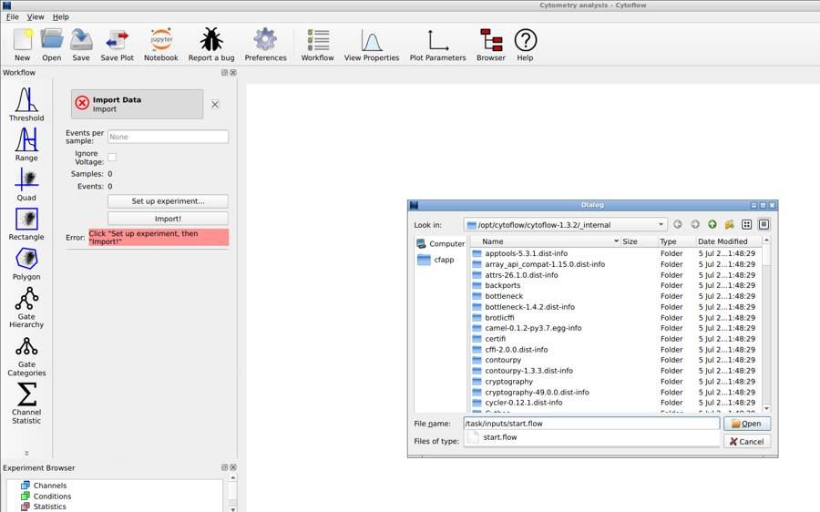
text(await tools.exec_command({cmd:"cu click 1312 745\ncu screenshot /tmp/screen.png","max_output_tokens":1000}));
image((await tools.view_image({path:"/tmp/screen.png"})).image_url);
Script completed Wall time 0.2 seconds Output:
{"chunk_id":"ed031e","wall_time_seconds":0.014781352,"exit_code":0,"original_token_count":4,"output":"/tmp/screen.png\n"}
text(await tools.exec_command({cmd:"cu click 1312 745\ncu key Return\ncu screenshot /tmp/screen.png","max_output_tokens":1000}));
image((await tools.view_image({path:"/tmp/screen.png"})).image_url);
Script completed Wall time 0.2 seconds Output:
{"chunk_id":"b7b4cf","wall_time_seconds":0.021240047,"exit_code":0,"original_token_count":4,"output":"/tmp/screen.png\n"}
text(await tools.exec_command({cmd:"cu screenshot /tmp/screen.png","max_output_tokens":1000}));
image((await tools.view_image({path:"/tmp/screen.png"})).image_url);
Script completed Wall time 0.1 seconds Output:
{"chunk_id":"086975","wall_time_seconds":0.00000346,"exit_code":0,"original_token_count":4,"output":"/tmp/screen.png\n"}text(await tools.exec_command({cmd:"cu click 229 185\ncu click 21 30\ncu screenshot /tmp/screen.png","max_output_tokens":1000}));
image((await tools.view_image({path:"/tmp/screen.png"})).image_url);
Script completed Wall time 0.3 seconds Output:
{"chunk_id":"34adc6","wall_time_seconds":0.119158179,"exit_code":0,"original_token_count":4,"output":"/tmp/screen.png\n"}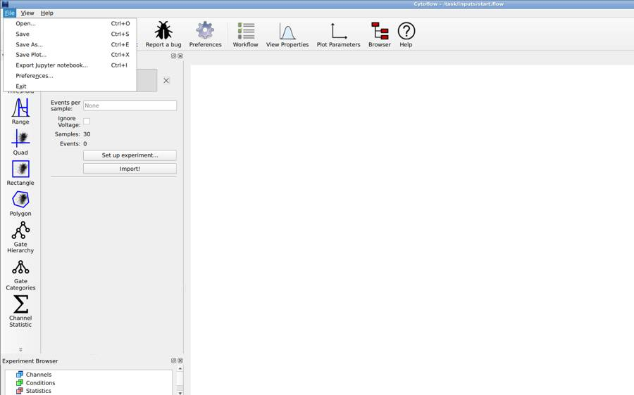
text(await tools.exec_command({cmd:"cu click 80 100\ncu screenshot /tmp/screen.png","max_output_tokens":1000}));
image((await tools.view_image({path:"/tmp/screen.png"})).image_url);
Script completed Wall time 0.2 seconds Output:
{"chunk_id":"4ad92a","wall_time_seconds":0.014824293,"exit_code":0,"original_token_count":4,"output":"/tmp/screen.png\n"}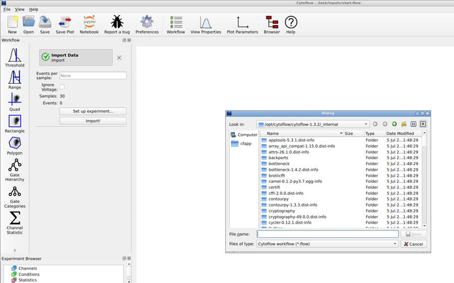
text(await tools.exec_command({cmd:"cu paste /task/outputs/workflow.flow\ncu click 1311 745","max_output_tokens":1000}));
text(await tools.exec_command({cmd:"cu click 292 384\ncu screenshot /tmp/screen.png","max_output_tokens":1000}));
image((await tools.view_image({path:"/tmp/screen.png"})).image_url);
Script completed Wall time 1.6 seconds Output:
{"chunk_id":"6e0217","wall_time_seconds":1.288701794,"exit_code":0,"original_token_count":0,"output":""}{"chunk_id":"abc3d9","wall_time_seconds":0.008057827,"exit_code":0,"original_token_count":4,"output":"/tmp/screen.png\n"}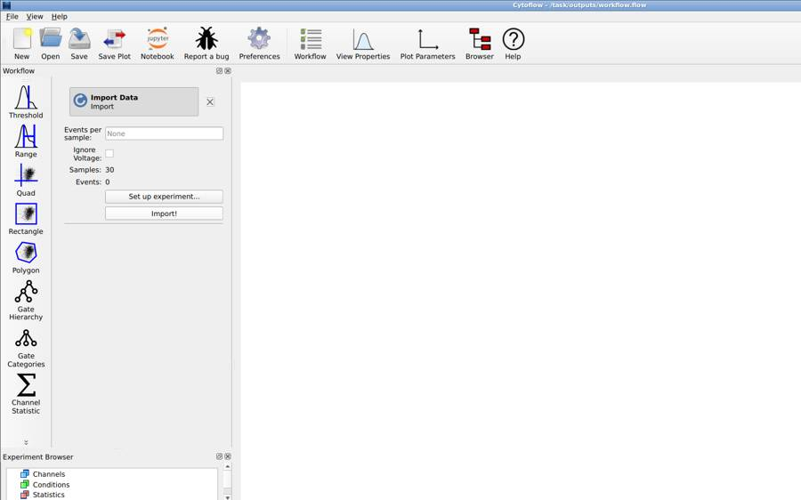
text(await tools.exec_command({cmd:"cu click 46 453\ncu screenshot /tmp/screen.png","max_output_tokens":1000}));
image((await tools.view_image({path:"/tmp/screen.png"})).image_url);
Script completed Wall time 0.2 seconds Output:
{"chunk_id":"e44874","wall_time_seconds":0.007804397,"exit_code":0,"original_token_count":4,"output":"/tmp/screen.png\n"}
text(await tools.exec_command({cmd:"cu screenshot /tmp/screen.png","max_output_tokens":1000}));
image((await tools.view_image({path:"/tmp/screen.png"})).image_url);
Script completed Wall time 0.1 seconds Output:
{"chunk_id":"0b4cc7","wall_time_seconds":0.00000338,"exit_code":0,"original_token_count":4,"output":"/tmp/screen.png\n"}
text(await tools.exec_command({cmd:"cu click 271 323\ncu type Cells\ncu click 352 353\ncu screenshot /tmp/screen.png","max_output_tokens":1000}));
image((await tools.view_image({path:"/tmp/screen.png"})).image_url);
Script completed Wall time 0.4 seconds Output:
{"chunk_id":"5699d7","wall_time_seconds":0.242735822,"exit_code":0,"original_token_count":4,"output":"/tmp/screen.png\n"}
text(await tools.exec_command({cmd:"cu click 220 377\ncu click 354 383\ncu click 221 503\ncu click 651 71\ncu screenshot /tmp/screen.png","max_output_tokens":1000}));
image((await tools.view_image({path:"/tmp/screen.png"})).image_url);
Script completed Wall time 0.5 seconds Output:
{"chunk_id":"30df98","wall_time_seconds":0.322958809,"exit_code":0,"original_token_count":4,"output":"/tmp/screen.png\n"}
text(await tools.exec_command({cmd:"cu screenshot /tmp/screen.png","max_output_tokens":1000}));
image((await tools.view_image({path:"/tmp/screen.png"})).image_url);
Script completed Wall time 0.2 seconds Output:
{"chunk_id":"1c6fc5","wall_time_seconds":0.00000391,"exit_code":0,"original_token_count":4,"output":"/tmp/screen.png\n"}
text(await tools.exec_command({cmd:"cu click 651 70\ncu screenshot /tmp/screen.png","max_output_tokens":1000}));
image((await tools.view_image({path:"/tmp/screen.png"})).image_url);
Script completed Wall time 0.2 seconds Output:
{"chunk_id":"229fe2","wall_time_seconds":0.053824805,"exit_code":0,"original_token_count":4,"output":"/tmp/screen.png\n"}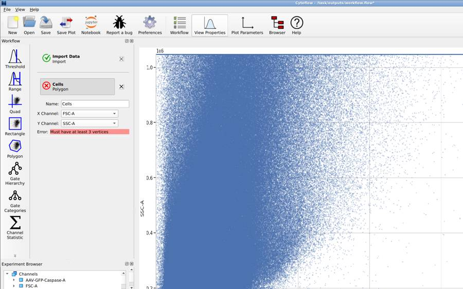
text(await tools.exec_command({cmd:"cu click 801 9 double\ncu screenshot /tmp/screen.png","max_output_tokens":1000}));
image((await tools.view_image({path:"/tmp/screen.png"})).image_url);
Script completed Wall time 0.3 seconds Output:
{"chunk_id":"144f7a","wall_time_seconds":0.13153485,"exit_code":0,"original_token_count":4,"output":"/tmp/screen.png\n"}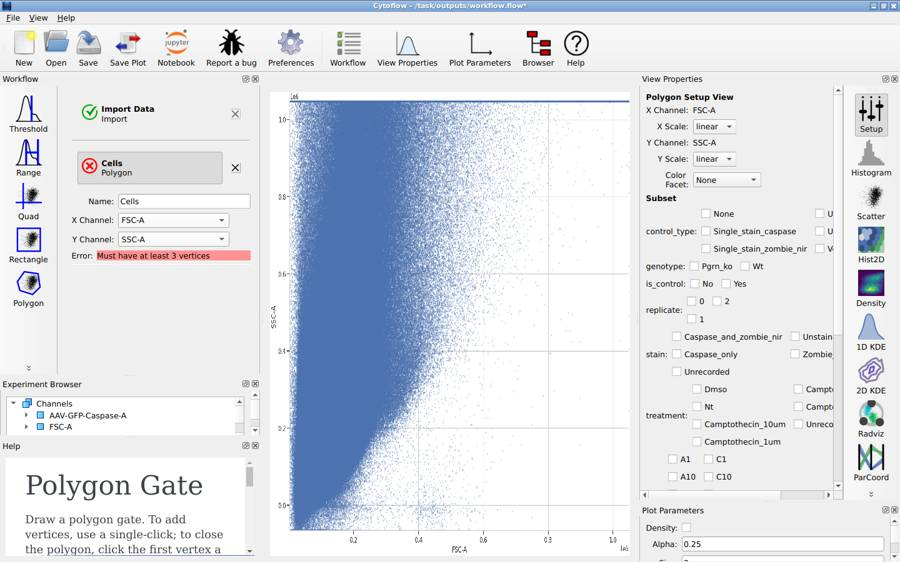
text(await tools.exec_command({cmd:"cu click 1166 202\ncu screenshot /tmp/screen.png","max_output_tokens":1000}));
image((await tools.view_image({path:"/tmp/screen.png"})).image_url);
Script completed Wall time 0.2 seconds Output:
{"chunk_id":"e9c7c6","wall_time_seconds":0.026231752,"exit_code":0,"original_token_count":4,"output":"/tmp/screen.png\n"}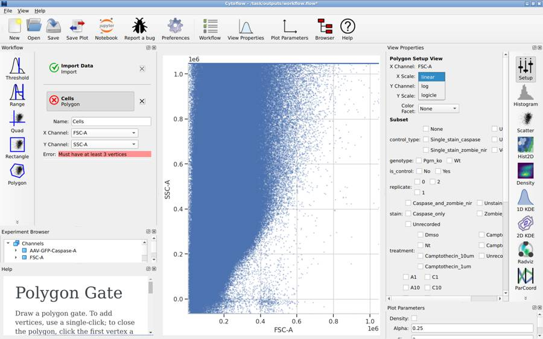
text(await tools.exec_command({cmd:"cu click 1127 229\ncu click 1166 255\ncu click 1130 281\ncu click 1076 735\ncu screenshot /tmp/screen.png","max_output_tokens":1000}));
image((await tools.view_image({path:"/tmp/screen.png"})).image_url);
Script completed Wall time 0.5 seconds Output:
{"chunk_id":"20c926","wall_time_seconds":0.346435308,"exit_code":0,"original_token_count":4,"output":"/tmp/screen.png\n"}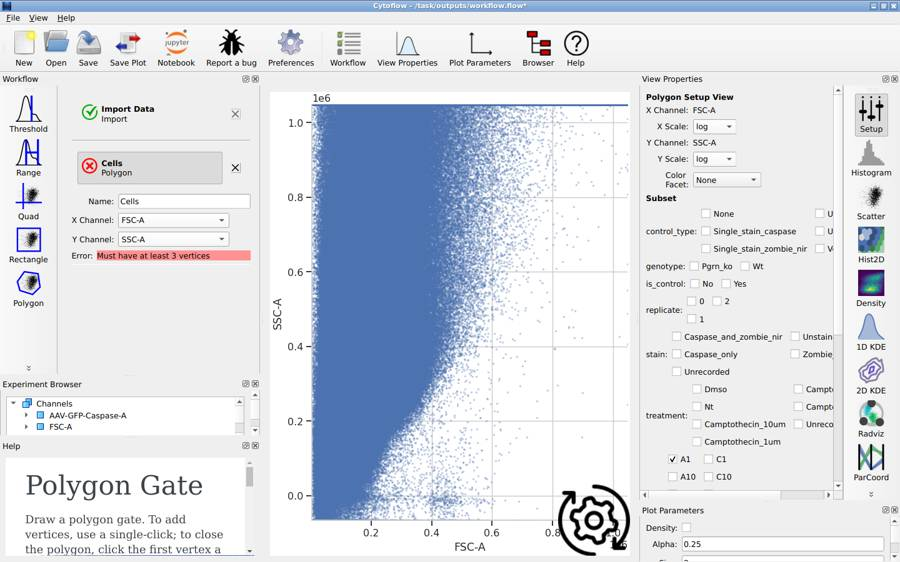
text(await tools.exec_command({cmd:"cu screenshot /tmp/screen.png","max_output_tokens":1000}));
image((await tools.view_image({path:"/tmp/screen.png"})).image_url);
Script completed Wall time 0.1 seconds Output:
{"chunk_id":"b9a75e","wall_time_seconds":0.00000367,"exit_code":0,"original_token_count":4,"output":"/tmp/screen.png\n"}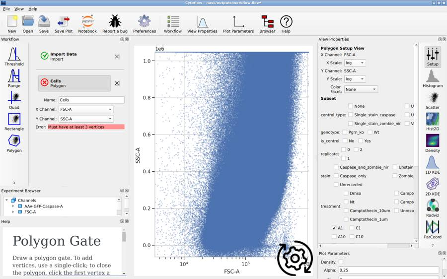
text(await tools.exec_command({cmd:"sleep 3\ncu screenshot /tmp/screen.png","max_output_tokens":1000}));
image((await tools.view_image({path:"/tmp/screen.png"})).image_url);
Script completed Wall time 3.1 seconds Output:
{"chunk_id":"b33a9a","wall_time_seconds":2.915784649,"exit_code":0,"original_token_count":4,"output":"/tmp/screen.png\n"}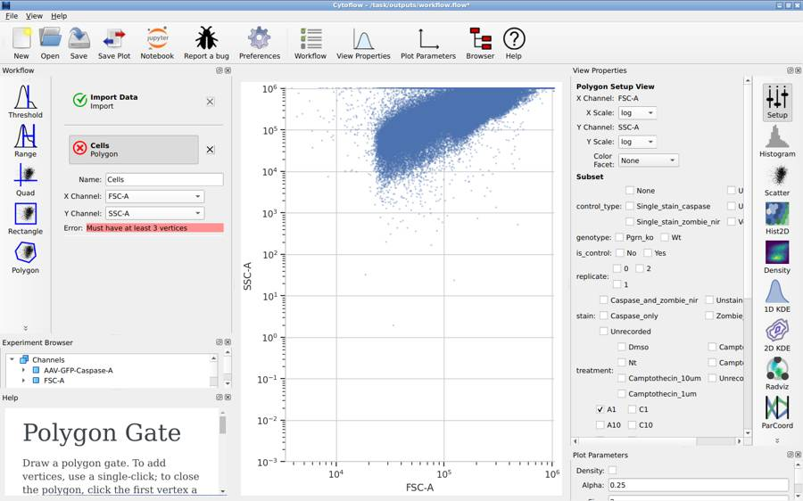
text(await tools.exec_command({cmd:"cu drag 1197 803 1197 505\ncu screenshot /tmp/screen.png","max_output_tokens":1000}));
image((await tools.view_image({path:"/tmp/screen.png"})).image_url);
Script completed Wall time 0.1 seconds Output:
{"chunk_id":"3442c8","wall_time_seconds":0.00000359,"exit_code":0,"original_token_count":4,"output":"/tmp/screen.png\n"}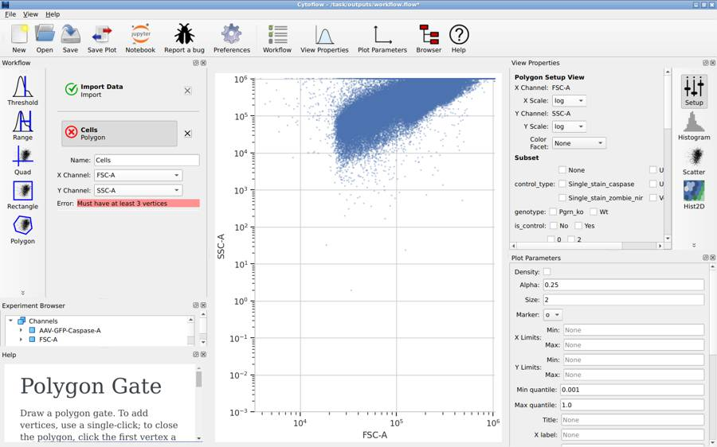
text(await tools.exec_command({cmd:"cu click 1099 547\ncu click 1232 664\ncu key ctrl+a\ncu type 10000\ncu click 1232 695\ncu key ctrl+a\ncu type 1000000\ncu click 1232 725\ncu key ctrl+a\ncu type 1000\ncu click 1232 754\ncu key ctrl+a\ncu type 1100000\ncu key Tab\nsleep 3\ncu screenshot /tmp/screen.png","max_output_tokens":1000}));
image((await tools.view_image({path:"/tmp/screen.png"})).image_url);
Script completed Wall time 4.3 seconds Output:
{"chunk_id":"6c790a","wall_time_seconds":4.167289392,"exit_code":0,"original_token_count":4,"output":"/tmp/screen.png\n"}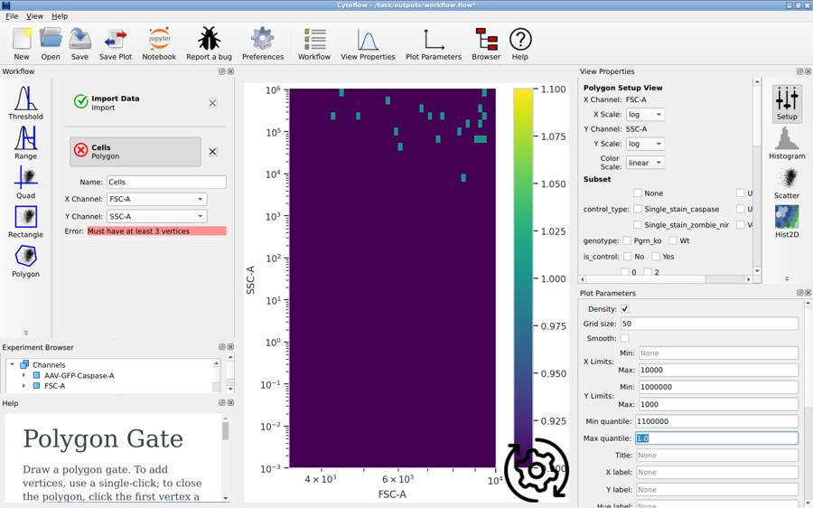
text(await tools.exec_command({cmd:"cu click 1232 625\ncu key ctrl+a\ncu type 10000\ncu click 1232 655\ncu key ctrl+a\ncu type 1000000\ncu click 1232 685\ncu key ctrl+a\ncu type 1000\ncu click 1232 715\ncu key ctrl+a\ncu type 1100000\ncu click 1232 745\ncu key ctrl+a\ncu type 0.001\ncu key Tab\nsleep 3\ncu screenshot /tmp/screen.png","max_output_tokens":1000}));
image((await tools.view_image({path:"/tmp/screen.png"})).image_url);
Script completed Wall time 4.5 seconds Output:
{"chunk_id":"cf5f99","wall_time_seconds":4.312808523,"exit_code":0,"original_token_count":4,"output":"/tmp/screen.png\n"}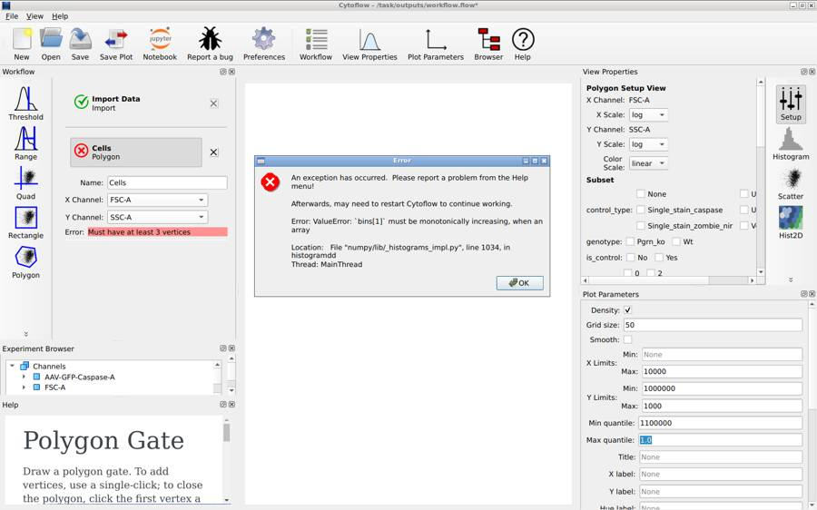
text(await tools.exec_command({cmd:"cu click 917 500\ncu click 1232 745\ncu key ctrl+a\ncu type 0.001\ncu click 1232 715\ncu key ctrl+a\ncu type 1100000\ncu click 1232 685\ncu key ctrl+a\ncu type 1000\ncu click 1232 655\ncu key ctrl+a\ncu type 1000000\ncu click 1232 625\ncu key ctrl+a\ncu type 10000\ncu key Tab\nsleep 3\ncu screenshot /tmp/screen.png","max_output_tokens":1000}));
image((await tools.view_image({path:"/tmp/screen.png"})).image_url);
Script completed Wall time 4.6 seconds Output:
{"chunk_id":"1b098a","wall_time_seconds":4.427691109,"exit_code":0,"original_token_count":4,"output":"/tmp/screen.png\n"}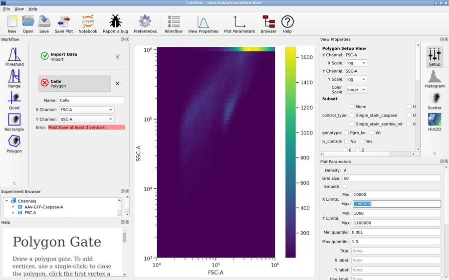
text(await tools.exec_command({cmd:"cu drag 1200 506 1200 781\ncu scroll 1234 640 down 4\ncu screenshot /tmp/screen.png","max_output_tokens":1000}));
image((await tools.view_image({path:"/tmp/screen.png"})).image_url);
Script completed Wall time 0.5 seconds Output:
{"chunk_id":"dd9bbd","wall_time_seconds":0.350924483,"exit_code":0,"original_token_count":4,"output":"/tmp/screen.png\n"}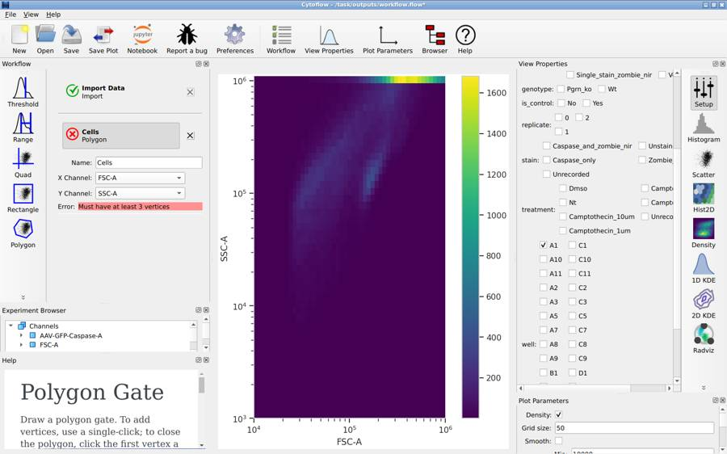
text(await tools.exec_command({cmd:"cu click 1076 486\ncu click 1076 625\nsleep 3\ncu screenshot /tmp/screen.png","max_output_tokens":1000}));
image((await tools.view_image({path:"/tmp/screen.png"})).image_url);
Script completed Wall time 3.3 seconds Output:
{"chunk_id":"2f1105","wall_time_seconds":3.124288102,"exit_code":0,"original_token_count":4,"output":"/tmp/screen.png\n"}text(await tools.exec_command({cmd:"cu scroll 1234 300 up 8\ncu screenshot /tmp/screen.png","max_output_tokens":1000}));
image((await tools.view_image({path:"/tmp/screen.png"})).image_url);
Script completed Wall time 0.9 seconds Output:
{"chunk_id":"4dd432","wall_time_seconds":0.718532669,"exit_code":0,"original_token_count":4,"output":"/tmp/screen.png\n"}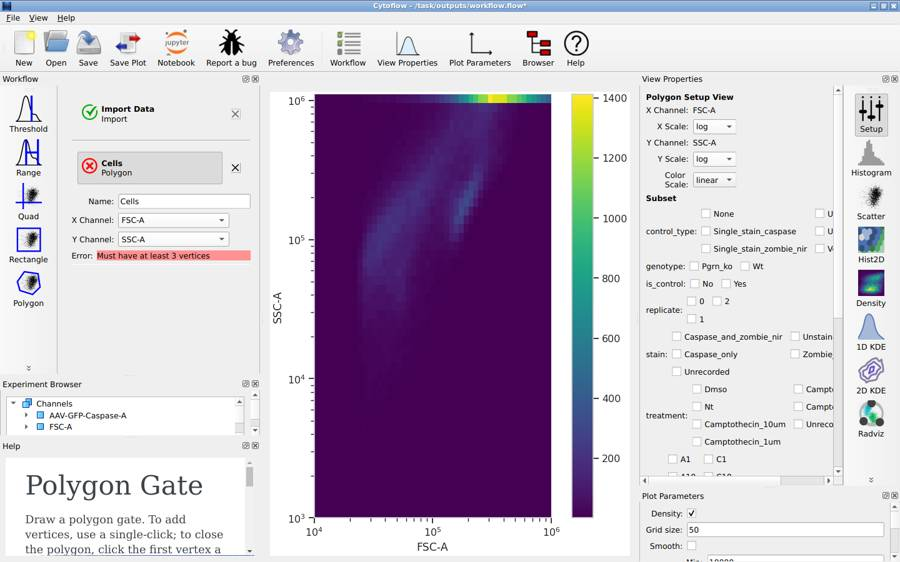
text(await tools.exec_command({cmd:"cu click 1168 288\ncu click 1132 315\nsleep 2\ncu screenshot /tmp/screen.png","max_output_tokens":1000}));
image((await tools.view_image({path:"/tmp/screen.png"})).image_url);
text(await tools.clock__curr_time({}));
Script completed Wall time 2.3 seconds Output:
{"chunk_id":"881f20","wall_time_seconds":2.123481059,"exit_code":0,"original_token_count":4,"output":"/tmp/screen.png\n"}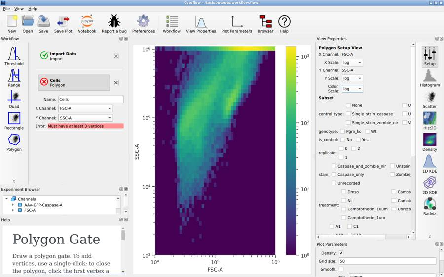
{"current_time":"2026-11-05 08:18:47 UTC"}text(await tools.exec_command({cmd:"cu click 670 435\ncu click 643 374\ncu click 658 290\ncu click 709 216\ncu click 766 167\ncu click 822 163\ncu click 849 206\ncu click 818 298\ncu click 767 382\ncu click 713 433\ncu click 670 435\nsleep 3\ncu screenshot /tmp/screen.png","max_output_tokens":1000}));
image((await tools.view_image({path:"/tmp/screen.png"})).image_url);
Script completed Wall time 4.3 seconds Output:
{"chunk_id":"d8a3db","wall_time_seconds":4.079608738,"exit_code":0,"original_token_count":4,"output":"/tmp/screen.png\n"}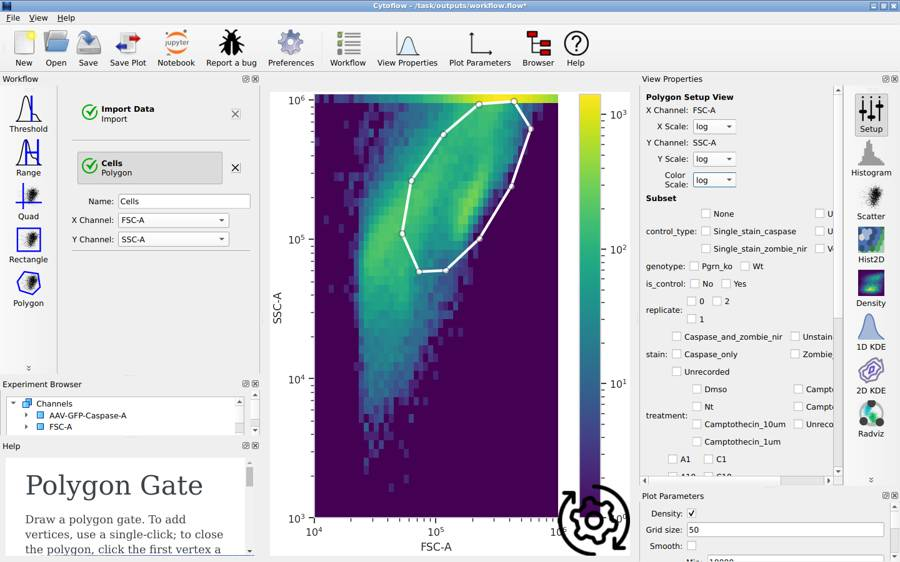
text(await tools.exec_command({cmd:"cu key ctrl+s\ncu click 44 450\nsleep 1\ncu screenshot /tmp/screen.png","max_output_tokens":1000}));
image((await tools.view_image({path:"/tmp/screen.png"})).image_url);
Script completed Wall time 1.2 seconds Output:
{"chunk_id":"6bb557","wall_time_seconds":1.04358876,"exit_code":0,"original_token_count":4,"output":"/tmp/screen.png\n"}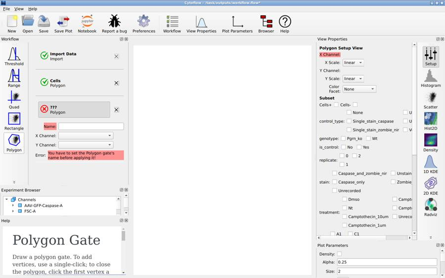
text(await tools.exec_command({cmd:"cu click 277 408\ncu type Single_Cells\ncu click 353 439\ncu screenshot /tmp/screen.png","max_output_tokens":1000}));
image((await tools.view_image({path:"/tmp/screen.png"})).image_url);
Script completed Wall time 0.6 seconds Output:
{"chunk_id":"69dbc5","wall_time_seconds":0.430492948,"exit_code":0,"original_token_count":4,"output":"/tmp/screen.png\n"}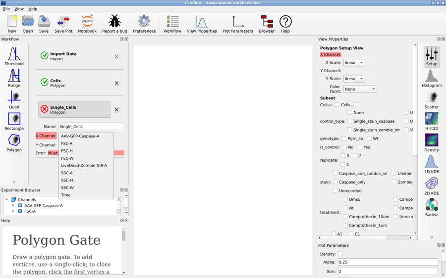
text(await tools.exec_command({cmd:"cu click 221 584\ncu click 355 468\ncu screenshot /tmp/screen.png","max_output_tokens":1000}));
image((await tools.view_image({path:"/tmp/screen.png"})).image_url);
Script completed Wall time 0.3 seconds Output:
{"chunk_id":"fa0e66","wall_time_seconds":0.121875282,"exit_code":0,"original_token_count":4,"output":"/tmp/screen.png\n"}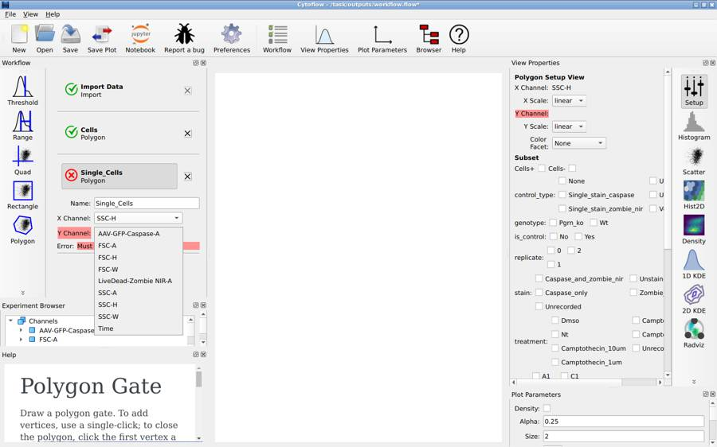
text(await tools.exec_command({cmd:"cu click 219 590\ncu click 1088 338\nsleep 3\ncu screenshot /tmp/screen.png","max_output_tokens":1000}));
image((await tools.view_image({path:"/tmp/screen.png"})).image_url);
Script completed Wall time 3.3 seconds Output:
{"chunk_id":"38a7d9","wall_time_seconds":3.132102099,"exit_code":0,"original_token_count":4,"output":"/tmp/screen.png\n"}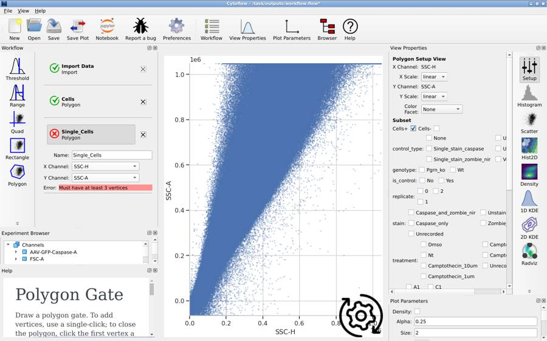
text(await tools.exec_command({cmd:"cu click 1099 821\nsleep 3\ncu screenshot /tmp/screen.png","max_output_tokens":1000}));
image((await tools.view_image({path:"/tmp/screen.png"})).image_url);
Script completed Wall time 3.2 seconds Output:
{"chunk_id":"631386","wall_time_seconds":3.020130616,"exit_code":0,"original_token_count":4,"output":"/tmp/screen.png\n"}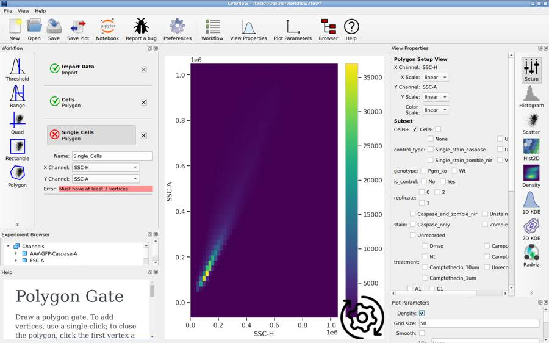
text(await tools.exec_command({cmd:"cu click 1166 289\ncu click 1135 315\nsleep 2\ncu screenshot /tmp/screen.png","max_output_tokens":1000}));
image((await tools.view_image({path:"/tmp/screen.png"})).image_url);
Script completed Wall time 2.3 seconds Output:
{"chunk_id":"f7a0f4","wall_time_seconds":2.12471643,"exit_code":0,"original_token_count":4,"output":"/tmp/screen.png\n"}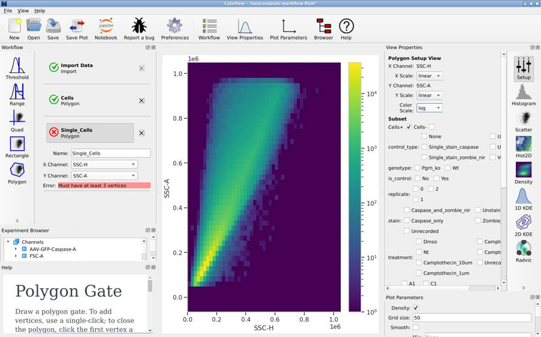
text(await tools.exec_command({cmd:"cu click 511 765\ncu click 665 220\ncu click 792 220\ncu click 550 765\ncu click 511 765\ncu key ctrl+s\ncu click 44 245\nsleep 2\ncu screenshot /tmp/screen.png","max_output_tokens":1000}));
image((await tools.view_image({path:"/tmp/screen.png"})).image_url);
Script completed Wall time 2.8 seconds Output:
{"chunk_id":"1eef5f","wall_time_seconds":2.58080817,"exit_code":0,"original_token_count":4,"output":"/tmp/screen.png\n"}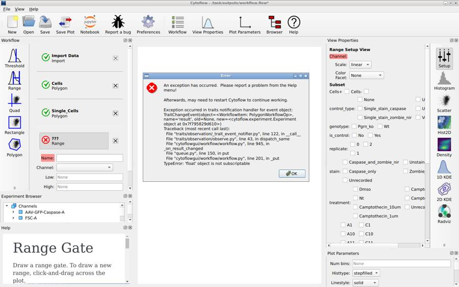
text(await tools.exec_command({cmd:"cu click 915 544\ncu click 275 494\ncu type Live\ncu click 341 525\ncu screenshot /tmp/screen.png","max_output_tokens":1000}));
image((await tools.view_image({path:"/tmp/screen.png"})).image_url);
Script completed Wall time 0.5 seconds Output:
{"chunk_id":"a10db5","wall_time_seconds":0.333825008,"exit_code":0,"original_token_count":4,"output":"/tmp/screen.png\n"}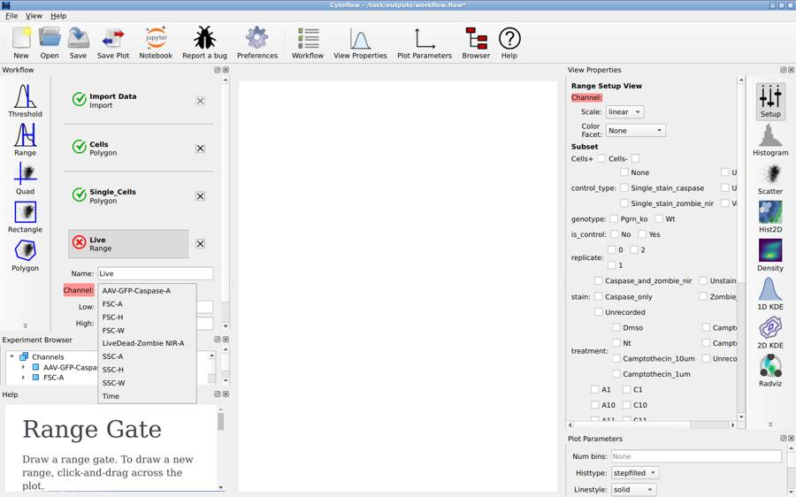
text(await tools.exec_command({cmd:"cu click 266 620\ncu click 1157 202\ncu click 1130 253\ncu click 1088 286\nsleep 3\ncu screenshot /tmp/screen.png","max_output_tokens":1000}));
image((await tools.view_image({path:"/tmp/screen.png"})).image_url);
Script completed Wall time 3.5 seconds Output:
{"chunk_id":"604315","wall_time_seconds":3.33712653,"exit_code":0,"original_token_count":4,"output":"/tmp/screen.png\n"}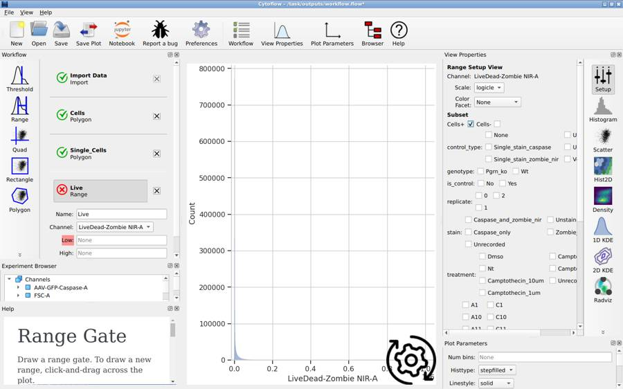
text(await tools.exec_command({cmd:"sleep 2\ncu screenshot /tmp/screen.png","max_output_tokens":1000}));
image((await tools.view_image({path:"/tmp/screen.png"})).image_url);
Script completed Wall time 2.1 seconds Output:
{"chunk_id":"8795ae","wall_time_seconds":1.912458813,"exit_code":0,"original_token_count":4,"output":"/tmp/screen.png\n"}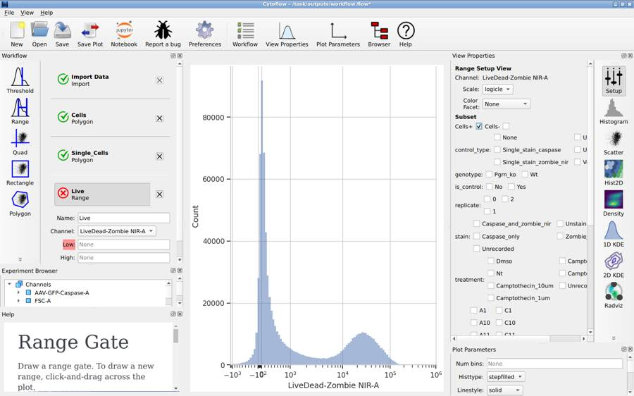
text(await tools.exec_command({cmd:"cu click 1193 235\ncu screenshot /tmp/screen.png","max_output_tokens":1000}));
image((await tools.view_image({path:"/tmp/screen.png"})).image_url);
Script completed Wall time 0.2 seconds Output:
{"chunk_id":"4186e3","wall_time_seconds":0.018436985,"exit_code":0,"original_token_count":4,"output":"/tmp/screen.png\n"}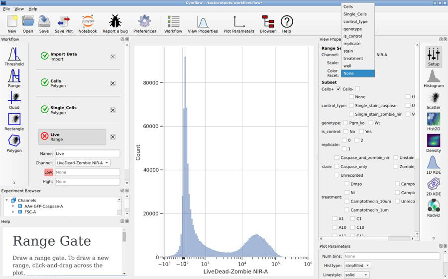
text(await tools.exec_command({cmd:"cu click 1122 211\ncu scroll 1237 633 down 3\ncu screenshot /tmp/screen.png","max_output_tokens":1000}));
image((await tools.view_image({path:"/tmp/screen.png"})).image_url);
Script completed Wall time 0.5 seconds Output:
{"chunk_id":"f4b2e5","wall_time_seconds":0.325553791,"exit_code":0,"original_token_count":4,"output":"/tmp/screen.png\n"}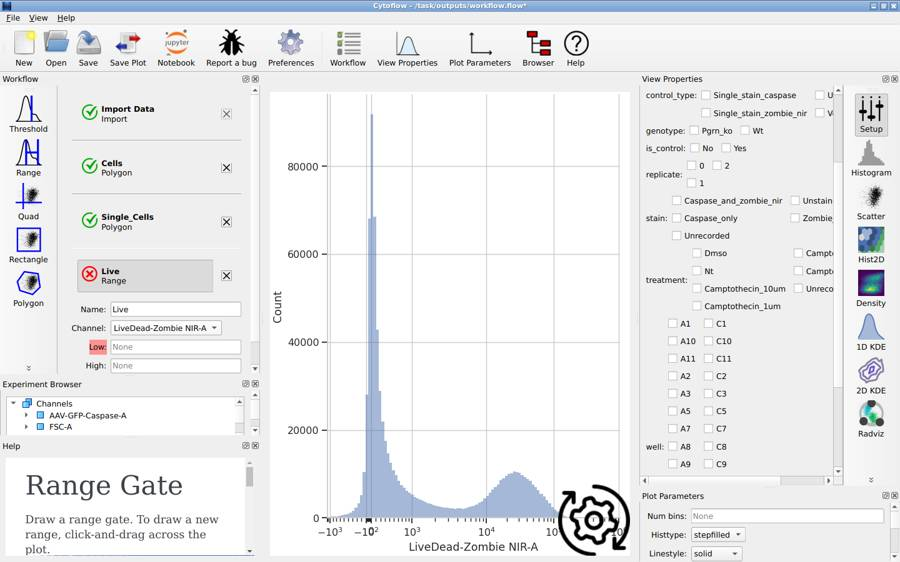
text(await tools.exec_command({cmd:"cu click 1076 517\ncu click 1133 517\ncu click 1076 629\ncu click 1133 629\nsleep 3\ncu screenshot /tmp/screen.png","max_output_tokens":1000}));
image((await tools.view_image({path:"/tmp/screen.png"})).image_url);
Script completed Wall time 3.5 seconds Output:
{"chunk_id":"1f81ef","wall_time_seconds":3.33681178,"exit_code":0,"original_token_count":4,"output":"/tmp/screen.png\n"}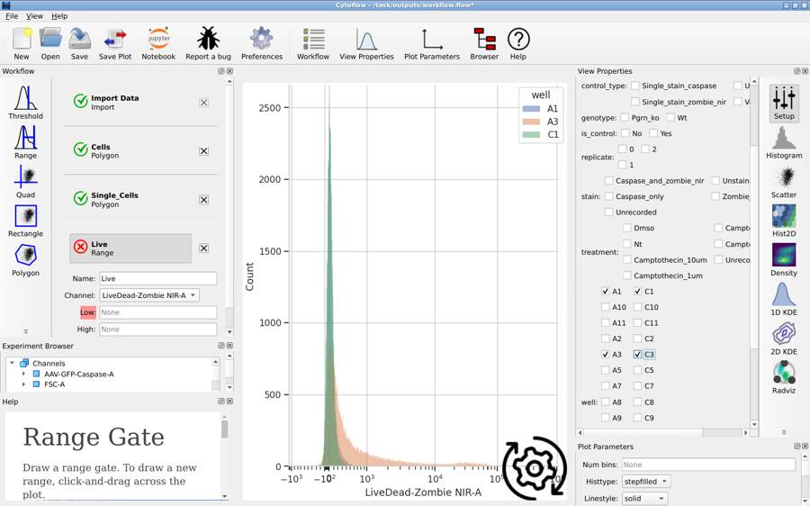
text(await tools.exec_command({cmd:"cu click 263 555\ncu type -1000000\ncu click 263 586\ncu type 1500\ncu key Tab\nsleep 2\ncu key ctrl+s\ncu key ctrl+o\nsleep 1\ncu paste /task/outputs/workflow.flow\ncu click 1312 745\nsleep 1\ncu screenshot /tmp/screen.png","max_output_tokens":1000}));
image((await tools.view_image({path:"/tmp/screen.png"})).image_url);
Script completed Wall time 6.1 seconds Output:
{"chunk_id":"2c1e60","wall_time_seconds":5.955834642,"exit_code":0,"original_token_count":4,"output":"/tmp/screen.png\n"}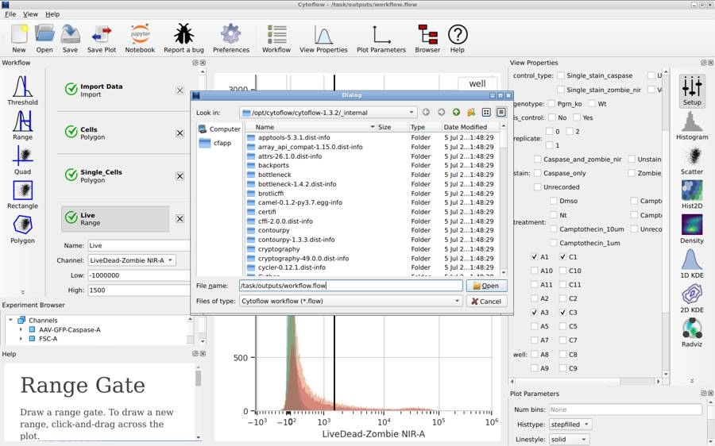
text(await tools.exec_command({cmd:"cu click 978 577\nsleep 1\ncu screenshot /tmp/screen.png","max_output_tokens":1000}));
image((await tools.view_image({path:"/tmp/screen.png"})).image_url);
Script completed Wall time 1.2 seconds Output:
{"chunk_id":"905088","wall_time_seconds":1.011556763,"exit_code":0,"original_token_count":4,"output":"/tmp/screen.png\n"}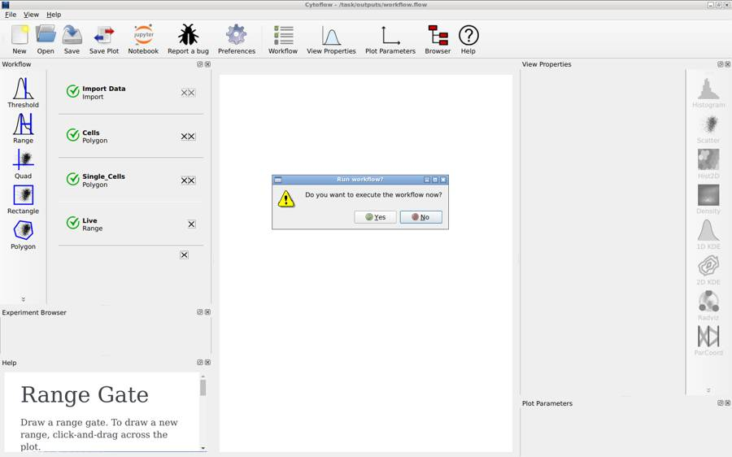
text(await tools.exec_command({cmd:"cu click 739 427\nsleep 5\ncu click 227 440\ncu scroll 1242 270 up 10\ncu screenshot /tmp/screen.png","max_output_tokens":1000}));
image((await tools.view_image({path:"/tmp/screen.png"})).image_url);
Script completed Wall time 6.3 seconds Output:
{"chunk_id":"86393a","wall_time_seconds":6.1361445119999996,"exit_code":0,"original_token_count":4,"output":"/tmp/screen.png\n"}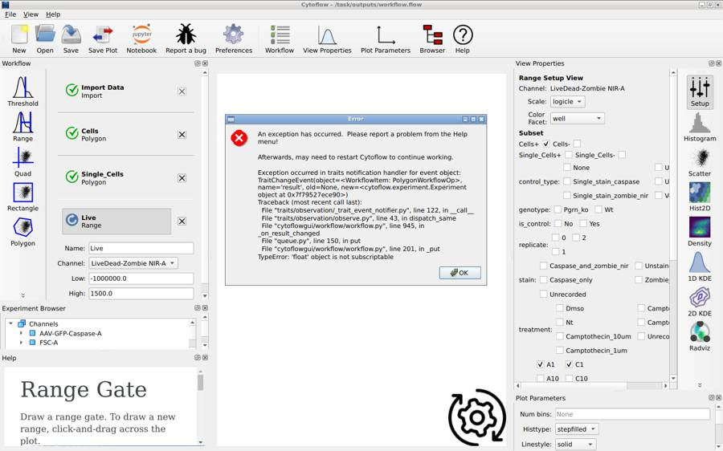
text(await tools.exec_command({cmd:"cu click 913 545\ncu click 1133 309\nsleep 3\ncu screenshot /tmp/screen.png","max_output_tokens":1000}));
image((await tools.view_image({path:"/tmp/screen.png"})).image_url);
Script completed Wall time 3.3 seconds Output:
{"chunk_id":"1e5702","wall_time_seconds":3.125600604,"exit_code":0,"original_token_count":4,"output":"/tmp/screen.png\n"}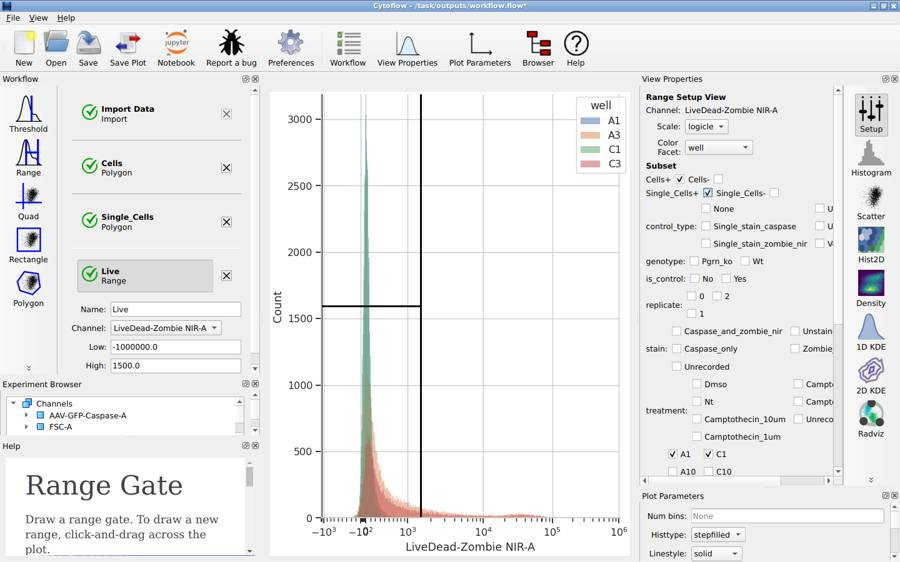
text(await tools.exec_command({cmd:"cu scroll 1248 650 down 4\ncu screenshot /tmp/screen.png","max_output_tokens":1000}));
image((await tools.view_image({path:"/tmp/screen.png"})).image_url);
Script completed Wall time 0.5 seconds Output:
{"chunk_id":"50889e","wall_time_seconds":0.318559655,"exit_code":0,"original_token_count":4,"output":"/tmp/screen.png\n"}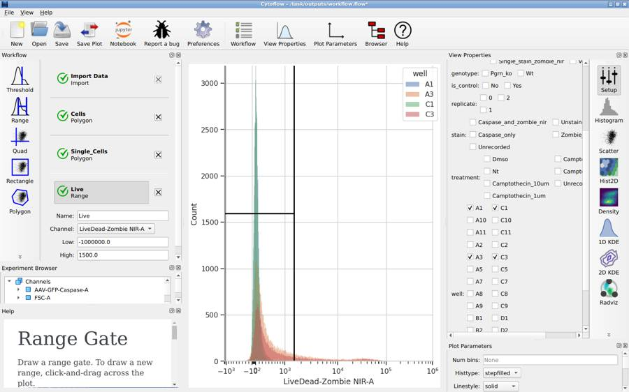
text(await tools.exec_command({cmd:"cu click 1076 477\ncu click 1133 477\ncu click 1076 589\ncu click 1133 589\ncu click 1076 505\ncu click 1133 505\nsleep 3\ncu screenshot /tmp/screen.png","max_output_tokens":1000}));
image((await tools.view_image({path:"/tmp/screen.png"})).image_url);
Script completed Wall time 3.7 seconds Output:
{"chunk_id":"6dd4cd","wall_time_seconds":3.550345187,"exit_code":0,"original_token_count":4,"output":"/tmp/screen.png\n"}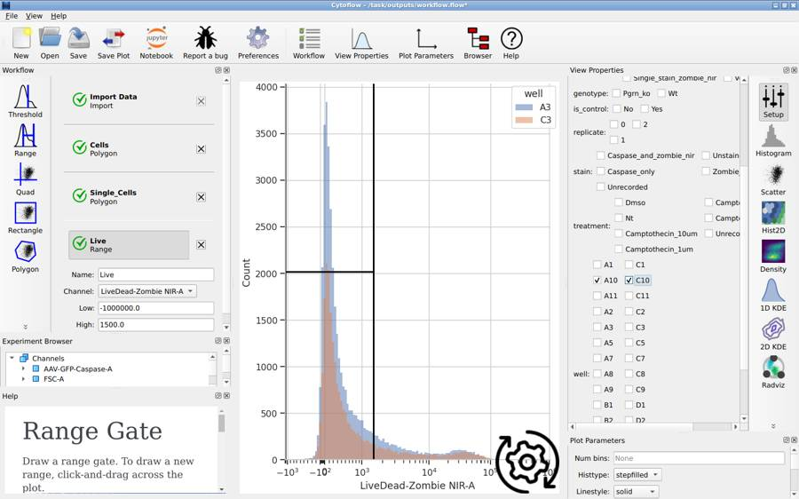
text(await tools.exec_command({cmd:"sleep 2\ncu screenshot /tmp/screen.png","max_output_tokens":1000}));
image((await tools.view_image({path:"/tmp/screen.png"})).image_url);
Script completed Wall time 2.1 seconds Output:
{"chunk_id":"131074","wall_time_seconds":1.9126683930000001,"exit_code":0,"original_token_count":4,"output":"/tmp/screen.png\n"}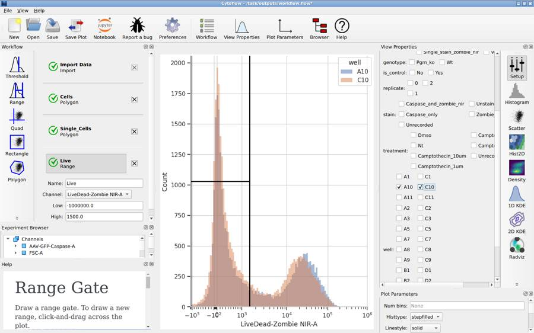
text(await tools.exec_command({cmd:"cu click 259 585\ncu key ctrl+a\ncu type 3000\ncu key Tab\nsleep 2\ncu key ctrl+s\ncu click 44 172\nsleep 2\ncu screenshot /tmp/screen.png","max_output_tokens":1000}));
image((await tools.view_image({path:"/tmp/screen.png"})).image_url);
Script completed Wall time 4.5 seconds Output:
{"chunk_id":"09ca33","wall_time_seconds":4.2991935009999995,"exit_code":0,"original_token_count":4,"output":"/tmp/screen.png\n"}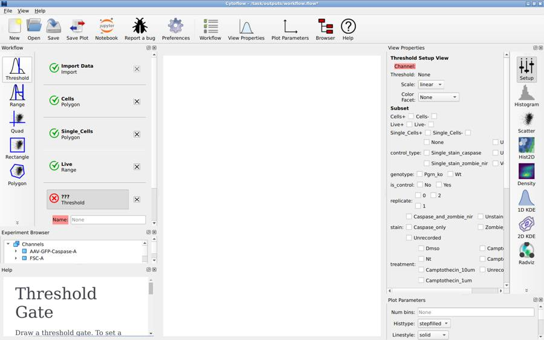
text(await tools.exec_command({cmd:"cu click 408 713\ncu click 408 614\ncu click 276 581\ncu key ctrl+a\ncu type Caspase_pos\ncu scroll 327 528 down 3\ncu screenshot /tmp/screen.png","max_output_tokens":1000}));
image((await tools.view_image({path:"/tmp/screen.png"})).image_url);
Script completed Wall time 1.0 seconds Output:
{"chunk_id":"28e804","wall_time_seconds":0.843575513,"exit_code":0,"original_token_count":4,"output":"/tmp/screen.png\n"}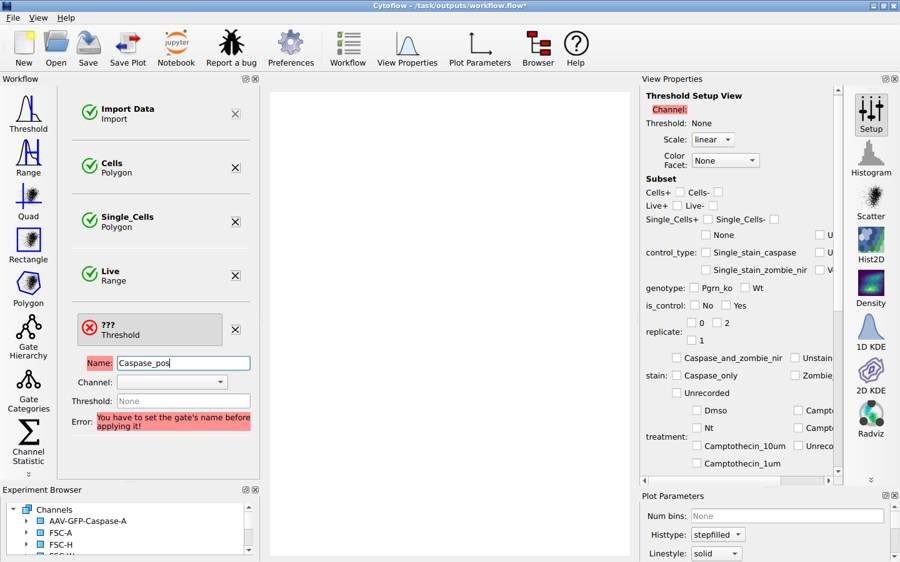
text(await tools.exec_command({cmd:"cu click 353 612\ncu click 253 612\ncu click 1166 224\ncu click 1136 274\ncu click 1088 307\ncu click 1083 329\ncu click 1132 351\ncu click 1203 257\ncu screenshot /tmp/screen.png","max_output_tokens":1000}));
image((await tools.view_image({path:"/tmp/screen.png"})).image_url);
Script completed Wall time 0.9 seconds Output:
{"chunk_id":"b0dd68","wall_time_seconds":0.757182881,"exit_code":0,"original_token_count":4,"output":"/tmp/screen.png\n"}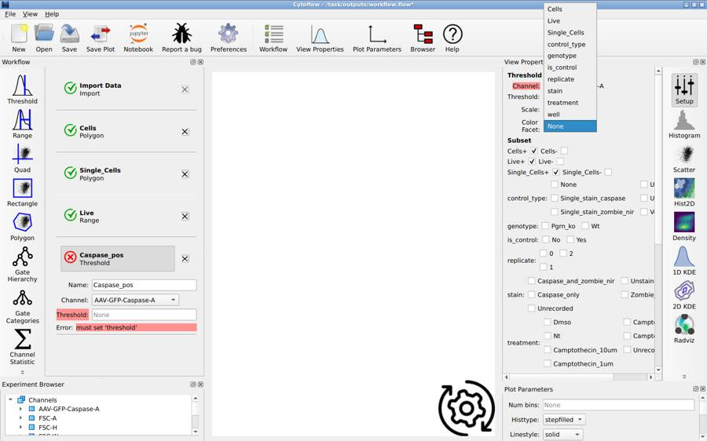
text(await tools.exec_command({cmd:"cu click 1129 233\ncu scroll 1252 640 down 4\ncu screenshot /tmp/screen.png","max_output_tokens":1000}));
image((await tools.view_image({path:"/tmp/screen.png"})).image_url);
Script completed Wall time 0.6 seconds Output:
{"chunk_id":"b0660e","wall_time_seconds":0.424263314,"exit_code":0,"original_token_count":4,"output":"/tmp/screen.png\n"}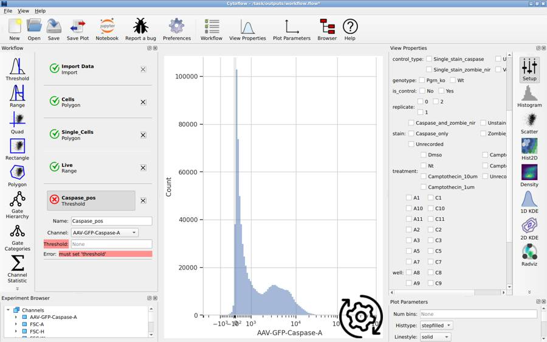
text(await tools.exec_command({cmd:"cu click 1076 520\ncu click 1134 520\ncu click 1076 604\ncu click 1134 604\nsleep 4\ncu screenshot /tmp/screen.png","max_output_tokens":1000}));
image((await tools.view_image({path:"/tmp/screen.png"})).image_url);
Script completed Wall time 4.5 seconds Output:
{"chunk_id":"6c33eb","wall_time_seconds":4.336770143,"exit_code":0,"original_token_count":4,"output":"/tmp/screen.png\n"}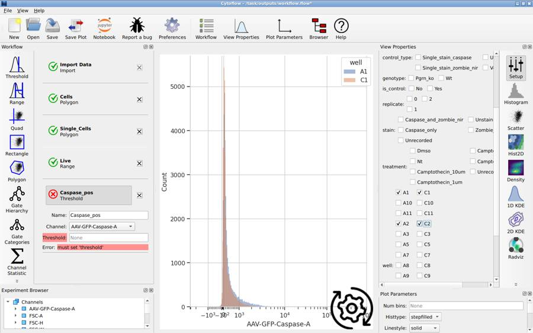
text(await tools.exec_command({cmd:"sleep 2\ncu screenshot /tmp/screen.png","max_output_tokens":1000}));
image((await tools.view_image({path:"/tmp/screen.png"})).image_url);
Script completed Wall time 2.1 seconds Output:
{"chunk_id":"76f89c","wall_time_seconds":1.912681293,"exit_code":0,"original_token_count":4,"output":"/tmp/screen.png\n"}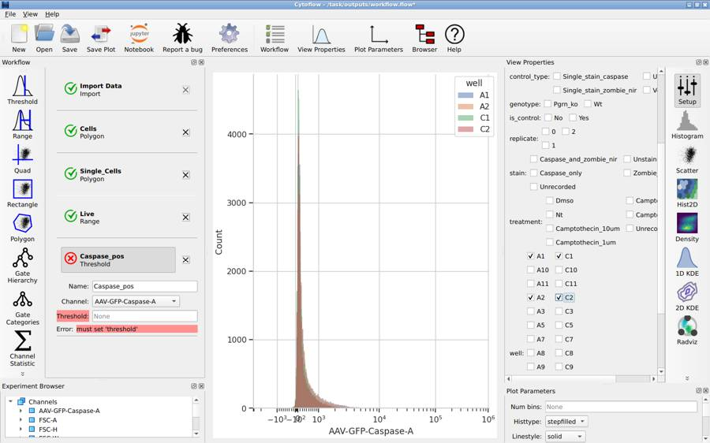
text(await tools.exec_command({cmd:"cu click 276 642\ncu type 2000\ncu key Tab\nsleep 2\ncu key ctrl+s\ncu click 45 520\nsleep 1\ncu screenshot /tmp/screen.png","max_output_tokens":1000}));
image((await tools.view_image({path:"/tmp/screen.png"})).image_url);
Script completed Wall time 3.4 seconds Output:
{"chunk_id":"9fc4d4","wall_time_seconds":3.271543685,"exit_code":0,"original_token_count":4,"output":"/tmp/screen.png\n"}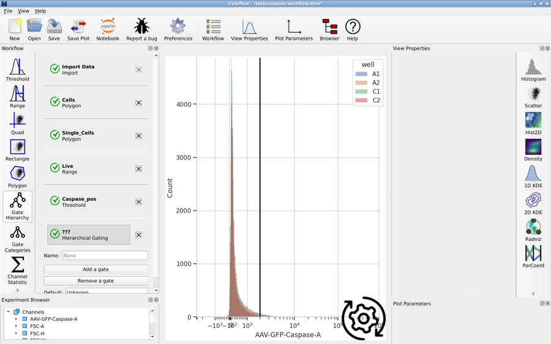
text(await tools.exec_command({cmd:"cu click 251 705\ncu scroll 304 679 down 4\ncu screenshot /tmp/screen.png","max_output_tokens":1000}));
image((await tools.view_image({path:"/tmp/screen.png"})).image_url);
Script completed Wall time 0.6 seconds Output:
{"chunk_id":"3268ec","wall_time_seconds":0.42049411,"exit_code":0,"original_token_count":4,"output":"/tmp/screen.png\n"}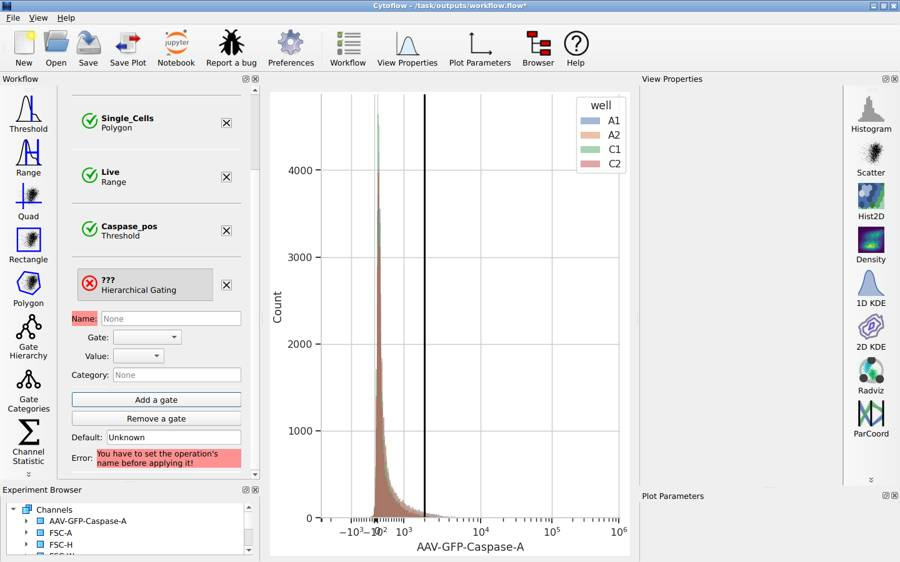
text(await tools.exec_command({cmd:"cu click 362 456\nsleep 1\ncu screenshot /tmp/screen.png","max_output_tokens":1000}));
image((await tools.view_image({path:"/tmp/screen.png"})).image_url);
Script completed Wall time 1.2 seconds Output:
{"chunk_id":"b88214","wall_time_seconds":1.011717163,"exit_code":0,"original_token_count":4,"output":"/tmp/screen.png\n"}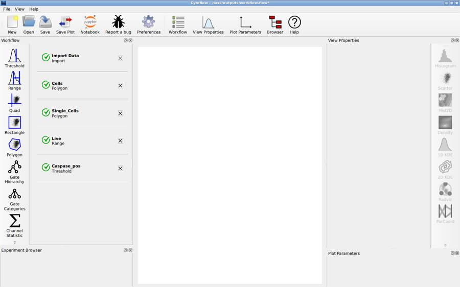
text(await tools.exec_command({cmd:"cu click 229 524\ncu click 46 692\nsleep 1\ncu screenshot /tmp/screen.png","max_output_tokens":1000}));
image((await tools.view_image({path:"/tmp/screen.png"})).image_url);
Script completed Wall time 1.3 seconds Output:
{"chunk_id":"c8b506","wall_time_seconds":1.119811263,"exit_code":0,"original_token_count":4,"output":"/tmp/screen.png\n"}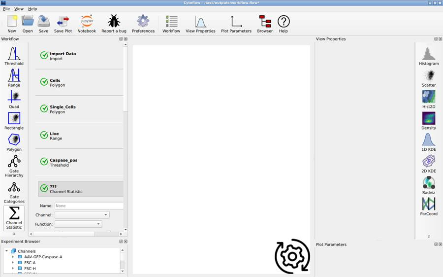
text(await tools.exec_command({cmd:"cu click 267 667\ncu key ctrl+a\ncu type Gate_counts\ncu click 343 698\ncu screenshot /tmp/screen.png","max_output_tokens":1000}));
image((await tools.view_image({path:"/tmp/screen.png"})).image_url);
Script completed Wall time 0.6 seconds Output:
{"chunk_id":"640e48","wall_time_seconds":0.428893807,"exit_code":0,"original_token_count":4,"output":"/tmp/screen.png\n"}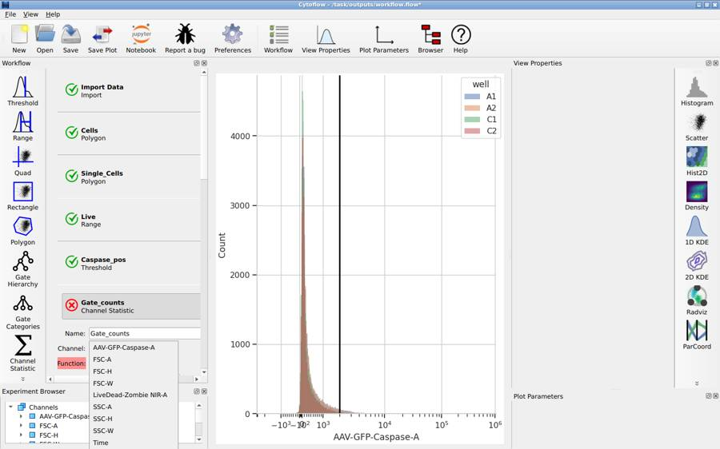
text(await tools.exec_command({cmd:"cu click 208 721\ncu click 320 727\ncu screenshot /tmp/screen.png","max_output_tokens":1000}));
image((await tools.view_image({path:"/tmp/screen.png"})).image_url);
Script completed Wall time 0.3 seconds Output:
{"chunk_id":"389042","wall_time_seconds":0.1203245,"exit_code":0,"original_token_count":4,"output":"/tmp/screen.png\n"}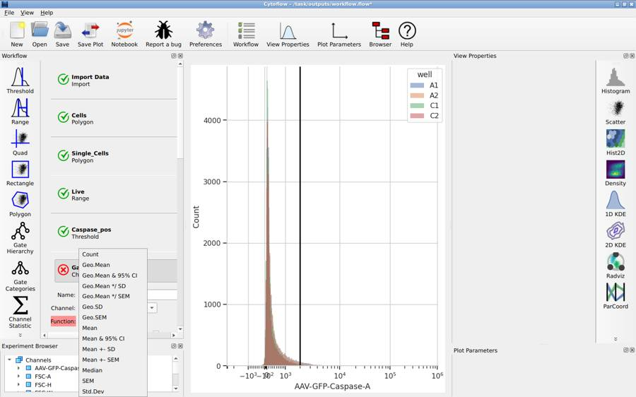
text(await tools.exec_command({cmd:"cu click 209 577\ncu scroll 321 680 down 8\ncu screenshot /tmp/screen.png","max_output_tokens":1000}));
image((await tools.view_image({path:"/tmp/screen.png"})).image_url);
Script completed Wall time 1.0 seconds Output:
{"chunk_id":"b68a33","wall_time_seconds":0.821486084,"exit_code":0,"original_token_count":4,"output":"/tmp/screen.png\n"}text(await tools.exec_command({cmd:"cu click 185 257\ncu click 185 286\ncu click 185 313\ncu click 185 341\ncu click 353 369\nsleep 3\ncu scroll 1394 685 down 6\ncu screenshot /tmp/screen.png","max_output_tokens":1000}));
image((await tools.view_image({path:"/tmp/screen.png"})).image_url);
Script completed Wall time 4.2 seconds Output:
{"chunk_id":"8f20f2","wall_time_seconds":4.046442991,"exit_code":0,"original_token_count":4,"output":"/tmp/screen.png\n"}text(await tools.exec_command({cmd:"cu click 1395 769\ncu click 1395 769\ncu click 1395 769\ncu click 1395 769\ncu screenshot /tmp/screen.png","max_output_tokens":1000}));
image((await tools.view_image({path:"/tmp/screen.png"})).image_url);
Script completed Wall time 0.5 seconds Output:
{"chunk_id":"8f97ac","wall_time_seconds":0.329260465,"exit_code":0,"original_token_count":4,"output":"/tmp/screen.png\n"}text(await tools.exec_command({cmd:"cu click 1390 770\ncu screenshot /tmp/screen.png","max_output_tokens":1000}));
image((await tools.view_image({path:"/tmp/screen.png"})).image_url);
Script completed Wall time 0.2 seconds Output:
{"chunk_id":"04b922","wall_time_seconds":0.014626462,"exit_code":0,"original_token_count":4,"output":"/tmp/screen.png\n"}text(await tools.exec_command({cmd:"cu move 1394 768\nsleep 2\ncu screenshot /tmp/screen.png","max_output_tokens":1000}));
image((await tools.view_image({path:"/tmp/screen.png"})).image_url);
Script completed Wall time 2.1 seconds Output:
{"chunk_id":"5a6aff","wall_time_seconds":1.915644616,"exit_code":0,"original_token_count":4,"output":"/tmp/screen.png\n"}text(await tools.exec_command({cmd:"cu click 1341 664\nsleep 1\ncu screenshot /tmp/screen.png","max_output_tokens":1000}));
image((await tools.view_image({path:"/tmp/screen.png"})).image_url);
Script completed Wall time 1.2 seconds Output:
{"chunk_id":"7a1b10","wall_time_seconds":1.017059418,"exit_code":0,"original_token_count":4,"output":"/tmp/screen.png\n"}text(await tools.exec_command({cmd:"cu click 1191 181\ncu screenshot /tmp/screen.png","max_output_tokens":1000}));
image((await tools.view_image({path:"/tmp/screen.png"})).image_url);
Script completed Wall time 0.2 seconds Output:
{"chunk_id":"cf522b","wall_time_seconds":0.013964882,"exit_code":0,"original_token_count":4,"output":"/tmp/screen.png\n"}text(await tools.exec_command({cmd:"cu click 1146 205\nsleep 2\ncu screenshot /tmp/screen.png","max_output_tokens":1000}));
image((await tools.view_image({path:"/tmp/screen.png"})).image_url);
Script completed Wall time 2.2 seconds Output:
{"chunk_id":"a46dbf","wall_time_seconds":2.01650418,"exit_code":0,"original_token_count":4,"output":"/tmp/screen.png\n"}text(await tools.exec_command({cmd:"cu click 1155 211\nsleep 1\ncu screenshot /tmp/screen.png","max_output_tokens":1000}));
image((await tools.view_image({path:"/tmp/screen.png"})).image_url);
Script completed Wall time 1.2 seconds Output:
{"chunk_id":"a7d7be","wall_time_seconds":1.021618611,"exit_code":0,"original_token_count":4,"output":"/tmp/screen.png\n"}text(await tools.exec_command({cmd:"cu paste /task/outputs/gate_counts_export.csv\ncu click 979 567\nsleep 1\ncu key ctrl+s","max_output_tokens":1000}));
text(await tools.exec_command({cmd:"head -8 /task/outputs/gate_counts_export.csv && wc -l /task/outputs/gate_counts_export.csv","max_output_tokens":2000}));
Script completed
Wall time 2.5 seconds
Output:
{"chunk_id":"32488d","wall_time_seconds":2.317313621,"exit_code":0,"original_token_count":0,"output":""}
{"chunk_id":"a41a86","wall_time_seconds":0.00000344,"exit_code":0,"original_token_count":53,"output":"Caspase_pos,Cells,Live,Single_Cells,well,FSC-A\n0,0,0,0,A10,956.0\n0,0,0,0,A11,790.0\n0,0,0,0,A3,661.0\n0,0,0,0,A5,921.0\n0,0,0,0,A7,439.0\n0,0,0,0,A8,377.0\n0,0,0,0,A9,516.0\n459 /task/outputs/gate_counts_export.csv\n"}text(await tools.exec_command({cmd:"python - <<'PY'\nimport pandas as pd\nfrom pathlib import Path\np=Path('/task/outputs')\nd=pd.read_csv(p/'gate_counts_export.csv'); layout=pd.read_csv('/task/inputs/plate_layout.csv'); rows=[]; summary=[]\nfor r in layout.itertuples():\n x=d[d.well==r.well]; total=int(x['FSC-A'].sum()); par=total; parent='all_events'; rec={'well':r.well,'total':total}\n for g in ['Cells','Single_Cells','Live','Caspase_pos']:\n x=x[x[g]==1]; n=int(x['FSC-A'].sum()); rows.append([r.file,r.well,g,n,parent,100*n/par if par else 0.0]);rec[g]=n; parent=g;par=n\n summary.append(rec)\npd.DataFrame(rows,columns=['file','well','population','count','parent_population','pct_of_parent']).to_csv(p/'counts.csv',index=False,float_format='%.6f')\ns=pd.DataFrame(summary);s['cells_pct']=s.Cells/s.total*100;s['live_pct']=s.Live/s.Single_Cells*100;s['casp_pct']=s.Caspase_pos/s.Live*100\ns.to_csv(p/'qc_counts_summary.csv',index=False)\nprint(s.round(2).to_string(index=False)); print('total:',s.total.sum())\nPY","max_output_tokens":5000}));
Script completed
Wall time 0.0 seconds
Output:
{"chunk_id":"e8918e","wall_time_seconds":0.00000433,"exit_code":127,"original_token_count":12,"output":"/bin/bash: line 1: python: command not found\n"}text(await tools.exec_command({cmd:"python3 - <<'PY'\nimport pandas as pd\nfrom pathlib import Path\np=Path('/task/outputs')\nd=pd.read_csv(p/'gate_counts_export.csv'); layout=pd.read_csv('/task/inputs/plate_layout.csv'); rows=[]; summary=[]\nfor r in layout.itertuples():\n x=d[d.well==r.well]; total=int(x['FSC-A'].sum()); par=total; parent='all_events'; rec={'well':r.well,'total':total}\n for g in ['Cells','Single_Cells','Live','Caspase_pos']:\n x=x[x[g]==1]; n=int(x['FSC-A'].sum()); rows.append([r.file,r.well,g,n,parent,100*n/par if par else 0.0]);rec[g]=n; parent=g;par=n\n summary.append(rec)\npd.DataFrame(rows,columns=['file','well','population','count','parent_population','pct_of_parent']).to_csv(p/'counts.csv',index=False,float_format='%.6f')\ns=pd.DataFrame(summary);s['cells_pct']=s.Cells/s.total*100;s['live_pct']=s.Live/s.Single_Cells*100;s['casp_pct']=s.Caspase_pos/s.Live*100\ns.to_csv(p/'qc_counts_summary.csv',index=False)\nprint(s.round(2).to_string(index=False)); print('total:',s.total.sum())\nPY","max_output_tokens":5000}));
Script completed
Wall time 0.5 seconds
Output:
{"chunk_id":"7d7e95","wall_time_seconds":0.296505647,"exit_code":0,"original_token_count":647,"output":"well total Cells Single_Cells Live Caspase_pos cells_pct live_pct casp_pct\n A1 90651 36289 34198 34197 1172 40.03 100.00 3.43\n A2 81008 32402 30380 30380 967 40.00 100.00 3.18\n A3 95933 38802 36685 32929 9942 40.45 89.76 30.19\n A5 73753 28379 26643 18884 5849 38.48 70.88 30.97\n A7 64975 25483 24059 20894 8541 39.22 86.84 40.88\n A8 60216 23085 22091 18582 6697 38.34 84.12 36.04\n A9 80278 33908 32441 26903 9111 42.24 82.93 33.87\n A10 64936 27106 25578 16415 4623 41.74 64.18 28.16\n A11 68296 26845 25407 18067 5525 39.31 71.11 30.58\n B1 58310 22722 21286 11309 3550 38.97 53.13 31.39\n B2 51930 19895 18738 9654 2357 38.31 51.52 24.41\n B3 13995 6383 6041 1178 397 45.61 19.50 33.70\n B4 58782 23375 22081 8678 2427 39.77 39.30 27.97\n B5 33754 12940 11850 265 150 38.34 2.24 56.60\n B6 8004 3705 3489 196 111 46.29 5.62 56.63\n C1 95817 34000 32344 32343 281 35.48 100.00 0.87\n C2 80166 29406 28025 28025 276 36.68 100.00 0.98\n C3 68270 23206 22109 19317 4836 33.99 87.37 25.03\n C5 88646 32271 30686 27559 7823 36.40 89.81 28.39\n C7 119052 39371 36585 33579 17148 33.07 91.78 51.07\n C8 52267 16719 15977 13489 4382 31.99 84.43 32.49\n C9 92282 31503 29818 26572 8891 34.14 89.11 33.46\n C10 88797 31346 29495 20008 5464 35.30 67.84 27.31\n C11 63651 23243 21916 12684 3872 36.52 57.88 30.53\n D1 97824 36122 33637 15022 4347 36.93 44.66 28.94\n D2 73937 29941 28236 14324 4286 40.50 50.73 29.92\n D3 77334 29364 26726 11146 3325 37.97 41.70 29.83\n D4 46763 18753 16623 1398 466 40.10 8.41 33.33\n D5 18412 7662 7080 109 53 41.61 1.54 48.62\n D6 46753 16658 15439 519 330 35.63 3.36 63.58\ntotal: 2014792\n"}text(await tools.exec_command({cmd:"cu scroll 298 282 up 30\ncu screenshot /tmp/screen.png","max_output_tokens":1000}));
image((await tools.view_image({path:"/tmp/screen.png"})).image_url);
Script completed Wall time 3.1 seconds Output:
{"chunk_id":"d43b0d","wall_time_seconds":2.919066351,"exit_code":0,"original_token_count":4,"output":"/tmp/screen.png\n"}text(await tools.exec_command({cmd:"cu click 236 176\ncu scroll 319 270 up 20\ncu screenshot /tmp/screen.png","max_output_tokens":1000}));
image((await tools.view_image({path:"/tmp/screen.png"})).image_url);
Script completed Wall time 2.2 seconds Output:
{"chunk_id":"d04e79","wall_time_seconds":2.019401843,"exit_code":0,"original_token_count":4,"output":"/tmp/screen.png\n"}text(await tools.exec_command({cmd:"cu click 233 528\ncu screenshot /tmp/screen.png","max_output_tokens":1000}));
image((await tools.view_image({path:"/tmp/screen.png"})).image_url);
Script completed Wall time 0.2 seconds Output:
{"chunk_id":"fb8779","wall_time_seconds":0.011131979,"exit_code":0,"original_token_count":4,"output":"/tmp/screen.png\n"}text(await tools.exec_command({cmd:"sleep 1\ncu screenshot /tmp/screen.png","max_output_tokens":1000}));
image((await tools.view_image({path:"/tmp/screen.png"})).image_url);
Script completed Wall time 1.1 seconds Output:
{"chunk_id":"c7533f","wall_time_seconds":0.914049732,"exit_code":0,"original_token_count":4,"output":"/tmp/screen.png\n"}text(await tools.exec_command({cmd:"cu click 269 643\ncu key ctrl+a\ncu type 5000\ncu key Tab\nsleep 3\ncu click 233 704\nsleep 2\ncu click 1149 211\nsleep 1\ncu screenshot /tmp/screen.png","max_output_tokens":1000}));
image((await tools.view_image({path:"/tmp/screen.png"})).image_url);
Script completed Wall time 6.6 seconds Output:
{"chunk_id":"e5b90a","wall_time_seconds":6.379384314,"exit_code":0,"original_token_count":4,"output":"/tmp/screen.png\n"}text(await tools.exec_command({cmd:"cu click 917 484\ncu click 1151 211\nsleep 1\ncu paste /task/outputs/gate_counts_export.csv\ncu screenshot /tmp/screen.png","max_output_tokens":1000}));
image((await tools.view_image({path:"/tmp/screen.png"})).image_url);
Script completed Wall time 2.6 seconds Output:
{"chunk_id":"4bc6a5","wall_time_seconds":2.458895279,"exit_code":0,"original_token_count":4,"output":"/tmp/screen.png\n"}text(await tools.exec_command({cmd:"cu click 978 569\nsleep 1\ncu screenshot /tmp/screen.png","max_output_tokens":1000}));
image((await tools.view_image({path:"/tmp/screen.png"})).image_url);
Script completed Wall time 1.2 seconds Output:
{"chunk_id":"5885cc","wall_time_seconds":1.020950331,"exit_code":0,"original_token_count":4,"output":"/tmp/screen.png\n"}text(await tools.exec_command({cmd:"cu click 978 569\nsleep 1\ncu screenshot /tmp/screen.png","max_output_tokens":1000}));
image((await tools.view_image({path:"/tmp/screen.png"})).image_url);
Script completed Wall time 1.2 seconds Output:
{"chunk_id":"10f993","wall_time_seconds":1.021172991,"exit_code":0,"original_token_count":4,"output":"/tmp/screen.png\n"}text(await tools.exec_command({cmd:"cu click 722 409\ncu key ctrl+s","max_output_tokens":1000}));
text(await tools.exec_command({cmd:"python3 - <<'PY'\nimport pandas as pd\nx=pd.read_csv('/task/outputs/gate_counts_export.csv');x=x[(x.Cells==1)&(x.Single_Cells==1)&(x.Live==1)]\nfor w in ['A1','A2','C1','C2']:\n y=x[x.well==w]; print(w,int(y[y.Caspase_pos==1]['FSC-A'].sum()), int(y['FSC-A'].sum()),100*y[y.Caspase_pos==1]['FSC-A'].sum()/y['FSC-A'].sum())\nPY","max_output_tokens":1000}));
Script completed
Wall time 0.4 seconds
Output:
{"chunk_id":"cca541","wall_time_seconds":0.00000294,"exit_code":0,"original_token_count":0,"output":""}
{"chunk_id":"15fec4","wall_time_seconds":0.086449122,"exit_code":0,"original_token_count":32,"output":"A1 89 34197 0.26025674766792406\nA2 56 30380 0.18433179723502305\nC1 9 32343 0.027826732214080326\nC2 8 28025 0.028545941123996433\n"}text(await tools.exec_command({cmd:"cu click 46 760\ncu move 46 760\nsleep 2\ncu screenshot /tmp/screen.png","max_output_tokens":1000}));
image((await tools.view_image({path:"/tmp/screen.png"})).image_url);
Script completed Wall time 2.2 seconds Output:
{"chunk_id":"42bcf8","wall_time_seconds":2.019967773,"exit_code":0,"original_token_count":4,"output":"/tmp/screen.png\n"}text(await tools.exec_command({cmd:"cu click 131 571\nsleep 1\ncu scroll 321 678 down 12\ncu screenshot /tmp/screen.png","max_output_tokens":1000}));
image((await tools.view_image({path:"/tmp/screen.png"})).image_url);
Script completed Wall time 2.4 seconds Output:
{"chunk_id":"b0d4e4","wall_time_seconds":2.227748546,"exit_code":0,"original_token_count":4,"output":"/tmp/screen.png\n"}text(await tools.exec_command({cmd:"cu move 602 600\nsleep 1\ncu scroll 375 661 down 8\ncu screenshot /tmp/screen.png","max_output_tokens":1000}));
image((await tools.view_image({path:"/tmp/screen.png"})).image_url);
Script completed Wall time 1.9 seconds Output:
{"chunk_id":"5f481a","wall_time_seconds":1.7212954539999998,"exit_code":0,"original_token_count":4,"output":"/tmp/screen.png\n"}text(await tools.exec_command({cmd:"cu click 263 624\ncu key ctrl+a\ncu type Time_bin\ncu click 351 654\ncu screenshot /tmp/screen.png","max_output_tokens":1000}));
image((await tools.view_image({path:"/tmp/screen.png"})).image_url);
Script completed Wall time 0.5 seconds Output:
{"chunk_id":"73514d","wall_time_seconds":0.356562597,"exit_code":0,"original_token_count":4,"output":"/tmp/screen.png\n"}text(await tools.exec_command({cmd:"cu click 215 846\ncu click 263 715\ncu key ctrl+a\ncu type 10\ncu key Tab\nsleep 3\ncu screenshot /tmp/screen.png","max_output_tokens":1000}));
image((await tools.view_image({path:"/tmp/screen.png"})).image_url);
Script completed Wall time 3.4 seconds Output:
{"chunk_id":"edeac3","wall_time_seconds":3.224749106,"exit_code":0,"original_token_count":4,"output":"/tmp/screen.png\n"}text(await tools.exec_command({cmd:"cu click 256 715\ncu key ctrl+a\ncu type 1000\ncu key Tab\nsleep 3\ncu click 46 691\nsleep 2\ncu move 570 600\ncu scroll 377 686 down 10\ncu screenshot /tmp/screen.png","max_output_tokens":1000}));
image((await tools.view_image({path:"/tmp/screen.png"})).image_url);
Script completed Wall time 6.5 seconds Output:
{"chunk_id":"df2862","wall_time_seconds":6.282818754,"exit_code":0,"original_token_count":4,"output":"/tmp/screen.png\n"}text(await tools.exec_command({cmd:"cu scroll 375 300 up 5\ncu screenshot /tmp/screen.png","max_output_tokens":1000}));
image((await tools.view_image({path:"/tmp/screen.png"})).image_url);
Script completed Wall time 0.6 seconds Output:
{"chunk_id":"75d0ce","wall_time_seconds":0.414988486,"exit_code":0,"original_token_count":4,"output":"/tmp/screen.png\n"}text(await tools.exec_command({cmd:"cu click 259 420\ncu key ctrl+a\ncu type Time_counts\ncu click 343 450\ncu screenshot /tmp/screen.png","max_output_tokens":1000}));
image((await tools.view_image({path:"/tmp/screen.png"})).image_url);
Script completed Wall time 0.6 seconds Output:
{"chunk_id":"93526c","wall_time_seconds":0.430702588,"exit_code":0,"original_token_count":4,"output":"/tmp/screen.png\n"}text(await tools.exec_command({cmd:"cu click 206 476\ncu click 320 481\ncu screenshot /tmp/screen.png","max_output_tokens":1000}));
image((await tools.view_image({path:"/tmp/screen.png"})).image_url);
Script completed Wall time 0.3 seconds Output:
{"chunk_id":"0570bc","wall_time_seconds":0.11937664,"exit_code":0,"original_token_count":4,"output":"/tmp/screen.png\n"}text(await tools.exec_command({cmd:"cu click 207 481\ncu click 185 621\ncu click 353 649\nsleep 2\ncu click 1393 768\ncu move 1393 768\nsleep 1\ncu screenshot /tmp/screen.png","max_output_tokens":1000}));
image((await tools.view_image({path:"/tmp/screen.png"})).image_url);
Script completed Wall time 3.5 seconds Output:
{"chunk_id":"e80775","wall_time_seconds":3.338261771,"exit_code":0,"original_token_count":4,"output":"/tmp/screen.png\n"}text(await tools.exec_command({cmd:"cu click 1340 662\ncu move 800 550\nsleep 1\ncu click 1190 181\ncu screenshot /tmp/screen.png","max_output_tokens":1000}));
image((await tools.view_image({path:"/tmp/screen.png"})).image_url);
Script completed Wall time 1.3 seconds Output:
{"chunk_id":"1ac34f","wall_time_seconds":1.122603345,"exit_code":0,"original_token_count":4,"output":"/tmp/screen.png\n"}text(await tools.exec_command({cmd:"cu click 1145 230\nsleep 1\ncu click 1150 211\nsleep 1\ncu paste /task/outputs/time_counts_export.csv\ncu key Tab\ncu click 979 568\nsleep 1\ncu screenshot /tmp/screen.png","max_output_tokens":1000}));
image((await tools.view_image({path:"/tmp/screen.png"})).image_url);
text(await tools.exec_command({cmd:"head -5 /task/outputs/time_counts_export.csv","max_output_tokens":1000}));
Script completed Wall time 4.8 seconds Output:
{"chunk_id":"2c675e","wall_time_seconds":4.575075332,"exit_code":0,"original_token_count":4,"output":"/tmp/screen.png\n"}{"chunk_id":"30de69","wall_time_seconds":0.00000336,"exit_code":0,"original_token_count":18,"output":"Time_bin,well,FSC-A\n0,A1,1456.0\n0,A10,1312.0\n0,A11,1217.0\n0,A2,1434.0\n"}text(await tools.exec_command({cmd:"cat > /task/outputs/tabulate.py <<'PY'\nimport pandas as pd\nfrom pathlib import Path\np=Path('/task/outputs')\nd=pd.read_csv(p/'gate_counts_export.csv'); layout=pd.read_csv('/task/inputs/plate_layout.csv'); rows=[]; summary=[]\nfor r in layout.itertuples():\n x=d[d.well==r.well]; total=int(x['FSC-A'].sum()); par=total; parent='all_events'; rec={'well':r.well,'total':total}\n for g in ['Cells','Single_Cells','Live','Caspase_pos']:\n x=x[x[g]==1]; n=int(x['FSC-A'].sum()); rows.append([r.file,r.well,g,n,parent,100*n/par if par else 0.0]);rec[g]=n; parent=g;par=n\n summary.append(rec)\npd.DataFrame(rows,columns=['file','well','population','count','parent_population','pct_of_parent']).to_csv(p/'counts.csv',index=False,float_format='%.6f')\ns=pd.DataFrame(summary);s['cells_pct']=s.Cells/s.total*100;s['live_pct']=s.Live/s.Single_Cells*100;s['casp_pct']=s.Caspase_pos/s.Live*100\ns.to_csv(p/'qc_counts_summary.csv',index=False)\nprint(s.round(2).to_string(index=False))\nPY\npython3 /task/outputs/tabulate.py\npython3 - <<'PY'\nimport pandas as pd,numpy as np,matplotlib\nmatplotlib.use('Agg')\nimport matplotlib.pyplot as plt\nx=pd.read_csv('/task/outputs/time_counts_export.csv');layout=pd.read_csv('/task/inputs/plate_layout.csv');z=x.pivot(index='Time_bin',columns='well',values='FSC-A').fillna(0).reindex(columns=layout.well)\nfig,axes=plt.subplots(6,5,figsize=(16,15),sharex=True)\nfor ax,w in zip(axes.flat,z.columns):\n v=z[w];ax.step(z.index,v,where='post');ax.set_title(w);ax.set_ylim(bottom=0);ax.grid(alpha=.2)\nfig.supxlabel('Instrument Time units (bin width 1000)');fig.supylabel('Events per bin');fig.tight_layout();fig.savefig('/task/outputs/qc_time_traces.png',dpi=130)\nfor w in z:\n v=z[w]; nz=v[v>0]; med=v.iloc[2:40].median();print(w,'bins=',len(nz),'last=',nz.index.max(),'median=',med,'min_internal=',v.loc[2000:40000].min(),'tail=',list(v.iloc[-8:].astype(int)))\nPY","max_output_tokens":6000}));
image((await tools.view_image({path:"/task/outputs/qc_time_traces.png"})).image_url);
Script completed Wall time 2.4 seconds Output:
{"chunk_id":"536025","wall_time_seconds":2.258654391,"exit_code":0,"original_token_count":1465,"output":"well total Cells Single_Cells Live Caspase_pos cells_pct live_pct casp_pct\n A1 90651 36289 34198 34197 89 40.03 100.00 0.26\n A2 81008 32402 30380 30380 56 40.00 100.00 0.18\n A3 95933 38802 36685 32929 2801 40.45 89.76 8.51\n A5 73753 28379 26643 18884 1687 38.48 70.88 8.93\n A7 64975 25483 24059 20894 2647 39.22 86.84 12.67\n A8 60216 23085 22091 18582 2621 38.34 84.12 14.11\n A9 80278 33908 32441 26903 4581 42.24 82.93 17.03\n A10 64936 27106 25578 16415 1421 41.74 64.18 8.66\n A11 68296 26845 25407 18067 1942 39.31 71.11 10.75\n B1 58310 22722 21286 11309 1152 38.97 53.13 10.19\n B2 51930 19895 18738 9654 590 38.31 51.52 6.11\n B3 13995 6383 6041 1178 156 45.61 19.50 13.24\n B4 58782 23375 22081 8678 814 39.77 39.30 9.38\n B5 33754 12940 11850 265 28 38.34 2.24 10.57\n B6 8004 3705 3489 196 19 46.29 5.62 9.69\n C1 95817 34000 32344 32343 9 35.48 100.00 0.03\n C2 80166 29406 28025 28025 8 36.68 100.00 0.03\n C3 68270 23206 22109 19317 1691 33.99 87.37 8.75\n C5 88646 32271 30686 27559 3122 36.40 89.81 11.33\n C7 119052 39371 36585 33579 11175 33.07 91.78 33.28\n C8 52267 16719 15977 13489 1614 31.99 84.43 11.97\n C9 92282 31503 29818 26572 4975 34.14 89.11 18.72\n C10 88797 31346 29495 20008 2305 35.30 67.84 11.52\n C11 63651 23243 21916 12684 1449 36.52 57.88 11.42\n D1 97824 36122 33637 15022 2292 36.93 44.66 15.26\n D2 73937 29941 28236 14324 2586 40.50 50.73 18.05\n D3 77334 29364 26726 11146 2040 37.97 41.70 18.30\n D4 46763 18753 16623 1398 150 40.10 8.41 10.73\n D5 18412 7662 7080 109 7 41.61 1.54 6.42\n D6 46753 16658 15439 519 53 35.63 3.36 10.21\nA1 bins= 48 last= 47000 median= 2003.5 min_internal= 1340.0 tail= [1340, 1471, 1544, 1530, 1361, 1531, 1660, 645]\nA2 bins= 47 last= 46000 median= 1748.5 min_internal= 1559.0 tail= [1578, 1467, 1362, 1347, 1328, 1286, 279, 0]\nA3 bins= 48 last= 47000 median= 2063.5 min_internal= 1712.0 tail= [1712, 1639, 1579, 1516, 1565, 1449, 1475, 143]\nA5 bins= 47 last= 46000 median= 1643.0 min_internal= 1232.0 tail= [1232, 1129, 1238, 1264, 1134, 1217, 377, 0]\nA7 bins= 47 last= 46000 median= 1442.5 min_internal= 1027.0 tail= [1027, 1027, 1088, 1116, 1056, 1039, 294, 0]\nA8 bins= 48 last= 47000 median= 1302.5 min_internal= 1026.0 tail= [1026, 920, 863, 917, 1041, 859, 667, 101]\nA9 bins= 47 last= 46000 median= 1731.0 min_internal= 1511.0 tail= [1528, 1430, 1397, 1365, 1310, 1105, 511, 0]\nA10 bins= 48 last= 47000 median= 1427.5 min_internal= 1091.0 tail= [1091, 1018, 939, 967, 1012, 1117, 841, 157]\nA11 bins= 47 last= 46000 median= 1533.5 min_internal= 1212.0 tail= [1212, 1168, 1139, 1103, 1076, 1014, 384, 0]\nB1 bins= 47 last= 46000 median= 1297.5 min_internal= 506.0 tail= [1009, 1067, 1009, 953, 940, 1042, 417, 0]\nB2 bins= 48 last= 47000 median= 1126.0 min_internal= 955.0 tail= [1015, 947, 976, 885, 949, 869, 927, 131]\nB3 bins= 48 last= 47000 median= 316.5 min_internal= 229.0 tail= [242, 232, 225, 214, 248, 280, 242, 34]\nB4 bins= 47 last= 46000 median= 1312.0 min_internal= 843.0 tail= [986, 1140, 1074, 1044, 980, 1184, 171, 0]\nB5 bins= 47 last= 46000 median= 753.0 min_internal= 482.0 tail= [593, 560, 610, 582, 490, 543, 198, 0]\nB6 bins= 48 last= 47000 median= 174.0 min_internal= 121.0 tail= [164, 138, 115, 163, 152, 159, 97, 16]\nC1 bins= 47 last= 46000 median= 2093.5 min_internal= 1333.0 tail= [1674, 1798, 1926, 1820, 1656, 1569, 506, 0]\nC2 bins= 48 last= 47000 median= 1724.5 min_internal= 1193.0 tail= [1651, 1509, 1408, 1374, 1636, 1548, 894, 139]\nC3 bins= 47 last= 46000 median= 1520.0 min_internal= 1171.0 tail= [1171, 1123, 1052, 1102, 1061, 1213, 255, 0]\nC5 bins= 48 last= 47000 median= 1966.0 min_internal= 1537.0 tail= [1537, 1483, 1472, 1513, 1688, 1333, 636, 85]\nC7 bins= 48 last= 47000 median= 2692.0 min_internal= 1801.0 tail= [1881, 2028, 1813, 1910, 2080, 2051, 1202, 223]\nC8 bins= 47 last= 46000 median= 1171.5 min_internal= 875.0 tail= [875, 970, 812, 725, 698, 758, 216, 0]\nC9 bins= 48 last= 47000 median= 2062.5 min_internal= 1042.0 tail= [1418, 1386, 1424, 1434, 1707, 1131, 528, 95]\nC10 bins= 48 last= 47000 median= 1952.0 min_internal= 499.0 tail= [1653, 1557, 1477, 1450, 1674, 1447, 853, 69]\nC11 bins= 47 last= 46000 median= 1369.5 min_internal= 469.0 tail= [1294, 1232, 1364, 1597, 1466, 1025, 211, 0]\nD1 bins= 48 last= 47000 median= 2109.5 min_internal= 1001.0 tail= [1888, 1766, 1755, 2052, 1970, 1790, 894, 158]\nD2 bins= 48 last= 47000 median= 1656.5 min_internal= 1325.0 tail= [1392, 1377, 1264, 1373, 1428, 1019, 356, 41]\nD3 bins= 47 last= 46000 median= 1675.5 min_internal= 249.0 tail= [1467, 1195, 1162, 1354, 1377, 1353, 608, 0]\nD4 bins= 48 last= 47000 median= 1046.5 min_internal= 182.0 tail= [923, 843, 804, 965, 920, 508, 198, 16]\nD5 bins= 47 last= 46000 median= 413.0 min_internal= 224.0 tail= [350, 341, 346, 327, 295, 352, 150, 0]\nD6 bins= 47 last= 46000 median= 1074.0 min_internal= 287.0 tail= [910, 980, 884,
… [27 more characters not shown]text(await tools.exec_command({cmd:"cu click 238 368\nsleep 1\ncu click 238 276\nsleep 1\ncu screenshot /tmp/screen.png","max_output_tokens":1000}));
image((await tools.view_image({path:"/tmp/screen.png"})).image_url);
Script completed Wall time 2.3 seconds Output:
{"chunk_id":"2b15d1","wall_time_seconds":2.12510091,"exit_code":0,"original_token_count":4,"output":"/tmp/screen.png\n"}text(await tools.exec_command({cmd:"cu click 233 715\nsleep 1\ncu scroll 374 674 down 6\ncu screenshot /tmp/screen.png","max_output_tokens":1000}));
image((await tools.view_image({path:"/tmp/screen.png"})).image_url);
Script completed Wall time 1.8 seconds Output:
{"chunk_id":"aeaa51","wall_time_seconds":1.626438955,"exit_code":0,"original_token_count":4,"output":"/tmp/screen.png\n"}text(await tools.exec_command({cmd:"cu click 264 650\ncu key ctrl+a\ncu type 500\ncu key Tab\nsleep 3\ncu click 230 712\nsleep 1\ncu scroll 374 675 down 5\ncu screenshot /tmp/screen.png","max_output_tokens":1000}));
image((await tools.view_image({path:"/tmp/screen.png"})).image_url);
Script completed Wall time 4.9 seconds Output:
{"chunk_id":"28a86a","wall_time_seconds":4.752930169,"exit_code":0,"original_token_count":4,"output":"/tmp/screen.png\n"}text(await tools.exec_command({cmd:"cu click 185 423\ncu click 185 451\ncu click 185 479\ncu click 185 507\nsleep 5\ncu click 1154 211\nsleep 1\ncu paste /task/outputs/time_gate_counts_export.csv\ncu key Tab\ncu click 979 568\nsleep 1\ncu key ctrl+s\ncu screenshot /tmp/screen.png","max_output_tokens":1000}));
image((await tools.view_image({path:"/tmp/screen.png"})).image_url);
text(await tools.exec_command({cmd:"head -5 /task/outputs/time_gate_counts_export.csv && wc -l /task/outputs/time_gate_counts_export.csv","max_output_tokens":1000}));
Script completed Wall time 9.1 seconds Output:
{"chunk_id":"5010e3","wall_time_seconds":8.920341681,"exit_code":0,"original_token_count":4,"output":"/tmp/screen.png\n"}{"chunk_id":"fd09de","wall_time_seconds":0.0000033,"exit_code":0,"original_token_count":33,"output":"Time_bin,well,Caspase_pos,FSC-A\n0,A1,0,644.0\n0,A1,1,49.0\n0,A10,0,483.0\n0,A10,1,154.0\n5635 /task/outputs/time_gate_counts_export.csv\n"}text(await tools.exec_command({cmd:"sleep 10\ncu screenshot /tmp/screen.png","max_output_tokens":1000}));
image((await tools.view_image({path:"/tmp/screen.png"})).image_url);
Script completed Wall time 10.1 seconds Output:
{"chunk_id":"86c112","wall_time_seconds":9.910842646999999,"exit_code":0,"original_token_count":4,"output":"/tmp/screen.png\n"}text(await tools.exec_command({cmd:"cu click 1151 211\nsleep 1\ncu paste /task/outputs/time_gate_counts_export.csv\ncu key Tab\ncu click 979 568\nsleep 1\ncu screenshot /tmp/screen.png","max_output_tokens":1000}));
image((await tools.view_image({path:"/tmp/screen.png"})).image_url);
Script completed Wall time 3.7 seconds Output:
{"chunk_id":"e29e40","wall_time_seconds":3.475421526,"exit_code":0,"original_token_count":4,"output":"/tmp/screen.png\n"}text(await tools.exec_command({cmd:"cu click 740 408\ncu key ctrl+s","max_output_tokens":1000}));
text(await tools.exec_command({cmd:"head -3 /task/outputs/time_gate_counts_export.csv","max_output_tokens":1000}));
Script completed
Wall time 0.2 seconds
Output:
{"chunk_id":"58a78b","wall_time_seconds":0.00000311,"exit_code":0,"original_token_count":0,"output":""}
{"chunk_id":"1efb1d","wall_time_seconds":0.00000266,"exit_code":0,"original_token_count":15,"output":"Time_bin,well,Caspase_pos,FSC-A\n0,A1,0,644.0\n0,A1,1,49.0\n"}text(await tools.exec_command({cmd:"sleep 1\nhead -3 /task/outputs/time_gate_counts_export.csv\nwc -l /task/outputs/time_gate_counts_export.csv","max_output_tokens":1000}));
Script completed
Wall time 1.0 seconds
Output:
{"chunk_id":"f76a0a","wall_time_seconds":0.855372913,"exit_code":0,"original_token_count":36,"output":"Time_bin,well,Caspase_pos,Cells,Live,Single_Cells,FSC-A\n0,A1,0,0,1,0,172.0\n0,A1,0,0,1,1,117.0\n37504 /task/outputs/time_gate_counts_export.csv\n"}text(await tools.exec_command({cmd:"python3 - <<'PY'\nimport pandas as pd,numpy as np,matplotlib\nmatplotlib.use('Agg')\nimport matplotlib.pyplot as plt\nx=pd.read_csv('/task/outputs/time_gate_counts_export.csv'); s=pd.read_csv('/task/outputs/qc_counts_summary.csv');lay=pd.read_csv('/task/inputs/plate_layout.csv')\nz=x.groupby(['Time_bin','well'])['FSC-A'].sum().unstack(fill_value=0).reindex(columns=lay.well)\nassert (z.sum().reindex(s.well).values==s.total.values).all()\ng=x[(x.Cells==1)&(x.Single_Cells==1)&(x.Live==1)].groupby(['Time_bin','well'])['FSC-A'].sum().unstack(fill_value=0).reindex(index=z.index,columns=z.columns,fill_value=0)\nfig,axes=plt.subplots(6,5,figsize=(16,15),sharex=True)\nfor ax,w in zip(axes.flat,z.columns):\n v=z[w];ax.step(z.index,v,where='post',label='All events');ax.step(g.index,g[w],where='post',label='Live');ax.set_title(w);ax.set_ylim(bottom=0);ax.grid(alpha=.2)\nfig.supxlabel('Instrument Time units (bin width 500)');fig.supylabel('Events per bin');axes[0,0].legend(fontsize=7);fig.tight_layout();fig.savefig('/task/outputs/qc_time_traces_500.png',dpi=130)\nfor w in z:\n v=z[w];inter=v.loc[2000:44000]; low=inter.nsmallest(3); med=inter.median();print(w,'median=',med,'minima=',[(int(a),int(b),round(b/med,2)) for a,b in low.items()],'max=',inter.max(),'at=',inter.idxmax())\nPY","max_output_tokens":4000}));
image((await tools.view_image({path:"/task/outputs/qc_time_traces_500.png"})).image_url);
Script completed Wall time 1.7 seconds Output:
{"chunk_id":"5a0dff","wall_time_seconds":1.5015354109999999,"exit_code":0,"original_token_count":802,"output":"A1 median= 972.0 minima= [(40000, 621, 0.64), (44000, 650, 0.67), (40500, 719, 0.74)] max= 1334.0 at= 26000\nA2 median= 875.0 minima= [(43500, 650, 0.74), (42500, 664, 0.76), (30000, 670, 0.77)] max= 1416.0 at= 25000\nA3 median= 1027.0 minima= [(43000, 744, 0.72), (42000, 763, 0.74), (44000, 770, 0.75)] max= 1404.0 at= 27500\nA5 median= 812.0 minima= [(41500, 552, 0.68), (44000, 572, 0.7), (41000, 577, 0.71)] max= 1064.0 at= 25000\nA7 median= 714.0 minima= [(41500, 498, 0.7), (40000, 509, 0.71), (40500, 518, 0.73)] max= 921.0 at= 26500\nA8 median= 643.0 minima= [(42500, 407, 0.63), (41500, 436, 0.68), (42000, 456, 0.71)] max= 971.0 at= 23500\nA9 median= 869.0 minima= [(44000, 665, 0.77), (43500, 673, 0.77), (43000, 692, 0.8)] max= 1096.0 at= 24500\nA10 median= 714.0 minima= [(44000, 445, 0.62), (43500, 453, 0.63), (42000, 467, 0.65)] max= 938.0 at= 25500\nA11 median= 760.0 minima= [(25500, 474, 0.62), (43500, 528, 0.69), (44000, 532, 0.7)] max= 1235.0 at= 26500\nB1 median= 634.0 minima= [(28000, 85, 0.13), (27500, 164, 0.26), (27000, 342, 0.54)] max= 1491.0 at= 29000\nB2 median= 561.0 minima= [(43500, 391, 0.7), (41000, 434, 0.77), (38500, 436, 0.78)] max= 761.0 at= 26000\nB3 median= 155.0 minima= [(43000, 89, 0.57), (37000, 108, 0.7), (38500, 108, 0.7)] max= 192.0 at= 4000\nB4 median= 644.0 minima= [(31000, 274, 0.43), (27000, 413, 0.64), (27500, 430, 0.67)] max= 1206.0 at= 31500\nB5 median= 372.0 minima= [(25000, 119, 0.32), (27500, 198, 0.53), (44000, 243, 0.65)] max= 618.0 at= 28000\nB6 median= 87.0 minima= [(42500, 48, 0.55), (39000, 57, 0.66), (39500, 64, 0.74)] max= 111.0 at= 23500\nC1 median= 1040.0 minima= [(29000, 47, 0.05), (28500, 640, 0.62), (27500, 815, 0.78)] max= 2354.0 at= 30000\nC2 median= 844.0 minima= [(27500, 457, 0.54), (43000, 687, 0.81), (43500, 687, 0.81)] max= 1753.0 at= 28000\nC3 median= 739.0 minima= [(43500, 518, 0.7), (42000, 525, 0.71), (42500, 527, 0.71)] max= 1018.0 at= 24500\nC5 median= 969.0 minima= [(43000, 725, 0.75), (40500, 730, 0.75), (42000, 735, 0.76)] max= 1230.0 at= 11000\nC7 median= 1331.0 minima= [(23000, 502, 0.38), (39500, 812, 0.61), (41500, 815, 0.61)] max= 2410.0 at= 24000\nC8 median= 578.0 minima= [(44000, 347, 0.6), (43000, 349, 0.6), (42500, 361, 0.62)] max= 804.0 at= 26500\nC9 median= 1010.0 minima= [(11000, 45, 0.04), (10500, 412, 0.41), (10000, 630, 0.62)] max= 2288.0 at= 11500\nC10 median= 973.0 minima= [(26500, 53, 0.05), (29000, 94, 0.1), (11000, 361, 0.37)] max= 1989.0 at= 27500\nC11 median= 689.0 minima= [(21000, 19, 0.03), (36500, 128, 0.19), (22500, 151, 0.22)] max= 1514.0 at= 23000\nD1 median= 1058.0 minima= [(24500, 53, 0.05), (23000, 185, 0.17), (29000, 611, 0.58)] max= 2159.0 at= 25000\nD2 median= 807.0 minima= [(29000, 488, 0.6), (38500, 602, 0.75), (26500, 606, 0.75)] max= 1299.0 at= 29500\nD3 median= 837.0 minima= [(18000, 53, 0.06), (28500, 86, 0.1), (16500, 111, 0.13)] max= 2165.0 at= 19500\nD4 median= 495.0 minima= [(32500, 13, 0.03), (27500, 134, 0.27), (32000, 169, 0.34)] max= 1055.0 at= 30500\nD5 median= 196.0 minima= [(18000, 9, 0.05), (25500, 68, 0.35), (24000, 116, 0.59)] max= 475.0 at= 18500\nD6 median= 530.0 minima= [(33000, 10, 0.02), (32500, 91, 0.17), (23500, 153, 0.29)] max= 1135.0 at= 24500\n"}text(await tools.exec_command({cmd:"cu click 1395 242\nsleep 1\ncu screenshot /tmp/screen.png","max_output_tokens":1000}));
image((await tools.view_image({path:"/tmp/screen.png"})).image_url);
Script completed Wall time 1.2 seconds Output:
{"chunk_id":"c571b4","wall_time_seconds":1.018720949,"exit_code":0,"original_token_count":4,"output":"/tmp/screen.png\n"}text(await tools.exec_command({cmd:"cu click 1298 181\ncu screenshot /tmp/screen.png","max_output_tokens":1000}));
image((await tools.view_image({path:"/tmp/screen.png"})).image_url);
Script completed Wall time 0.2 seconds Output:
{"chunk_id":"4b2884","wall_time_seconds":0.016024463,"exit_code":0,"original_token_count":4,"output":"/tmp/screen.png\n"}text(await tools.exec_command({cmd:"cu click 1160 373\ncu click 1298 241\ncu click 1160 361\ncu click 1231 481\ncu screenshot /tmp/screen.png","max_output_tokens":1000}));
image((await tools.view_image({path:"/tmp/screen.png"})).image_url);
Script completed Wall time 0.5 seconds Output:
{"chunk_id":"450d23","wall_time_seconds":0.334541488,"exit_code":0,"original_token_count":4,"output":"/tmp/screen.png\n"}text(await tools.exec_command({cmd:"cu click 1156 457\ncu click 1298 241\ncu screenshot /tmp/screen.png","max_output_tokens":1000}));
image((await tools.view_image({path:"/tmp/screen.png"})).image_url);
Script completed Wall time 0.3 seconds Output:
{"chunk_id":"3e7ed3","wall_time_seconds":0.13168915,"exit_code":0,"original_token_count":4,"output":"/tmp/screen.png\n"}text(await tools.exec_command({cmd:"cu click 1162 145\ncu click 1221 826\ncu key ctrl+a\ncu type 0.08\ncu click 1221 856\ncu key ctrl+a\ncu type 1\ncu key Tab\ncu click 875 141\nsleep 3\ncu screenshot /tmp/screen.png","max_output_tokens":1000}));
image((await tools.view_image({path:"/tmp/screen.png"})).image_url);
Script completed Wall time 3.8 seconds Output:
{"chunk_id":"ce4f81","wall_time_seconds":3.576255059,"exit_code":0,"original_token_count":4,"output":"/tmp/screen.png\n"}text(await tools.exec_command({cmd:"cu key ctrl+s\ncu click 46 759\ncu move 46 759\nsleep 1\ncu click 131 570\ncu move 601 600\nsleep 1\ncu scroll 376 676 down 10\ncu screenshot /tmp/screen.png","max_output_tokens":1000}));
image((await tools.view_image({path:"/tmp/screen.png"})).image_url);
Script completed Wall time 3.4 seconds Output:
{"chunk_id":"b70f15","wall_time_seconds":3.19273912,"exit_code":0,"original_token_count":4,"output":"/tmp/screen.png\n"}text(await tools.exec_command({cmd:"cu click 46 759\ncu move 46 759\nsleep 2\ncu screenshot /tmp/screen.png","max_output_tokens":1000}));
image((await tools.view_image({path:"/tmp/screen.png"})).image_url);
Script completed Wall time 2.2 seconds Output:
{"chunk_id":"6f0934","wall_time_seconds":2.049777007,"exit_code":0,"original_token_count":4,"output":"/tmp/screen.png\n"}text(await tools.exec_command({cmd:"cu click 127 566\ncu move 604 600\nsleep 2\ncu scroll 376 676 down 10\ncu screenshot /tmp/screen.png","max_output_tokens":1000}));
image((await tools.view_image({path:"/tmp/screen.png"})).image_url);
Script completed Wall time 3.2 seconds Output:
{"chunk_id":"98a78d","wall_time_seconds":3.029177934,"exit_code":0,"original_token_count":4,"output":"/tmp/screen.png\n"}text(await tools.exec_command({cmd:"cu click 265 623\ncu key ctrl+a\ncu type Ceiling_bin\ncu click 350 654\ncu click 221 775\ncu click 264 715\ncu key ctrl+a\ncu type 1048574\ncu key Tab\nsleep 3\ncu screenshot /tmp/screen.png","max_output_tokens":1000}));
image((await tools.view_image({path:"/tmp/screen.png"})).image_url);
Script completed Wall time 4.1 seconds Output:
{"chunk_id":"941a5a","wall_time_seconds":3.8731661170000002,"exit_code":0,"original_token_count":4,"output":"/tmp/screen.png\n"}text(await tools.exec_command({cmd:"sleep 3\ncu click 46 690\nsleep 2\ncu scroll 376 675 down 6\ncu screenshot /tmp/screen.png","max_output_tokens":1000}));
image((await tools.view_image({path:"/tmp/screen.png"})).image_url);
Script completed Wall time 5.8 seconds Output:
{"chunk_id":"ae19ad","wall_time_seconds":5.622726134,"exit_code":0,"original_token_count":4,"output":"/tmp/screen.png\n"}text(await tools.exec_command({cmd:"cu click 264 358\ncu key ctrl+a\ncu type Ceiling_counts\ncu click 344 388\ncu click 208 412\ncu click 320 417\ncu screenshot /tmp/screen.png","max_output_tokens":1000}));
image((await tools.view_image({path:"/tmp/screen.png"})).image_url);
Script completed Wall time 0.9 seconds Output:
{"chunk_id":"9c00c4","wall_time_seconds":0.721909631,"exit_code":0,"original_token_count":4,"output":"/tmp/screen.png\n"}text(await tools.exec_command({cmd:"cu click 205 418\ncu click 185 476\ncu click 185 503\ncu click 185 531\ncu click 185 559\ncu click 353 588\nsleep 3\ncu click 238 216\nsleep 1\ncu screenshot /tmp/screen.png","max_output_tokens":1000}));
image((await tools.view_image({path:"/tmp/screen.png"})).image_url);
Script completed Wall time 4.8 seconds Output:
{"chunk_id":"11501a","wall_time_seconds":4.652963557,"exit_code":0,"original_token_count":4,"output":"/tmp/screen.png\n"}text(await tools.exec_command({cmd:"cu click 262 649\ncu key ctrl+a\ncu type 1048000\ncu key Tab\nsleep 5\ncu click 233 711\nsleep 2\ncu click 1393 769\ncu move 1393 769\nsleep 2\ncu screenshot /tmp/screen.png","max_output_tokens":1000}));
image((await tools.view_image({path:"/tmp/screen.png"})).image_url);
Script completed Wall time 9.6 seconds Output:
{"chunk_id":"003866","wall_time_seconds":9.452620445,"exit_code":0,"original_token_count":4,"output":"/tmp/screen.png\n"}text(await tools.exec_command({cmd:"cu click 1341 662\ncu move 800 550\nsleep 1\ncu click 1191 181\ncu screenshot /tmp/screen.png","max_output_tokens":1000}));
image((await tools.view_image({path:"/tmp/screen.png"})).image_url);
Script completed Wall time 1.3 seconds Output:
{"chunk_id":"8ae77b","wall_time_seconds":1.122822845,"exit_code":0,"original_token_count":4,"output":"/tmp/screen.png\n"}text(await tools.exec_command({cmd:"cu click 1147 181\nsleep 1\ncu click 1150 211\nsleep 1\ncu paste /task/outputs/qc_ssc_ceiling.csv\ncu key Tab\ncu click 979 568\nsleep 1\ncu screenshot /tmp/screen.png","max_output_tokens":1000}));
image((await tools.view_image({path:"/tmp/screen.png"})).image_url);
text(await tools.exec_command({cmd:"head -4 /task/outputs/qc_ssc_ceiling.csv","max_output_tokens":1000}));
Script completed Wall time 4.8 seconds Output:
{"chunk_id":"2e3ffe","wall_time_seconds":4.5744912410000005,"exit_code":0,"original_token_count":4,"output":"/tmp/screen.png\n"}{"chunk_id":"99f68e","wall_time_seconds":0.00000413,"exit_code":0,"original_token_count":31,"output":"Ceiling_bin,Cells,Live,Single_Cells,well,FSC-A\n-1.048e+06,0,0,0,A10,21.0\n-1.048e+06,0,0,0,A11,19.0\n-1.048e+06,0,0,0,A3,6.0\n"}text(await tools.exec_command({cmd:"python3 - <<'PY'\nimport pandas as pd\nx=pd.read_csv('/task/outputs/qc_ssc_ceiling.csv'); print(x.Ceiling_bin.unique());print(x.groupby('Ceiling_bin')['FSC-A'].sum())\nPY","max_output_tokens":1000}));
Script completed
Wall time 0.3 seconds
Output:
{"chunk_id":"2d5330","wall_time_seconds":0.095111219,"exit_code":0,"original_token_count":28,"output":"[-1048000. 0.]\nCeiling_bin\n-1048000.0 14351.0\n 0.0 1410594.0\nName: FSC-A, dtype: float64\n"}text(await tools.exec_command({cmd:"cu click 236 592\nsleep 1\ncu screenshot /tmp/screen.png","max_output_tokens":1000}));
image((await tools.view_image({path:"/tmp/screen.png"})).image_url);
Script completed Wall time 1.2 seconds Output:
{"chunk_id":"4ae953","wall_time_seconds":1.011083162,"exit_code":0,"original_token_count":4,"output":"/tmp/screen.png\n"}text(await tools.exec_command({cmd:"cu click 362 713\nsleep 1\ncu screenshot /tmp/screen.png","max_output_tokens":1000}));
image((await tools.view_image({path:"/tmp/screen.png"})).image_url);
Script completed Wall time 1.2 seconds Output:
{"chunk_id":"eae7cb","wall_time_seconds":1.011559212,"exit_code":0,"original_token_count":4,"output":"/tmp/screen.png\n"}text(await tools.exec_command({cmd:"cu click 362 713\nsleep 1\ncu click 234 713\ncu click 45 173\nsleep 1\ncu scroll 373 675 down 7\ncu screenshot /tmp/screen.png","max_output_tokens":1000}));
image((await tools.view_image({path:"/tmp/screen.png"})).image_url);
Script completed Wall time 3.1 seconds Output:
{"chunk_id":"67dfe9","wall_time_seconds":2.938625008,"exit_code":0,"original_token_count":4,"output":"/tmp/screen.png\n"}text(await tools.exec_command({cmd:"cu click 268 640\ncu key ctrl+a\ncu type QC_ceiling\ncu click 353 670\ncu screenshot /tmp/screen.png","max_output_tokens":1000}));
image((await tools.view_image({path:"/tmp/screen.png"})).image_url);
Script completed Wall time 0.6 seconds Output:
{"chunk_id":"7f6159","wall_time_seconds":0.407344329,"exit_code":0,"original_token_count":4,"output":"/tmp/screen.png\n"}text(await tools.exec_command({cmd:"cu click 214 790\ncu click 276 714\ncu key ctrl+a\ncu type 1048574\ncu key Tab\nsleep 4\ncu click 45 692\nsleep 2\ncu scroll 375 676 down 7\ncu screenshot /tmp/screen.png","max_output_tokens":1000}));
image((await tools.view_image({path:"/tmp/screen.png"})).image_url);
Script completed Wall time 7.3 seconds Output:
{"chunk_id":"a1b0ed","wall_time_seconds":7.157448803,"exit_code":0,"original_token_count":4,"output":"/tmp/screen.png\n"}text(await tools.exec_command({cmd:"cu click 264 326\ncu key ctrl+a\ncu type Ceiling_counts\ncu click 343 356\ncu click 208 380\ncu click 319 386\ncu click 207 386\ncu click 185 442\ncu click 185 470\ncu click 185 499\ncu click 185 526\ncu click 353 555\nsleep 5\ncu screenshot /tmp/screen.png","max_output_tokens":1000}));
image((await tools.view_image({path:"/tmp/screen.png"})).image_url);
Script completed Wall time 6.5 seconds Output:
{"chunk_id":"a35618","wall_time_seconds":6.351392871,"exit_code":0,"original_token_count":4,"output":"/tmp/screen.png\n"}text(await tools.exec_command({cmd:"sleep 5\ncu click 1393 769\ncu move 1393 769\nsleep 2\ncu click 1341 662\ncu move 800 550\nsleep 1\ncu click 1191 181\ncu screenshot /tmp/screen.png","max_output_tokens":1000}));
image((await tools.view_image({path:"/tmp/screen.png"})).image_url);
Script completed Wall time 8.4 seconds Output:
{"chunk_id":"00bb91","wall_time_seconds":8.236187181,"exit_code":0,"original_token_count":4,"output":"/tmp/screen.png\n"}text(await tools.exec_command({cmd:"cu click 1147 181\nsleep 1\ncu click 1150 211\nsleep 1\ncu paste /task/outputs/qc_ssc_saturation.csv\ncu key Tab\ncu click 979 568\nsleep 1\ncu screenshot /tmp/screen.png","max_output_tokens":1000}));
image((await tools.view_image({path:"/tmp/screen.png"})).image_url);
text(await tools.exec_command({cmd:"python3 - <<'PY'\nimport pandas as pd\nx=pd.read_csv('/task/outputs/qc_ssc_saturation.csv');print(x.columns.tolist()); z=x.groupby(['well','QC_ceiling'])['FSC-A'].sum().unstack(fill_value=0); z['pct_sat']=z[1]/z.sum(axis=1)*100;print(z.round(2).to_string());print('retained',x[(x.Cells==1)&(x.QC_ceiling==1)]['FSC-A'].sum())\nPY","max_output_tokens":3000}));
Script completed Wall time 5.0 seconds Output:
{"chunk_id":"0997aa","wall_time_seconds":4.577190323,"exit_code":0,"original_token_count":4,"output":"/tmp/screen.png\n"}{"chunk_id":"916790","wall_time_seconds":0.09646938,"exit_code":0,"original_token_count":324,"output":"['Cells', 'Live', 'QC_ceiling', 'Single_Cells', 'well', 'FSC-A']\nQC_ceiling 0 1 pct_sat\nwell \nA1 63074.0 27577.0 30.42\nA10 48600.0 16336.0 25.16\nA11 49730.0 18566.0 27.18\nA2 59186.0 21822.0 26.94\nA3 70330.0 25603.0 26.69\nA5 52470.0 21283.0 28.86\nA7 47819.0 17156.0 26.40\nA8 42487.0 17729.0 29.44\nA9 60378.0 19900.0 24.79\nB1 42344.0 15966.0 27.38\nB2 39498.0 12432.0 23.94\nB3 12144.0 1851.0 13.23\nB4 46985.0 11797.0 20.07\nB5 24810.0 8944.0 26.50\nB6 6768.0 1236.0 15.44\nC1 61455.0 34362.0 35.86\nC10 61828.0 26969.0 30.37\nC11 44756.0 18895.0 29.69\nC2 52934.0 27232.0 33.97\nC3 43045.0 25225.0 36.95\nC5 53357.0 35289.0 39.81\nC7 81102.0 37950.0 31.88\nC8 33700.0 18567.0 35.52\nC9 58749.0 33533.0 36.34\nD1 73703.0 24121.0 24.66\nD2 54258.0 19679.0 26.62\nD3 55317.0 22017.0 28.47\nD4 34308.0 12455.0 26.63\nD5 13739.0 4673.0 25.38\nD6 36238.0 10515.0 22.49\nretained 0.0\n"}text(await tools.exec_command({cmd:"cu click 233 181\nsleep 1\ncu screenshot /tmp/screen.png","max_output_tokens":1000}));
image((await tools.view_image({path:"/tmp/screen.png"})).image_url);
Script completed Wall time 1.2 seconds Output:
{"chunk_id":"63195b","wall_time_seconds":1.028204076,"exit_code":0,"original_token_count":4,"output":"/tmp/screen.png\n"}text(await tools.exec_command({cmd:"cu click 353 619\ncu screenshot /tmp/screen.png","max_output_tokens":1000}));
image((await tools.view_image({path:"/tmp/screen.png"})).image_url);
Script completed Wall time 0.2 seconds Output:
{"chunk_id":"d8667e","wall_time_seconds":0.018051225,"exit_code":0,"original_token_count":4,"output":"/tmp/screen.png\n"}text(await tools.exec_command({cmd:"cu click 214 525\nsleep 4\ncu click 235 712\nsleep 3\ncu click 1155 211\nsleep 1\ncu paste /task/outputs/qc_fsc_saturation.csv\ncu key Tab\ncu click 979 568\nsleep 1\ncu screenshot /tmp/screen.png","max_output_tokens":1000}));
image((await tools.view_image({path:"/tmp/screen.png"})).image_url);
text(await tools.exec_command({cmd:"head -2 /task/outputs/qc_fsc_saturation.csv","max_output_tokens":1000}));
Script completed Wall time 10.2 seconds Output:
{"chunk_id":"9a59be","wall_time_seconds":10.000847381,"session_id":2209,"original_token_count":0,"output":""}{"chunk_id":"b9f8b3","wall_time_seconds":0.00000264,"exit_code":0,"original_token_count":16,"output":"Cells,Live,QC_ceiling,Single_Cells,well,FSC-A\n0,0,0,0,A1,165.0\n"}text(await tools.write_stdin({session_id:2209,chars:"",yield_time_ms:1000,max_output_tokens:1000}));
image((await tools.view_image({path:"/tmp/screen.png"})).image_url);
text(await tools.clock__curr_time({}));
Script completed Wall time 0.0 seconds Output:
{"chunk_id":"7c6efd","wall_time_seconds":0.00000255,"exit_code":0,"original_token_count":4,"output":"/tmp/screen.png\n"}{"current_time":"2026-11-05 08:36:30 UTC"}text(await tools.exec_command({cmd:"cu click 235 534\nsleep 1\ncu screenshot /tmp/screen.png","max_output_tokens":1000}));
image((await tools.view_image({path:"/tmp/screen.png"})).image_url);
Script completed Wall time 1.2 seconds Output:
{"chunk_id":"492ab3","wall_time_seconds":1.017476028,"exit_code":0,"original_token_count":4,"output":"/tmp/screen.png\n"}text(await tools.exec_command({cmd:"cu click 352 619\ncu key Home\ncu key Return\nsleep 5\ncu click 233 712\nsleep 3\ncu click 1155 211\nsleep 1\ncu screenshot /tmp/screen.png","yield_time_ms":20000,"max_output_tokens":1000}));
image((await tools.view_image({path:"/tmp/screen.png"})).image_url);
Script completed Wall time 9.4 seconds Output:
{"chunk_id":"91cffe","wall_time_seconds":9.264414358,"exit_code":0,"original_token_count":4,"output":"/tmp/screen.png\n"}const r = await tools.exec_command({cmd:"cu screenshot /tmp/screen.png",max_output_tokens:1000});text(r);const v=await tools.view_image({path:"/tmp/screen.png"});image(v.image_url);
Script completed Wall time 0.1 seconds Output:
{"chunk_id":"1ec494","wall_time_seconds":0.0000042,"exit_code":0,"original_token_count":4,"output":"/tmp/screen.png\n"}text(await tools.exec_command({cmd:"cu paste /task/outputs/qc_bl1_saturation.csv\ncu key Tab\ncu click 980 568\nsleep 2\ncu click 229 535\nsleep 1\ncu screenshot /tmp/screen.png",max_output_tokens:1000}));image((await tools.view_image({path:"/tmp/screen.png"})).image_url);
Script completed Wall time 4.6 seconds Output:
{"chunk_id":"e112e3","wall_time_seconds":4.471544455,"exit_code":0,"original_token_count":4,"output":"/tmp/screen.png\n"}const results=await Promise.allSettled([tools.exec_command({cmd:"cu click 352 619\ncu screenshot /tmp/screen.png",max_output_tokens:1000}),tools.exec_command({cmd:"ls -lh /task/outputs\ncat /task/inputs/gating_strategy.md\nhead -5 /task/outputs/qc_bl1_saturation.csv\nhead -5 /task/outputs/qc_fsc_saturation.csv",max_output_tokens:4000})]);for(let r of results)text(r);image((await tools.view_image({path:"/tmp/screen.png"})).image_url);
Script completed Wall time 0.2 seconds Output:
{"status":"fulfilled","value":{"chunk_id":"9e78d4","wall_time_seconds":0.019026606,"exit_code":0,"original_token_count":4,"output":"/tmp/screen.png\n"}}{"status":"fulfilled","value":{"chunk_id":"1a4f90","wall_time_seconds":0.00000316,"exit_code":0,"original_token_count":680,"output":"total 6.3M\n-rw-r--r-- 1 root task 9.5K Nov 5 08:28 counts.csv\n-rw-rw-r-- 1 cfapp task 8.0K Nov 5 08:26 gate_counts_export.csv\n-rw-rw-r-- 1 cfapp task 4.4K Nov 5 08:39 qc_bl1_saturation.csv\n-rw-r--r-- 1 root task 2.6K Nov 5 08:28 qc_counts_summary.csv\n-rw-rw-r-- 1 cfapp task 5.3K Nov 5 08:36 qc_fsc_saturation.csv\n-rw-rw-r-- 1 cfapp task 5.5K Nov 5 08:33 qc_ssc_ceiling.csv\n-rw-rw-r-- 1 cfapp task 5.2K Nov 5 08:35 qc_ssc_saturation.csv\n-rw-r--r-- 1 root task 230K Nov 5 08:28 qc_time_traces.png\n-rw-r--r-- 1 root task 318K Nov 5 08:30 qc_time_traces_500.png\n-rw-r--r-- 1 root task 924 Nov 5 08:28 tabulate.py\n-rw-rw-r-- 1 cfapp task 22K Nov 5 08:28 time_counts_export.csv\n-rw-rw-r-- 1 cfapp task 797K Nov 5 08:30 time_gate_counts_export.csv\n-rw-rw-r-- 1 cfapp task 4.8M Nov 5 08:32 workflow.flow\n# Gating strategy: CellEvent caspase-3/7 + Zombie NIR, mouse primary neurons\n\nUse a single gate set and apply it unchanged to all 30 wells. Gate on uncompensated channels; apply no bleedthrough correction.\n\n## Sequence\n| # | Population | Parent | Plot (x vs y) | Original gate shape | Cytoflow implementation |\n|---|---|---|---|---|---|\n| 1 | `Cells` | all events | FSC-A vs SSC-A | ellipse around the main cell cloud, excluding low-FSC debris | Polygon approximating the ellipse |\n| 2 | `Single_Cells` | `Cells` | SSC-H vs SSC-A | 4-vertex polygon along the singlet diagonal | Polygon |\n| 3 | `Live` | `Single_Cells` | RL3-A (`LiveDead-Zombie NIR-A`) vs SSC-A | rectangle around the Zombie NIR-negative events | Range 2D on RL3-A × SSC-A; a 1-D Range on RL3-A is also acceptable |\n| 4 | `Caspase_pos` | `Live` | BL1-A (`AAV-GFP-Caspase-A`) vs SSC-A | rectangle around the CellEvent-bright events | Range 2D on BL1-A × SSC-A; a 1-D Range or Threshold on BL1-A is also acceptable |\n\n## Placing the fluorescence boundaries\n- These are guidance, not a record of how the original cut-offs were chosen.\n- `Live` (RL3-A):\n - Use the no-stain wells (A1, C1) and the caspase-only wells (A3, C3) to see where Zombie NIR-negative events lie.\n - Use treated wells to confirm that a separate Zombie-bright population falls outside the gate.\n- `Caspase_pos` (BL1-A):\n - Use the no-stain wells (A1, C1) and the Zombie-only wells (A2, C2) to see where caspase-negative events end.\n - Place the lower boundary above that population.\n- SSC-A limits on the rectangles should keep the gated cells and exclude events at the scatter extremes. Record your reasoning in `notes.md`.\nCells,Live,QC_ceiling,Single_Cells,well,FSC-A\n0,0,0,0,A1,1034.0\n0,0,0,0,A10,9841.0\n0,0,0,0,A11,9682.0\n0,0,0,0,A2,807.0\nCells,Live,QC_ceiling,Single_Cells,well,FSC-A\n0,0,0,0,A1,165.0\n0,0,0,0,A10,8711.0\n0,0,0,0,A11,7930.0\n0,0,0,0,A2,189.0\n"}}text(await tools.exec_command({cmd:"cu click 285 716\nsleep 5\ncu click 230 712\nsleep 3\ncu click 1155 211\nsleep 1\ncu paste /task/outputs/qc_rl3_saturation.csv\ncu key Tab\ncu click 980 568\nsleep 1\ncu screenshot /tmp/screen.png",yield_time_ms:20000,max_output_tokens:1000}));image((await tools.view_image({path:"/tmp/screen.png"})).image_url);
Script completed Wall time 11.9 seconds Output:
{"chunk_id":"4c2db5","wall_time_seconds":11.680999261,"exit_code":0,"original_token_count":4,"output":"/tmp/screen.png\n"}text(await tools.exec_command({cmd:"python - <<'PY'\nimport pandas as pd\nfor c in ['ssc','fsc','bl1','rl3']:\n d=pd.read_csv('/task/outputs/qc_'+c+'_saturation.csv')\n print(c,'total',d['FSC-A'].sum(),'ceiling',d.query('QC_ceiling==1')['FSC-A'].sum())\n a=d.groupby('well')['FSC-A'].sum()\n b=d.query('QC_ceiling==1').groupby('well')['FSC-A'].sum().reindex(a.index,fill_value=0)\n cell=d.query('Cells==1').groupby('well')['FSC-A'].sum()\n clip=d.query('QC_ceiling==1 and Cells==1').groupby('well')['FSC-A'].sum().reindex(a.index,fill_value=0)\n live=d.query('QC_ceiling==1 and Cells==1 and Single_Cells==1 and Live==1').groupby('well')['FSC-A'].sum().reindex(a.index,fill_value=0)\n print(pd.DataFrame({'total':a.astype(int),'clip':b.astype(int),'pct':(b/a*100).round(3),'cellclip':clip.astype(int),'liveclip':live.astype(int)}).to_string())\nPY",max_output_tokens:5000}));
Script completed
Wall time 0.0 seconds
Output:
{"chunk_id":"66c8a2","wall_time_seconds":0.00000331,"exit_code":127,"original_token_count":12,"output":"/bin/bash: line 1: python: command not found\n"}text(await tools.exec_command({cmd:"python3 - <<'PY'\nimport pandas as pd\nfor c in ['ssc','fsc','bl1','rl3']:\n d=pd.read_csv('/task/outputs/qc_'+c+'_saturation.csv')\n print(c,'total',d['FSC-A'].sum(),'ceiling',d.query('QC_ceiling==1')['FSC-A'].sum())\n a=d.groupby('well')['FSC-A'].sum()\n b=d.query('QC_ceiling==1').groupby('well')['FSC-A'].sum().reindex(a.index,fill_value=0)\n cell=d.query('Cells==1').groupby('well')['FSC-A'].sum()\n clip=d.query('QC_ceiling==1 and Cells==1').groupby('well')['FSC-A'].sum().reindex(a.index,fill_value=0)\n live=d.query('QC_ceiling==1 and Cells==1 and Single_Cells==1 and Live==1').groupby('well')['FSC-A'].sum().reindex(a.index,fill_value=0)\n print(pd.DataFrame({'total':a.astype(int),'clip':b.astype(int),'pct':(b/a*100).round(3),'cellclip':clip.astype(int),'liveclip':live.astype(int)}).to_string())\nPY",max_output_tokens:5500}));
Script completed
Wall time 0.3 seconds
Output:
{"chunk_id":"a88ca5","wall_time_seconds":0.112019514,"exit_code":0,"original_token_count":1524,"output":"ssc total 2014792.0 ceiling 589680.0\n total clip pct cellclip liveclip\nwell \nA1 90651 27577 30.421 0 0\nA10 64936 16336 25.157 0 0\nA11 68296 18566 27.185 0 0\nA2 81008 21822 26.938 0 0\nA3 95933 25603 26.688 0 0\nA5 73753 21283 28.857 0 0\nA7 64975 17156 26.404 0 0\nA8 60216 17729 29.442 0 0\nA9 80278 19900 24.789 0 0\nB1 58310 15966 27.381 0 0\nB2 51930 12432 23.940 0 0\nB3 13995 1851 13.226 0 0\nB4 58782 11797 20.069 0 0\nB5 33754 8944 26.498 0 0\nB6 8004 1236 15.442 0 0\nC1 95817 34362 35.862 0 0\nC10 88797 26969 30.372 0 0\nC11 63651 18895 29.685 0 0\nC2 80166 27232 33.970 0 0\nC3 68270 25225 36.949 0 0\nC5 88646 35289 39.809 0 0\nC7 119052 37950 31.877 0 0\nC8 52267 18567 35.523 0 0\nC9 92282 33533 36.338 0 0\nD1 97824 24121 24.658 0 0\nD2 73937 19679 26.616 0 0\nD3 77334 22017 28.470 0 0\nD4 46763 12455 26.634 0 0\nD5 18412 4673 25.380 0 0\nD6 46753 10515 22.491 0 0\nfsc total 2014792.0 ceiling 64410.0\n total clip pct cellclip liveclip\nwell \nA1 90651 3838 4.234 0 0\nA10 64936 1248 1.922 0 0\nA11 68296 2011 2.945 0 0\nA2 81008 2330 2.876 0 0\nA3 95933 1760 1.835 0 0\nA5 73753 1583 2.146 0 0\nA7 64975 715 1.100 0 0\nA8 60216 1049 1.742 0 0\nA9 80278 1443 1.798 0 0\nB1 58310 1282 2.199 0 0\nB2 51930 1677 3.229 0 0\nB3 13995 85 0.607 0 0\nB4 58782 1354 2.303 0 0\nB5 33754 277 0.821 0 0\nB6 8004 18 0.225 0 0\nC1 95817 5576 5.819 0 0\nC10 88797 3905 4.398 0 0\nC11 63651 2553 4.011 0 0\nC2 80166 3758 4.688 0 0\nC3 68270 2937 4.302 0 0\nC5 88646 4772 5.383 0 0\nC7 119052 3402 2.858 0 0\nC8 52267 1932 3.696 0 0\nC9 92282 4193 4.544 0 0\nD1 97824 3979 4.068 0 0\nD2 73937 2501 3.383 0 0\nD3 77334 2630 3.401 0 0\nD4 46763 744 1.591 0 0\nD5 18412 252 1.369 0 0\nD6 46753 606 1.296 0 0\nbl1 total 2014792.0 ceiling 43.0\n total clip pct cellclip liveclip\nwell \nA1 90651 0 0.000 0 0\nA10 64936 1 0.002 0 0\nA11 68296 2 0.003 0 0\nA2 81008 0 0.000 0 0\nA3 95933 1 0.001 0 0\nA5 73753 0 0.000 0 0\nA7 64975 0 0.000 0 0\nA8 60216 0 0.000 0 0\nA9 80278 2 0.002 0 0\nB1 58310 1 0.002 0 0\nB2 51930 3 0.006 0 0\nB3 13995 0 0.000 0 0\nB4 58782 0 0.000 0 0\nB5 33754 0 0.000 0 0\nB6 8004 0 0.000 0 0\nC1 95817 0 0.000 0 0\nC10 88797 4 0.005 0 0\nC11 63651 2 0.003 0 0\nC2 80166 0 0.000 0 0\nC3 68270 1 0.001 0 0\nC5 88646 0 0.000 0 0\nC7 119052 0 0.000 0 0\nC8 52267 0 0.000 0 0\nC9 92282 4 0.004 0 0\nD1 97824 6 0.006 0 0\nD2 73937 7 0.009 0 0\nD3 77334 8 0.010 0 0\nD4 46763 0 0.000 0 0\nD5 18412 1 0.005 0 0\nD6 46753 0 0.000 0 0\nrl3 total 2014792.0 ceiling 3322.0\n total clip pct cellclip liveclip\nwell \nA1 90651 0 0.000 0 0\nA10 64936 162 0.249 0 0\nA11 68296 47 0.069 0 0\nA2 81008 0 0.000 0 0\nA3 95933 0 0.000 0 0\nA5 73753 64 0.087 0 0\nA7 64975 2 0.003 0 0\nA8 60216 4 0.007 0 0\nA9 80278 3 0.004 0 0\nB1 58310 234 0.401 0 0\nB2 51930 86 0.166 0 0\nB3 13995 5 0.036 0 0\nB4 58782 106 0.180 0 0\nB5 33754 274 0.812 0 0\nB6 8004 6 0.075 0 0\nC1 95817 0 0.000 0 0\nC10 88797 128 0.144 0 0\nC11 63651 229 0.360 0 0\nC2 80166 0 0.000 0 0\nC3 68270 1 0.001 0 0\nC5 88646 44 0.050 0 0\nC7 119052 3 0.003 0 0
… [380 more characters not shown]text(await tools.exec_command({cmd:"cu click 231 535\nsleep 1\ncu click 363 713\nsleep 1\ncu screenshot /tmp/screen.png",max_output_tokens:1000}));image((await tools.view_image({path:"/tmp/screen.png"})).image_url);
Script completed Wall time 2.3 seconds Output:
{"chunk_id":"4a27ed","wall_time_seconds":2.123925999,"exit_code":0,"original_token_count":4,"output":"/tmp/screen.png\n"}text(await tools.exec_command({cmd:"cu click 362 622\nsleep 1\ncu click 230 710\ncu key ctrl+s\nsleep 1\ncu screenshot /tmp/screen.png",max_output_tokens:1000}));image((await tools.view_image({path:"/tmp/screen.png"})).image_url);image((await tools.view_image({path:"/task/outputs/qc_time_traces_500.png"})).image_url);
Script completed Wall time 2.4 seconds Output:
{"chunk_id":"804b63","wall_time_seconds":2.154540235,"exit_code":0,"original_token_count":4,"output":"/tmp/screen.png\n"}text(await tools.exec_command({cmd:"sleep 2\ncu click 999 140\ncu click 999 140\ncu click 999 140\ncu click 999 140\ncu click 999 140\nsleep 1\ncu screenshot /tmp/screen.png",max_output_tokens:1000}));image((await tools.view_image({path:"/tmp/screen.png"})).image_url);
Script completed Wall time 3.6 seconds Output:
{"chunk_id":"77c1e8","wall_time_seconds":3.46879869,"exit_code":0,"original_token_count":4,"output":"/tmp/screen.png\n"}text(await tools.exec_command({cmd:"mkdir -p /task/outputs/qc\ncu screenshot /task/outputs/qc/B1_time_scatter.png\ncu click 830 140\nsleep 3\ncu screenshot /task/outputs/qc/B4_time_scatter.png\ncu click 872 140\nsleep 3\ncu screenshot /task/outputs/qc/B5_time_scatter.png\ncu click 913 140\nsleep 3\ncu screenshot /task/outputs/qc/B6_time_scatter.png",yield_time_ms:20000,max_output_tokens:1000}));for(const w of ["B4","B5","B6"])image((await tools.view_image({path:`/task/outputs/qc/${w}_time_scatter.png`})).image_url);
Script completed Wall time 9.7 seconds Output:
{"chunk_id":"ced1ae","wall_time_seconds":9.49545,"exit_code":0,"original_token_count":37,"output":"/task/outputs/qc/B1_time_scatter.png\n/task/outputs/qc/B4_time_scatter.png\n/task/outputs/qc/B5_time_scatter.png\n/task/outputs/qc/B6_time_scatter.png\n"}text(await tools.exec_command({cmd:"cu click 954 140\nsleep 3\ncu screenshot /task/outputs/qc/C1_time_scatter.png\ncu click 999 140\ncu click 999 140\ncu click 999 140\ncu click 999 140\ncu click 999 140\nsleep 1\ncu screenshot /tmp/screen.png",max_output_tokens:1000}));image((await tools.view_image({path:"/task/outputs/qc/C1_time_scatter.png"})).image_url);image((await tools.view_image({path:"/tmp/screen.png"})).image_url);
Script completed Wall time 4.9 seconds Output:
{"chunk_id":"a0155d","wall_time_seconds":4.679962309,"exit_code":0,"original_token_count":14,"output":"/task/outputs/qc/C1_time_scatter.png\n/tmp/screen.png\n"}text(await tools.exec_command({cmd:"cu click 787 140\nsleep 3\ncu screenshot /task/outputs/qc/C2_time_scatter.png\ncu click 915 140\nsleep 3\ncu screenshot /task/outputs/qc/C7_time_scatter.png\ncu click 999 140\ncu click 999 140\ncu click 999 140\ncu click 999 140\ncu click 999 140\nsleep 1\ncu screenshot /tmp/screen.png",yield_time_ms:20000,max_output_tokens:1000}));for(const w of ["C2","C7"])image((await tools.view_image({path:`/task/outputs/qc/${w}_time_scatter.png`})).image_url);image((await tools.view_image({path:"/tmp/screen.png"})).image_url);
Script completed Wall time 8.1 seconds Output:
{"chunk_id":"c726af","wall_time_seconds":7.877064472,"exit_code":0,"original_token_count":23,"output":"/task/outputs/qc/C2_time_scatter.png\n/task/outputs/qc/C7_time_scatter.png\n/tmp/screen.png\n"}text(await tools.exec_command({cmd:"cu click 768 140\nsleep 3\ncu screenshot /task/outputs/qc/C9_time_scatter.png\ncu click 813 140\nsleep 3\ncu screenshot /task/outputs/qc/C10_time_scatter.png\ncu click 862 140\nsleep 3\ncu screenshot /task/outputs/qc/C11_time_scatter.png\ncu click 954 140\nsleep 3\ncu screenshot /task/outputs/qc/D2_time_scatter.png",yield_time_ms:20000,max_output_tokens:1000}));for(const w of ["C9","C10","C11","D2"])image((await tools.view_image({path:`/task/outputs/qc/${w}_time_scatter.png`})).image_url);
Script completed Wall time 12.9 seconds Output:
{"chunk_id":"2e9bf2","wall_time_seconds":12.642357492,"exit_code":0,"original_token_count":38,"output":"/task/outputs/qc/C9_time_scatter.png\n/task/outputs/qc/C10_time_scatter.png\n/task/outputs/qc/C11_time_scatter.png\n/task/outputs/qc/D2_time_scatter.png\n"}text(await tools.exec_command({cmd:"cu click 911 140\nsleep 3\ncu screenshot /task/outputs/qc/D1_time_scatter.png\ncu click 999 140\ncu click 999 140\ncu click 999 140\ncu click 999 140\ncu click 999 140\nsleep 1\ncu screenshot /tmp/screen.png",max_output_tokens:1000}));image((await tools.view_image({path:"/task/outputs/qc/D1_time_scatter.png"})).image_url);image((await tools.view_image({path:"/tmp/screen.png"})).image_url);
Script completed Wall time 4.9 seconds Output:
{"chunk_id":"5e5a69","wall_time_seconds":4.670395431,"exit_code":0,"original_token_count":14,"output":"/task/outputs/qc/D1_time_scatter.png\n/tmp/screen.png\n"}text(await tools.exec_command({cmd:"cu click 827 140\nsleep 3\ncu screenshot /task/outputs/qc/D3_time_scatter.png\ncu click 870 140\nsleep 3\ncu screenshot /task/outputs/qc/D4_time_scatter.png\ncu click 911 140\nsleep 3\ncu screenshot /task/outputs/qc/D5_time_scatter.png\ncu click 953 140\nsleep 3\ncu screenshot /task/outputs/qc/D6_time_scatter.png",yield_time_ms:20000,max_output_tokens:1000}));for(const w of ["D3","D4","D5","D6"])image((await tools.view_image({path:`/task/outputs/qc/${w}_time_scatter.png`})).image_url);
Script completed Wall time 12.8 seconds Output:
{"chunk_id":"0a60b2","wall_time_seconds":12.603633859,"exit_code":0,"original_token_count":37,"output":"/task/outputs/qc/D3_time_scatter.png\n/task/outputs/qc/D4_time_scatter.png\n/task/outputs/qc/D5_time_scatter.png\n/task/outputs/qc/D6_time_scatter.png\n"}text(await tools.exec_command({cmd:"cu click 223 623\nsleep 1\ncu screenshot /tmp/screen.png",max_output_tokens:1000}));image((await tools.view_image({path:"/tmp/screen.png"})).image_url);
Script completed Wall time 1.2 seconds Output:
{"chunk_id":"9e1806","wall_time_seconds":1.02035154,"exit_code":0,"original_token_count":4,"output":"/tmp/screen.png\n"}text(await tools.exec_command({cmd:"cu scroll 299 682 down 4\nsleep 1\ncu screenshot /tmp/screen.png",max_output_tokens:1000}));image((await tools.view_image({path:"/tmp/screen.png"})).image_url);
Script completed Wall time 1.5 seconds Output:
{"chunk_id":"f626b9","wall_time_seconds":1.321243341,"exit_code":0,"original_token_count":4,"output":"/tmp/screen.png\n"}text(await tools.exec_command({cmd:"cu click 269 650\ncu key ctrl+a\ncu type 100\ncu key Tab\nsleep 8\ncu click 233 713\nsleep 4\ncu click 1393 769\ncu move 1393 769\nsleep 2\ncu screenshot /tmp/screen.png",yield_time_ms:20000,max_output_tokens:1000}));image((await tools.view_image({path:"/tmp/screen.png"})).image_url);
Script completed Wall time 14.5 seconds Output:
{"chunk_id":"1c12f9","wall_time_seconds":14.361925934,"exit_code":0,"original_token_count":4,"output":"/tmp/screen.png\n"}text(await tools.exec_command({cmd:"cu move 750 400\ncu click 271 650\ncu key ctrl+a\ncu type 500\ncu key Tab\nsleep 6\ncu key ctrl+s\ncu screenshot /tmp/screen.png",yield_time_ms:10000,max_output_tokens:1000}));image((await tools.view_image({path:"/tmp/screen.png"})).image_url);
Script completed Wall time 6.4 seconds Output:
{"chunk_id":"e58039","wall_time_seconds":6.176788105,"exit_code":0,"original_token_count":4,"output":"/tmp/screen.png\n"}text(await tools.exec_command({cmd:"cat /task/outputs/tabulate.py\npython3 - <<'PY'\nimport pandas as pd\nq=pd.read_csv('/task/outputs/time_gate_counts_export.csv');print(q.head().to_string(index=False))\na=q.groupby(['well','Time_bin'])['FSC-A'].sum(); l=q.query('Cells==1 and Single_Cells==1 and Live==1').groupby(['well','Time_bin'])['FSC-A'].sum()\nfor w,t in [('B1',28000),('B4',31000),('B5',25000),('C1',29000),('C2',27500),('C7',23000),('C9',11000),('C10',26500),('C11',21000),('D1',24500),('D3',18000),('D4',32500),('D5',18000),('D6',33000),('A11',25500),('D2',29000)]:\n s=a.loc[w]; print('\\n',w,'median',s.loc[2000:44000].median())\n print(pd.DataFrame({'all':s,'live':l.loc[w]}).loc[t-2000:t+2000].fillna(0).astype(int).to_string())\nPY",max_output_tokens:6500}));
Script completed
Wall time 0.3 seconds
Output:
{"chunk_id":"62aaf8","wall_time_seconds":0.127784217,"exit_code":0,"original_token_count":1314,"output":"import pandas as pd\nfrom pathlib import Path\np=Path('/task/outputs')\nd=pd.read_csv(p/'gate_counts_export.csv'); layout=pd.read_csv('/task/inputs/plate_layout.csv'); rows=[]; summary=[]\nfor r in layout.itertuples():\n x=d[d.well==r.well]; total=int(x['FSC-A'].sum()); par=total; parent='all_events'; rec={'well':r.well,'total':total}\n for g in ['Cells','Single_Cells','Live','Caspase_pos']:\n x=x[x[g]==1]; n=int(x['FSC-A'].sum()); rows.append([r.file,r.well,g,n,parent,100*n/par if par else 0.0]);rec[g]=n; parent=g;par=n\n summary.append(rec)\npd.DataFrame(rows,columns=['file','well','population','count','parent_population','pct_of_parent']).to_csv(p/'counts.csv',index=False,float_format='%.6f')\ns=pd.DataFrame(summary);s['cells_pct']=s.Cells/s.total*100;s['live_pct']=s.Live/s.Single_Cells*100;s['casp_pct']=s.Caspase_pos/s.Live*100\ns.to_csv(p/'qc_counts_summary.csv',index=False)\nprint(s.round(2).to_string(index=False))\n Time_bin well Caspase_pos Cells Live Single_Cells FSC-A\n 0 A1 0 0 1 0 172.0\n 0 A1 0 0 1 1 117.0\n 0 A1 0 1 1 0 19.0\n 0 A1 0 1 1 1 336.0\n 0 A1 1 0 0 0 4.0\n\n B1 median 634.0\n all live\nTime_bin \n26000 900 170\n26500 669 154\n27000 342 97\n27500 164 31\n28000 85 18\n28500 1102 103\n29000 1491 269\n29500 914 175\n30000 730 129\n\n B4 median 644.0\n all live\nTime_bin \n29000 696 87\n29500 780 126\n30000 558 86\n30500 503 94\n31000 274 49\n31500 1206 153\n32000 770 131\n32500 620 89\n33000 668 91\n\n B5 median 372.0\n all live\nTime_bin \n23000 439 3\n23500 468 5\n24000 363 4\n24500 434 5\n25000 119 2\n25500 582 3\n26000 452 6\n26500 450 4\n27000 284 5\n\n C1 median 1040.0\n all live\nTime_bin \n27000 1219 430\n27500 815 282\n28000 1266 428\n28500 640 309\n29000 47 17\n29500 1286 279\n30000 2354 449\n30500 1482 444\n31000 1129 330\n\n C2 median 844.0\n all live\nTime_bin \n25500 791 231\n26000 1138 377\n26500 902 275\n27000 736 313\n27500 457 70\n28000 1753 452\n28500 1044 294\n29000 779 223\n29500 1114 332\n\n C7 median 1331.0\n all live\nTime_bin \n21000 1441 436\n21500 1313 415\n22000 1119 330\n22500 913 341\n23000 502 218\n23500 1299 139\n24000 2410 587\n24500 1879 427\n25000 1379 317\n\n C9 median 1010.0\n all live\nTime_bin \n9000 1059 246\n9500 853 255\n10000 630 233\n10500 412 173\n11000 45 1\n11500 2288 490\n12000 1434 471\n12500 1111 318\n13000 1104 322\n\n C10 median 973.0\n all live\nTime_bin \n24500 556 100\n25000 1360 292\n25500 1013 278\n26000 446 126\n26500 53 6\n27000 1473 155\n27500 1989 387\n28000 1129 319\n28500 521 147\n\n C11 median 689.0\n all live\nTime_bin \n19000 710 143\n19500 646 165\n20000 446 115\n20500 339 97\n21000 19 0\n21500 1119 176\n22000 956 216\n22500 151 38\n23000 1514 210\n\n D1 median 1058.0\n all live\nTime_bin \n22500 1235 233\n23000 185 14\n23500 1715 286\n24000 948 164\n24500 53 3\n25000 2159 271\n25500 1227 174\n26000 871 160\n26500 1140 156\n\n D3 median 837.0\n all live\nTime_bin \n16000 536 64\n16500 111 22\n17000 746 77\n17500 446 62\n18000 53 7\n18500 196 25\n19000 1675 198\n19500 2165 305\n20000 1525 257\n\n D4 median 495.0\n all live\nTime_bin \n30500 1055 27\n31000 488 21\n31500 261 11\n32000 169 2\n32500 13 0\n33000 898 25\n33500 1035 28\n34000 760 33\n34500 592 16\n\n D5 median 196.0\n all live\nTime_bin \n16000 241 1\n16500 202 0\n17000 135 0\n17500 134 1\n18000 9 0\n18500 475 4\n19000 277 2\n19500 189 1\n20000 229 0\n\n D6 median 530.0\n all live\nTime_bin \n31000 761 8\n31500 368 11\n32000 196 1\n32500 91 0\n33000 10 0\n33500 590 5\n34000 949 14\n34500 691 14\n35000 617 5\n\n A11 median 760.0\n all live\nTime_bin \n23500 800 179\n24000 974 209\n24500 834 213\n25000 825 221\n25500 474 133\n26000 787 117\n26500 1235 260\n27000 972 247\n27500 904 232\n\n D2 median 807.0\n all live\nTime_bin \n27000 1192 194\n27500 905 161\n28000 1072 198\n28500 888 162\n29000 488 93\n29500 1299 200\n30000 834 133\n30500 796 148\n31000 958 185\n"}text(await tools.exec_command({cmd:"cu click 236 241\nsleep 3\ncu screenshot /tmp/screen.png",max_output_tokens:1000}));image((await tools.view_image({path:"/tmp/screen.png"})).image_url);
Script completed Wall time 3.2 seconds Output:
{"chunk_id":"4cd5c5","wall_time_seconds":3.017902114,"exit_code":0,"original_token_count":4,"output":"/tmp/screen.png\n"}text(await tools.exec_command({cmd:"cu click 1076 755\ncu click 1133 755\ncu click 1076 727\ncu click 1133 727\ncu scroll 1263 684 down 4\nsleep 2\ncu screenshot /tmp/screen.png",max_output_tokens:1000}));image((await tools.view_image({path:"/tmp/screen.png"})).image_url);
Script completed Wall time 2.9 seconds Output:
{"chunk_id":"fac53e","wall_time_seconds":2.742613624,"exit_code":0,"original_token_count":4,"output":"/tmp/screen.png\n"}text(await tools.exec_command({cmd:"cu click 1075 589\ncu click 1133 589\nsleep 5\ncu screenshot /task/outputs/qc/Live_negative_controls.png",max_output_tokens:1000}));image((await tools.view_image({path:"/task/outputs/qc/Live_negative_controls.png"})).image_url);
Script completed Wall time 5.3 seconds Output:
{"chunk_id":"c5daf0","wall_time_seconds":5.123010968,"exit_code":0,"original_token_count":11,"output":"/task/outputs/qc/Live_negative_controls.png\n"}text(await tools.exec_command({cmd:"python3 - <<'PY'\nimport pandas as pd\nq=pd.read_csv('/task/outputs/gate_counts_export.csv');q=q.query('Cells==1 and Single_Cells==1')\nprint(q[q.well.isin(['A1','A2','A3','C1','C2','C3','A5','A7','C5','C7'])].pivot_table(index='well',columns=['Live','Caspase_pos'],values='FSC-A',aggfunc='sum',fill_value=0).to_string())\nPY",max_output_tokens:2000}));
Script completed
Wall time 0.3 seconds
Output:
{"chunk_id":"eebeb7","wall_time_seconds":0.093631578,"exit_code":0,"original_token_count":150,"output":"Live 0 1 \nCaspase_pos 0 1 0 1\nwell \nA1 1.0 0.0 34108.0 89.0\nA2 0.0 0.0 30324.0 56.0\nA3 3461.0 295.0 30128.0 2801.0\nA5 6547.0 1212.0 17197.0 1687.0\nA7 2773.0 392.0 18247.0 2647.0\nC1 1.0 0.0 32334.0 9.0\nC2 0.0 0.0 28017.0 8.0\nC3 2608.0 184.0 17626.0 1691.0\nC5 2490.0 637.0 24437.0 3122.0\nC7 2589.0 417.0 22404.0 11175.0\n"}text(await tools.exec_command({cmd:"cu click 230 712\nsleep 1\ncu click 45 696\nsleep 2\ncu scroll 301 681 down 10\nsleep 1\ncu screenshot /tmp/screen.png",max_output_tokens:1000}));image((await tools.view_image({path:"/tmp/screen.png"})).image_url);
Script completed Wall time 5.3 seconds Output:
{"chunk_id":"ca029b","wall_time_seconds":5.153331304,"exit_code":0,"original_token_count":4,"output":"/tmp/screen.png\n"}text(await tools.exec_command({cmd:"cu click 353 338\ncu click 169 612\ncu scroll 298 353 up 8\nsleep 1\ncu screenshot /tmp/screen.png",max_output_tokens:1000}));image((await tools.view_image({path:"/tmp/screen.png"})).image_url);
Script completed Wall time 2.1 seconds Output:
{"chunk_id":"d41d8f","wall_time_seconds":1.949950404,"exit_code":0,"original_token_count":4,"output":"/tmp/screen.png\n"}text(await tools.exec_command({cmd:"cu click 264 295\ncu key ctrl+a\ncu type Counts_Cells\ncu key Tab\ncu click 344 326\ncu key Home\ncu key Down\ncu key Return\ncu click 320 356\ncu screenshot /tmp/screen.png",max_output_tokens:1000}));image((await tools.view_image({path:"/tmp/screen.png"})).image_url);
Script completed Wall time 0.8 seconds Output:
{"chunk_id":"62dfce","wall_time_seconds":0.644600457,"exit_code":0,"original_token_count":4,"output":"/tmp/screen.png\n"}text(await tools.exec_command({cmd:"cu click 208 358\nsleep 3\ncu click 1393 769\ncu move 1393 769\nsleep 2\ncu screenshot /tmp/screen.png",max_output_tokens:1000}));image((await tools.view_image({path:"/tmp/screen.png"})).image_url);
Script completed Wall time 5.3 seconds Output:
{"chunk_id":"3b333f","wall_time_seconds":5.151102431,"exit_code":0,"original_token_count":4,"output":"/tmp/screen.png\n"}text(await tools.exec_command({cmd:"cu click 1342 663\ncu move 720 400\nsleep 1\ncu click 1205 181\ncu screenshot /tmp/screen.png",max_output_tokens:1000}));image((await tools.view_image({path:"/tmp/screen.png"})).image_url);
Script completed Wall time 1.3 seconds Output:
{"chunk_id":"fa4599","wall_time_seconds":1.125600607,"exit_code":0,"original_token_count":4,"output":"/tmp/screen.png\n"}text(await tools.exec_command({cmd:"cu click 1156 205\nsleep 3\ncu screenshot /tmp/screen.png",max_output_tokens:1000}));image((await tools.view_image({path:"/tmp/screen.png"})).image_url);
Script completed Wall time 3.2 seconds Output:
{"chunk_id":"8632be","wall_time_seconds":3.017992414,"exit_code":0,"original_token_count":4,"output":"/tmp/screen.png\n"}text(await tools.exec_command({cmd:"cu click 1153 211\nsleep 1\ncu paste /task/outputs/qc/counts_cells_export.csv\ncu key Tab\ncu click 980 568\nsleep 1\ncu click 230 240 right\ncu screenshot /tmp/screen.png",max_output_tokens:1000}));image((await tools.view_image({path:"/tmp/screen.png"})).image_url);
Script completed Wall time 3.8 seconds Output:
{"chunk_id":"6e86ff","wall_time_seconds":3.580495283,"exit_code":0,"original_token_count":4,"output":"/tmp/screen.png\n"}text(await tools.exec_command({cmd:"cu click 949 470\ncu click 230 242\ncu click 45 696\nsleep 1\ncu scroll 294 347 up 10\nsleep 1\ncu screenshot /tmp/screen.png",max_output_tokens:1000}));image((await tools.view_image({path:"/tmp/screen.png"})).image_url);
Script completed Wall time 3.4 seconds Output:
{"chunk_id":"cdc39d","wall_time_seconds":3.232673963,"exit_code":0,"original_token_count":4,"output":"/tmp/screen.png\n"}text(await tools.exec_command({cmd:"cu scroll 303 688 down 9\nsleep 1\ncu screenshot /tmp/screen.png",max_output_tokens:1000}));image((await tools.view_image({path:"/tmp/screen.png"})).image_url);
Script completed Wall time 2.0 seconds Output:
{"chunk_id":"ecc655","wall_time_seconds":1.814572852,"exit_code":0,"original_token_count":4,"output":"/tmp/screen.png\n"}text(await tools.exec_command({cmd:"cu click 265 638\ncu key ctrl+a\ncu type Counts_Single_Cells\ncu key Tab\ncu click 344 669\ncu key Home\ncu key Down\ncu key Return\ncu click 320 700\ncu key Home\ncu key Return\ncu scroll 400 674 down 8\nsleep 1\ncu screenshot /tmp/screen.png",max_output_tokens:1000}));image((await tools.view_image({path:"/tmp/screen.png"})).image_url);
Script completed Wall time 2.8 seconds Output:
{"chunk_id":"ef6aac","wall_time_seconds":2.635333105,"exit_code":0,"original_token_count":4,"output":"/tmp/screen.png\n"}text(await tools.exec_command({cmd:"cu click 353 369\ncu click 168 643\ncu scroll 400 675 down 9\nsleep 1\ncu screenshot /tmp/screen.png",max_output_tokens:1000}));image((await tools.view_image({path:"/tmp/screen.png"})).image_url);
Script completed Wall time 2.2 seconds Output:
{"chunk_id":"d49930","wall_time_seconds":2.025402707,"exit_code":0,"original_token_count":4,"output":"/tmp/screen.png\n"}text(await tools.exec_command({cmd:"cu click 213 609\nsleep 2\ncu click 45 696\nsleep 1\ncu scroll 400 330 up 12\nsleep 1\ncu screenshot /tmp/screen.png",max_output_tokens:1000}));image((await tools.view_image({path:"/tmp/screen.png"})).image_url);
Script completed Wall time 5.5 seconds Output:
{"chunk_id":"6f4167","wall_time_seconds":5.32978374,"exit_code":0,"original_token_count":4,"output":"/tmp/screen.png\n"}text(await tools.exec_command({cmd:"cu click 267 413\ncu key ctrl+a\ncu type Counts_Live\ncu key Tab\ncu click 344 443\ncu key Home\ncu key Down\ncu key Return\ncu click 320 473\ncu key Home\ncu key Return\ncu click 353 643\ncu scroll 400 674 down 5\nsleep 1\ncu screenshot /tmp/screen.png",max_output_tokens:1000}));image((await tools.view_image({path:"/tmp/screen.png"})).image_url);
Script completed Wall time 2.4 seconds Output:
{"chunk_id":"fa8752","wall_time_seconds":2.2398518960000002,"exit_code":0,"original_token_count":4,"output":"/tmp/screen.png\n"}text(await tools.exec_command({cmd:"cu click 168 605\ncu scroll 400 675 down 10\nsleep 1\ncu screenshot /tmp/screen.png",max_output_tokens:1000}));image((await tools.view_image({path:"/tmp/screen.png"})).image_url);
Script completed Wall time 2.2 seconds Output:
{"chunk_id":"e620d1","wall_time_seconds":2.023193015,"exit_code":0,"original_token_count":4,"output":"/tmp/screen.png\n"}text(await tools.exec_command({cmd:"cu click 213 570\ncu click 164 699\nsleep 2\ncu click 45 696\nsleep 1\ncu scroll 400 330 up 12\nsleep 1\ncu screenshot /tmp/screen.png",max_output_tokens:1000}));image((await tools.view_image({path:"/tmp/screen.png"})).image_url);
Script completed Wall time 5.6 seconds Output:
{"chunk_id":"e13ce4","wall_time_seconds":5.437041739,"exit_code":0,"original_token_count":4,"output":"/tmp/screen.png\n"}text(await tools.exec_command({cmd:"cu click 353 230\ncu click 168 503\ncu scroll 400 330 up 6\nsleep 1\ncu screenshot /tmp/screen.png",max_output_tokens:1000}));image((await tools.view_image({path:"/tmp/screen.png"})).image_url);
Script completed Wall time 1.9 seconds Output:
{"chunk_id":"17b793","wall_time_seconds":1.723476706,"exit_code":0,"original_token_count":4,"output":"/tmp/screen.png\n"}text(await tools.exec_command({cmd:"cu scroll 130 400 up 8\nsleep 1\ncu screenshot /tmp/screen.png",max_output_tokens:1000}));image((await tools.view_image({path:"/tmp/screen.png"})).image_url);
Script completed Wall time 1.9 seconds Output:
{"chunk_id":"03b61f","wall_time_seconds":1.713564817,"exit_code":0,"original_token_count":4,"output":"/tmp/screen.png\n"}text(await tools.exec_command({cmd:"cu click 265 499\ncu key ctrl+a\ncu type Counts_Caspase_pos\ncu key Tab\ncu click 344 530\ncu key Home\ncu key Down\ncu key Return\ncu click 320 560\ncu key Home\ncu key Return\ncu scroll 130 675 down 22\nsleep 1\ncu screenshot /tmp/screen.png",max_output_tokens:1000}));image((await tools.view_image({path:"/tmp/screen.png"})).image_url);
Script completed Wall time 4.2 seconds Output:
{"chunk_id":"456534","wall_time_seconds":4.00892596,"exit_code":0,"original_token_count":4,"output":"/tmp/screen.png\n"}text(await tools.exec_command({cmd:"cu click 213 548\ncu click 220 653\ncu click 164 676\ncu scroll 130 400 up 20\nsleep 1\ncu screenshot /tmp/screen.png",max_output_tokens:1000}));image((await tools.view_image({path:"/tmp/screen.png"})).image_url);
Script completed Wall time 3.4 seconds Output:
{"chunk_id":"785cc8","wall_time_seconds":3.234853635,"exit_code":0,"original_token_count":4,"output":"/tmp/screen.png\n"}text(await tools.exec_command({cmd:"cu scroll 130 674 down 8\nsleep 2\ncu screenshot /tmp/screen.png",max_output_tokens:1000}));image((await tools.view_image({path:"/tmp/screen.png"})).image_url);
Script completed Wall time 2.9 seconds Output:
{"chunk_id":"afc83d","wall_time_seconds":2.714345351,"exit_code":0,"original_token_count":4,"output":"/tmp/screen.png\n"}text(await tools.exec_command({cmd:"cu scroll 130 674 down 22\nsleep 1\ncu screenshot /tmp/screen.png",max_output_tokens:1000}));image((await tools.view_image({path:"/tmp/screen.png"})).image_url);
Script completed Wall time 3.3 seconds Output:
{"chunk_id":"71a0e6","wall_time_seconds":3.114585864,"exit_code":0,"original_token_count":4,"output":"/tmp/screen.png\n"}text(await tools.exec_command({cmd:"cu click 214 472\nsleep 3\ncu screenshot /tmp/screen.png",max_output_tokens:1000}));image((await tools.view_image({path:"/tmp/screen.png"})).image_url);
Script completed Wall time 3.2 seconds Output:
{"chunk_id":"082d82","wall_time_seconds":3.011761919,"exit_code":0,"original_token_count":4,"output":"/tmp/screen.png\n"}text(await tools.exec_command({cmd:"cu click 210 650\nsleep 2\ncu click 213 570\ncu click 220 676\ncu click 164 699\nsleep 3\ncu screenshot /tmp/screen.png",max_output_tokens:1000}));image((await tools.view_image({path:"/tmp/screen.png"})).image_url);
Script completed Wall time 5.5 seconds Output:
{"chunk_id":"75ce9b","wall_time_seconds":5.330672341,"exit_code":0,"original_token_count":4,"output":"/tmp/screen.png\n"}text(await tools.exec_command({cmd:"cu click 1393 769\ncu move 1393 769\nsleep 2\ncu click 1340 594\ncu move 720 400\nsleep 1\ncu screenshot /tmp/screen.png",max_output_tokens:1000}));image((await tools.view_image({path:"/tmp/screen.png"})).image_url);
Script completed Wall time 3.3 seconds Output:
{"chunk_id":"28bafb","wall_time_seconds":3.128737207,"exit_code":0,"original_token_count":4,"output":"/tmp/screen.png\n"}text(await tools.exec_command({cmd:"cu click 1261 181\ncu screenshot /tmp/screen.png",max_output_tokens:1000}));image((await tools.view_image({path:"/tmp/screen.png"})).image_url);
Script completed Wall time 0.2 seconds Output:
{"chunk_id":"ce225e","wall_time_seconds":0.014509752,"exit_code":0,"original_token_count":4,"output":"/tmp/screen.png\n"}text(await tools.exec_command({cmd:"cu click 1195 205\ncu click 1184 211\ncu key Home\ncu key Return\ncu click 1165 241\ncu key End\ncu key Return\nsleep 3\ncu screenshot /tmp/screen.png",max_output_tokens:1000}));image((await tools.view_image({path:"/tmp/screen.png"})).image_url);
Script completed Wall time 3.5 seconds Output:
{"chunk_id":"500c33","wall_time_seconds":3.290125701,"exit_code":0,"original_token_count":4,"output":"/tmp/screen.png\n"}text(await tools.exec_command({cmd:"cu click 1165 241\ncu screenshot /tmp/screen.png",max_output_tokens:1000}));image((await tools.view_image({path:"/tmp/screen.png"})).image_url);
Script completed Wall time 0.2 seconds Output:
{"chunk_id":"9e6828","wall_time_seconds":0.014227532,"exit_code":0,"original_token_count":4,"output":"/tmp/screen.png\n"}text(await tools.exec_command({cmd:"cu click 1143 219\nsleep 3\ncu click 1222 391\nsleep 1\ncu screenshot /tmp/screen.png",max_output_tokens:1000}));image((await tools.view_image({path:"/tmp/screen.png"})).image_url);
Script completed Wall time 4.3 seconds Output:
{"chunk_id":"42d516","wall_time_seconds":4.129490151,"exit_code":0,"original_token_count":4,"output":"/tmp/screen.png\n"}text(await tools.exec_command({cmd:"cu paste /task/outputs/qc/counts_caspase_export.csv\ncu key Tab\ncu click 980 568\nsleep 1\ncu click 1261 181\ncu key Home\ncu key Down\ncu key Down\ncu key Down\ncu key Return\nsleep 3\ncu click 1222 392\nsleep 1\ncu screenshot /tmp/screen.png",max_output_tokens:1000}));image((await tools.view_image({path:"/tmp/screen.png"})).image_url);
Script completed Wall time 6.8 seconds Output:
{"chunk_id":"05e751","wall_time_seconds":6.663227491,"exit_code":0,"original_token_count":4,"output":"/tmp/screen.png\n"}text(await tools.exec_command({cmd:"cu click 976 598\ncu click 1261 181\ncu screenshot /tmp/screen.png",max_output_tokens:1000}));image((await tools.view_image({path:"/tmp/screen.png"})).image_url);
Script completed Wall time 0.3 seconds Output:
{"chunk_id":"df847c","wall_time_seconds":0.124442594,"exit_code":0,"original_token_count":4,"output":"/tmp/screen.png\n"}text(await tools.exec_command({cmd:"cu click 1180 230\nsleep 3\ncu click 1220 392\nsleep 1\ncu paste /task/outputs/qc/counts_live_export.csv\ncu key Tab\ncu click 980 568\nsleep 1\ncu click 1261 181\ncu screenshot /tmp/screen.png",max_output_tokens:1000}));image((await tools.view_image({path:"/tmp/screen.png"})).image_url);
Script completed Wall time 6.9 seconds Output:
{"chunk_id":"2979c2","wall_time_seconds":6.683338588,"exit_code":0,"original_token_count":4,"output":"/tmp/screen.png\n"}text(await tools.exec_command({cmd:"cu click 1194 205\nsleep 3\ncu click 1220 392\nsleep 1\ncu paste /task/outputs/qc/counts_singles_export.csv\ncu key Tab\ncu click 980 568\nsleep 1\ncu click 1261 181\ncu screenshot /tmp/screen.png",max_output_tokens:1000}));image((await tools.view_image({path:"/tmp/screen.png"})).image_url);
Script completed Wall time 6.9 seconds Output:
{"chunk_id":"b399b5","wall_time_seconds":6.685088489,"exit_code":0,"original_token_count":4,"output":"/tmp/screen.png\n"}text(await tools.exec_command({cmd:"cu click 1180 133\nsleep 3\ncu click 1220 392\nsleep 1\ncu paste /task/outputs/qc/counts_cells_export.csv\ncu key Tab\ncu click 980 568\nsleep 1\ncu key ctrl+s\ncu screenshot /tmp/screen.png",max_output_tokens:1000}));image((await tools.view_image({path:"/tmp/screen.png"})).image_url);
Script completed Wall time 6.8 seconds Output:
{"chunk_id":"be05e7","wall_time_seconds":6.608089095,"exit_code":0,"original_token_count":4,"output":"/tmp/screen.png\n"}text(await tools.exec_command({cmd:"head -5 /task/outputs/qc/counts_caspase_export.csv\nhead -5 /task/outputs/qc/counts_live_export.csv\nhead -5 /task/outputs/qc/counts_singles_export.csv\nhead -5 /task/outputs/qc/counts_cells_export.csv\nls -l /task/outputs/workflow.flow",max_output_tokens:2000}));
Script completed
Wall time 0.0 seconds
Output:
{"chunk_id":"16fe78","wall_time_seconds":0.00000369,"exit_code":0,"original_token_count":120,"output":"head: cannot open '/task/outputs/qc/counts_caspase_export.csv' for reading: No such file or directory\nhead: cannot open '/task/outputs/qc/counts_live_export.csv' for reading: No such file or directory\nhead: cannot open '/task/outputs/qc/counts_singles_export.csv' for reading: No such file or directory\nhead: cannot open '/task/outputs/qc/counts_cells_export.csv' for reading: No such file or directory\n-rw-rw-r-- 1 cfapp task 24296223 Nov 5 08:49 /task/outputs/workflow.flow\n"}const results=await Promise.allSettled([tools.clock__curr_time({}),tools.exec_command({cmd:"chmod g+w /task/outputs/qc\nls -ld /task/outputs /task/outputs/qc\ncu screenshot /tmp/screen.png",max_output_tokens:1000})]);for(let r of results)text(r);image((await tools.view_image({path:"/tmp/screen.png"})).image_url);
Script completed Wall time 0.1 seconds Output:
{"status":"fulfilled","value":{"current_time":"2026-11-05 08:50:03 UTC"}}{"status":"fulfilled","value":{"chunk_id":"47e898","wall_time_seconds":0.00000357,"exit_code":0,"original_token_count":33,"output":"drwxrwsrwx 3 agent task 4096 Nov 5 08:40 /task/outputs\ndrwxrwsr-x 2 root task 4096 Nov 5 08:43 /task/outputs/qc\n/tmp/screen.png\n"}}text(await tools.exec_command({cmd:"cu click 1220 392\nsleep 1\ncu paste /task/outputs/qc/counts_cells_export.csv\ncu key Tab\ncu screenshot /tmp/screen.png",max_output_tokens:1000}));image((await tools.view_image({path:"/tmp/screen.png"})).image_url);
Script completed Wall time 2.5 seconds Output:
{"chunk_id":"02dad7","wall_time_seconds":2.371624436,"exit_code":0,"original_token_count":4,"output":"/tmp/screen.png\n"}text(await tools.exec_command({cmd:"cu click 980 568\nsleep 2\nls -l /task/outputs/qc/counts_cells_export.csv\ncu screenshot /tmp/screen.png",max_output_tokens:1000}));image((await tools.view_image({path:"/tmp/screen.png"})).image_url);
Script completed Wall time 2.2 seconds Output:
{"chunk_id":"bb9e18","wall_time_seconds":2.022786575,"exit_code":0,"original_token_count":25,"output":"-rw-rw-r-- 1 cfapp task 541 Nov 5 08:50 /task/outputs/qc/counts_cells_export.csv\n/tmp/screen.png\n"}text(await tools.exec_command({cmd:"cu click 1261 181\ncu click 1190 157\nsleep 2\ncu click 1220 392\nsleep 1\ncu paste /task/outputs/qc/counts_caspase_export.csv\ncu key Tab\ncu click 980 568\nsleep 1\ncu click 1261 181\ncu click 1190 229\nsleep 2\ncu click 1220 392\nsleep 1\ncu paste /task/outputs/qc/counts_live_export.csv\ncu key Tab\ncu click 980 568\nsleep 1\ncu click 1261 181\ncu click 1190 205\nsleep 2\ncu click 1220 392\nsleep 1\ncu paste /task/outputs/qc/counts_singles_export.csv\ncu key Tab\ncu click 980 568\nsleep 1\ncu screenshot /tmp/screen.png",yield_time_ms:20000,max_output_tokens:1000}));image((await tools.view_image({path:"/tmp/screen.png"})).image_url);
Script completed Wall time 17.4 seconds Output:
{"chunk_id":"b59c07","wall_time_seconds":17.236327159,"exit_code":0,"original_token_count":4,"output":"/tmp/screen.png\n"}text(await tools.exec_command({cmd:"python3 - <<'PY'\nfrom pathlib import Path\nimport pandas as pd\np=Path('/task/outputs')\nc=pd.read_csv(p/'counts.csv')\nfor file,pop in [('cells','Cells'),('singles','Single_Cells'),('live','Live'),('caspase','Caspase_pos')]:\n t=pd.read_csv(p/'qc'/f'counts_{file}_export.csv',header=None,names=['well','count'])\n t['well']=t.well.str.replace('well = ','',regex=False)\n expected=c[c.population==pop].set_index('well')['count'].sort_index()\n observed=t.set_index('well')['count'].sort_index()\n assert expected.equals(observed.astype(int)), (pop,t.head())\n print(pop,'all 30 independent subset-statistic counts match')\nPY",max_output_tokens:2000}));
Script completed
Wall time 0.3 seconds
Output:
{"chunk_id":"a74a97","wall_time_seconds":0.106669269,"exit_code":0,"original_token_count":58,"output":"Cells all 30 independent subset-statistic counts match\nSingle_Cells all 30 independent subset-statistic counts match\nLive all 30 independent subset-statistic counts match\nCaspase_pos all 30 independent subset-statistic counts match\n"}text(await tools.exec_command({cmd:"cat > /task/outputs/write_reports.py <<'PY'\nfrom pathlib import Path\nimport pandas as pd\np=Path('/task/outputs')\nlayout=pd.read_csv('/task/inputs/plate_layout.csv')\ns=pd.read_csv(p/'qc_counts_summary.csv').set_index('well')\nq=pd.read_csv(p/'time_gate_counts_export.csv')\na=q.groupby(['well','Time_bin'])['FSC-A'].sum()\nl=q.query('Cells==1 and Single_Cells==1 and Live==1').groupby(['well','Time_bin'])['FSC-A'].sum()\nclogs={'B1':(28000,29000),'B4':(31000,31500),'C1':(29000,30000),'C2':(27500,28000),'C7':(23000,24000),'C9':(11000,11500),'C10':(26500,27500),'C11':(21000,23000),'D1':(24500,25000),'D3':(18000,19500),'D4':(32500,33500),'D5':(18000,18500),'D6':(33000,34000)}\nrows=[]\nfor r in layout.itertuples():\n w=r.well; z=s.loc[w]; t=a.loc[w]; mid=t.loc[2000:44000]; med=mid.median()\n base=f'{int(z.total)} all_events; {int(z.Single_Cells)} Single_Cells; {int(z.Live)} Live; {int(z.Caspase_pos)} Caspase_pos. '\n if w in clogs:\n b,h=clogs[w]; n=int(t[b]); peak=int(t[h]); live=int(l.get((w,b),0))\n ev=base+f'Internal flow collapse: {n} events in Time [{b},{b+500}) versus median {med:g} per 500-Time-unit bin over [2000,44500) ({100*n/med:.1f}% of median); rebound {peak} in [{h},{h+500}). Live count in the depleted bin={live}. Time-versus-FSC-A shows an acquisition gap/abrupt density change. '\n if w=='C2':ev+='Immediately preceding bins include 1138 events at [26000,26500) and 313 Live at [27000,27500); Live falls to 70 at [27500,28000). '\n if w in ['C10','C11','D1','D3','D4','D6']:ev+='Multiple interruptions are visible. '\n if z.Live<1000:ev+='Also below the conservative 1000-Live-event analysis threshold. '\n ev+='confidence='+('medium' if w in ['B4','C2'] else 'high')\n rows.append([r.file,w,'no','clog_or_interrupted_flow',ev])\n elif w in ['B5','B6']:\n ev=base+'Below the conservative 1000-Live-event threshold for quantitative caspase fractions. '\n if w=='B5':ev+='Flow is also irregular: 119 events in Time [25000,25500), versus median 372 per 500-Time-unit bin, followed by 582 in [25500,26000). '\n else:ev+='Acquisition spans approximately 0-47000 Time units; median 87 events per 500-Time-unit bin and minimum internal bin 48 at [42500,43000). Sparse throughout; no supported abrupt terminal dry-out. '\n ev+='confidence=medium'\n rows.append([r.file,w,'no','too_few_events',ev])\n elif w in ['A3','C3']:\n red=int(z.Single_Cells-z.Live); pct=100*red/z.Single_Cells\n ref='A1: 1/34198 (0.0029%)' if w=='A3' else 'C1: 1/32344 (0.0031%)'\n ev=base+f'Labeled caspase-only (no Zombie), but {red}/{int(z.Single_Cells)} singlets ({pct:.2f}%) have RL3-A above the 3000 Live boundary; matched unstained reference {ref}. Broad off-target RL3 tail makes this an unreliable clean Zombie-negative control. Signal origin is unresolved; no label reassigned. confidence=medium'\n rows.append([r.file,w,'no','bad_control',ev])\n else:\n ev=base+f'No exclusion criterion met on 500-Time-unit flow review; median {med:g} events/bin; minimum internal bin {int(mid.min())} at [{int(mid.idxmin())},{int(mid.idxmin())+500}). '\n if w=='B3':ev+='Low overall yield, but 1178 Live events exceed the conservative minimum and acquisition remains populated throughout. '\n if w in ['A11','D2']:ev+='Brief moderate fluctuations were retained; no marked collapse-and-rebound pattern meeting the exclusion criterion. '\n ev+='No scale-ceiling events within Cells.'\n rows.append([r.file,w,'yes','ok',ev])\nf=pd.DataFrame(rows,columns=['file','well','usable','reason_category','evidence'])\nf.to_csv(p/'flags.csv',index=False)\n# Supplementary saturation summary, from GUI-exported count tables only.\nsat=layout[['file','well']].copy().set_index('well')\nfor ch in ['ssc','fsc','bl1','rl3']:\n d=pd.read_csv(p/f'qc_{ch}_saturation.csv')\n tot=d.groupby('well')['FSC-A'].sum()\n n=d.query('QC_ceiling==1').groupby('well')['FSC-A'].sum().reindex(tot.index,fill_value=0)\n retained=d.query('QC_ceiling==1 and Cells==1')['FSC-A'].sum()\n assert retained==0\n sat[ch+'_ceiling_count']=n.astype(int)\n sat[ch+'_ceiling_pct']=100*n/tot\nsat.reset_index().to_csv(p/'qc'/'saturation_summary.csv',index=False,float_format='%.6f')\nprint(f.groupby(['usable','reason_category']).size().to_string())\nprint('Excluded:',', '.join(f.loc[f.usable=='no','well']))\nPY\npython3 /task/outputs/write_reports.py",max_output_tokens:2000}));
Script completed
Wall time 0.3 seconds
Output:
{"chunk_id":"dc9d16","wall_time_seconds":0.129083808,"exit_code":0,"original_token_count":67,"output":"usable reason_category \nno bad_control 2\n clog_or_interrupted_flow 13\n too_few_events 2\nyes ok 13\nExcluded: A3, B1, B4, B5, B6, C1, C2, C3, C7, C9, C10, C11, D1, D3, D4, D5, D6\n"}text(await tools.exec_command({cmd:"cat > /task/outputs/notes.md <<'EOF'\n## Gates\n\nOne unchanged gate set was drawn in Cytoflow for all 30 wells (2,014,792 events; Import subsampling unset), on uncompensated channels without autofluorescence correction or FlowClean.\n\n- **Cells:** ten-vertex polygon approximating an ellipse on log FSC-A × log SSC-A, around the main intact-cell cloud in A5. It excludes low-FSC debris and the upper clipped scatter band; approximate extent FSC-A 5×10⁴–6×10⁵, SSC-A 6×10⁴–10⁶.\n- **Single_Cells:** four-vertex polygon along the SSC-H × SSC-A diagonal, using linear axes and the Cells subset. Off-diagonal events are excluded.\n- **Live:** one-dimensional RL3-A range −1,000,000 to 3,000, displayed with logicle scaling. A1/C1 anchored the unstained baseline; the dominant negative modes in A3/C3 agreed, but their broad positive tails were not treated as clean negative references. The boundary lies in the valley before the Zombie-bright population in A10/C10. Scatter limits are inherited from Cells.\n- **Caspase_pos:** BL1-A >5,000, displayed with logicle scaling. A1/C1 and Zombie-only A2/C2 set the negative boundary. Their positive fractions within Live are respectively 0.260%, 0.0278%, 0.184%, and 0.0285%. BL1 is CellEvent only; the AAV-GFP label is stale.\n\nCounts use cumulative gate intersections, enforcing Cells → Single_Cells → Live → Caspase_pos. Each percentage uses its immediate parent. Joint count exports and four independent per-well subset statistics agree for all 120 counts. Excluded and unrecorded-treatment wells remain in the table.\n\n## Quality control\n\nReviewed all wells using exported Cytoflow counts in equal 500-unit Time bins, population yields, control fluorescence, and scale-ceiling counts; inspected Time-versus-FSC-A plots for suspect wells. Time is reported in instrument units, not seconds. Partial terminal bins and gradual rate decline were not called dry-out. Abrupt internal depletion with rebound and a scatter-density gap triggered flow exclusions; moderate brief fluctuations in A11/D2 were retained. A conservative minimum of 1,000 Live events was used for quantitative caspase fractions; this is an analysis criterion, not a validated assay detection limit.\n\nSeventeen wells are excluded: 13 for interrupted flow, two for insufficient Live counts, and A3/C3 as questionable controls. A3/C3 have 10.24%/12.63% RL3-positive singlets despite being labeled caspase-only, versus approximately 0.003% in unstained controls; the cause is unresolved. Their control flags have medium confidence. C1/C2 also fail flow QC; WT controls independently support the fluorescence boundaries. Every exclusion has well-specific numbers and confidence in flags.csv. Missing treatment/replicate annotations alone did not determine usability.\n\nRaw SSC-A ceiling events comprise 13.23–39.81% per well; FSC-A ceiling events comprise 0.225–5.82%. No ceiling events in FSC-A, SSC-A, BL1-A, or RL3-A enter Cells. Results describe the retained, unsaturated cell population; whole-culture viability cannot be inferred. Off-target RL3 tails also limit absolute Live interpretation. Supporting exports and time plots are retained in qc/.\n\n## Deviations from the strategy\n\nNone. The permitted one-dimensional Range and Threshold implementations were used. QC binning/statistics were added after the four gates; no time intervals or wells were removed from counting.\nEOF\nwc -w /task/outputs/notes.md\npython3 - <<'PY'\nimport pandas as pd, numpy as np\nfrom pathlib import Path\np=Path('/task/outputs');l=pd.read_csv('/task/inputs/plate_layout.csv');c=pd.read_csv(p/'counts.csv');f=pd.read_csv(p/'flags.csv');q=pd.read_csv(p/'qc_counts_summary.csv').set_index('well')\nassert list(c)==['file','well','population','count','parent_population','pct_of_parent']\nassert list(f)==['file','well','usable','reason_category','evidence']\nassert len(c)==120 and len(f)==30 and f.well.nunique()==30\nassert set(c.file)==set(f.file)==set(l.file)\nassert c['count'].dtype.kind in 'iu' and (c['count']>=0).all()\nassert c.pct_of_parent.between(0,100).all()\norder=['Cells','Single_Cells','Live','Caspase_pos']\nfor r in l.itertuples():\n z=c[c.well==r.well];assert list(z.population)==order\n assert z.file.eq(r.file).all()\n parents=[q.loc[r.well,'total']]+list(z['count'])[:-1]\n assert list(z.parent_population)==['all_events']+order[:-1]\n assert np.all(z['count'].to_numpy()<=parents)\n assert np.allclose(z.pct_of_parent,100*z['count']/parents,atol=0.0000006,rtol=0)\nallowed={'ok','clog_or_interrupted_flow','ran_dry','too_few_events','saturation','bad_control','mislabeled_or_unexpected','other'}\nassert set(f.reason_category)<=allowed\nassert f.loc[f.usable=='yes','reason_category'].eq('ok').all()\nno=f[f.usable=='no'];assert no.reason_category.ne('ok').all()\nassert no.evidence.str.contains(r'confidence=(high|medium|low)',regex=True).all()\nassert no.evidence.str.contains(r'\\d',regex=True).all()\nprint('Validated: 30 wells; 120 nested count rows; 30 flags; all counts, parents, percentages, files and confidence fields consistent.')\nPY",max_output_tokens:2000}));
Script completed
Wall time 0.3 seconds
Output:
{"chunk_id":"8895f1","wall_time_seconds":0.101604105,"exit_code":0,"original_token_count":75,"output":"463 /task/outputs/notes.md\n<stdin>:22: UserWarning: This pattern is interpreted as a regular expression, and has match groups. To actually get the groups, use str.extract.\nValidated: 30 wells; 120 nested count rows; 30 flags; all counts, parents, percentages, files and confidence fields consistent.\n"}text(await tools.exec_command({cmd:"cu scroll 130 400 up 45\nsleep 1\ncu screenshot /tmp/screen.png",max_output_tokens:1000}));image((await tools.view_image({path:"/tmp/screen.png"})).image_url);
Script completed Wall time 5.6 seconds Output:
{"chunk_id":"b528d3","wall_time_seconds":5.42569208,"exit_code":0,"original_token_count":4,"output":"/tmp/screen.png\n"}text(await tools.exec_command({cmd:"cu click 228 263\nsleep 3\ncu screenshot /tmp/screen.png",max_output_tokens:1000}));image((await tools.view_image({path:"/tmp/screen.png"})).image_url);
Script completed Wall time 3.2 seconds Output:
{"chunk_id":"69f871","wall_time_seconds":3.021226537,"exit_code":0,"original_token_count":4,"output":"/tmp/screen.png\n"}text(await tools.exec_command({cmd:"sleep 2\ncu screenshot /task/outputs/qc/Cells_gate.png\ncu click 223 442\nsleep 3\ncu screenshot /tmp/screen.png",max_output_tokens:1000}));image((await tools.view_image({path:"/tmp/screen.png"})).image_url);
Script completed Wall time 5.3 seconds Output:
{"chunk_id":"d43bbd","wall_time_seconds":5.083221164,"exit_code":0,"original_token_count":12,"output":"/task/outputs/qc/Cells_gate.png\n/tmp/screen.png\n"}text(await tools.exec_command({cmd:"cu screenshot /task/outputs/qc/Single_Cells_gate.png\ncu click 234 615\nsleep 3\ncu screenshot /tmp/screen.png",max_output_tokens:1000}));image((await tools.view_image({path:"/tmp/screen.png"})).image_url);
Script completed Wall time 3.3 seconds Output:
{"chunk_id":"403eb7","wall_time_seconds":3.083051369,"exit_code":0,"original_token_count":14,"output":"/task/outputs/qc/Single_Cells_gate.png\n/tmp/screen.png\n"}text(await tools.exec_command({cmd:"cu screenshot /task/outputs/qc/Caspase_negative_controls.png\ncu click 229 436\nsleep 2\ncu scroll 1290 350 up 15\nsleep 1\ncu screenshot /tmp/screen.png",max_output_tokens:1000}));image((await tools.view_image({path:"/tmp/screen.png"})).image_url);
Script completed Wall time 4.8 seconds Output:
{"chunk_id":"650f95","wall_time_seconds":4.588635173,"exit_code":0,"original_token_count":16,"output":"/task/outputs/qc/Caspase_negative_controls.png\n/tmp/screen.png\n"}text(await tools.exec_command({cmd:"cu screenshot /task/outputs/qc/Live_negative_controls.png\ncu key ctrl+s\nsleep 3\ncu screenshot /tmp/screen.png",max_output_tokens:1000}));image((await tools.view_image({path:"/tmp/screen.png"})).image_url);
Script completed Wall time 3.2 seconds Output:
{"chunk_id":"c18b2c","wall_time_seconds":3.004297112,"exit_code":0,"original_token_count":15,"output":"/task/outputs/qc/Live_negative_controls.png\n/tmp/screen.png\n"}text(await tools.exec_command({cmd:"python3 - <<'PY'\nfrom pathlib import Path\np=Path('/task/outputs');q=p/'qc'\nfor name in ['gate_counts_export.csv','time_gate_counts_export.csv','qc_counts_summary.csv','qc_fsc_saturation.csv','qc_ssc_saturation.csv','qc_bl1_saturation.csv','qc_rl3_saturation.csv','qc_time_traces_500.png']:\n (p/name).rename(q/name)\nfor name in ['qc_ssc_ceiling.csv','time_counts_export.csv','qc_time_traces.png']:\n (p/name).unlink()\ns=(p/'tabulate.py').read_text().replace(\"p/'gate_counts_export.csv'\",\"p/'qc'/'gate_counts_export.csv'\").replace(\"p/'qc_counts_summary.csv'\",\"p/'qc'/'qc_counts_summary.csv'\")\n(q/'tabulate.py').write_text(s);(p/'tabulate.py').unlink()\ns=(p/'write_reports.py').read_text().replace(\"p/'qc_counts_summary.csv'\",\"p/'qc'/'qc_counts_summary.csv'\").replace(\"p/'time_gate_counts_export.csv'\",\"p/'qc'/'time_gate_counts_export.csv'\").replace(\"p/f'qc_{ch}_saturation.csv'\",\"p/'qc'/f'qc_{ch}_saturation.csv'\")\n(q/'write_reports.py').write_text(s);(p/'write_reports.py').unlink()\n(q/'README.txt').write_text('Supporting evidence for the Cytoflow analysis.\\n\\nAll event classifications and counts were made in the Cytoflow GUI. CSV files here are exported statistics, not event data.\\n\\n- gate_counts_export.csv: per-well joint counts of the four gate booleans.\\n- counts_*_export.csv: independent Cytoflow per-population statistics with cumulative parent subsets. All 120 values match counts.csv.\\n- time_gate_counts_export.csv: joint gate counts in 500 instrument-Time-unit bins; counts sum to 2,014,792.\\n- qc_time_traces_500.png: all-event and cumulative Live counts over Time for every well.\\n- *_time_scatter.png: Cytoflow screenshots for flow QC.\\n- *_gate.png and *_negative_controls.png: gate and control screenshots.\\n- qc_*_saturation.csv: temporary GUI threshold counts above 1,048,574; these QC thresholds were removed before saving the final workflow.\\n- saturation_summary.csv: scale-ceiling counts and percentages for all wells. No clipped events enter Cells.\\n\\nTo reproduce the tabulation from these exported tables, run python3 /task/outputs/qc/tabulate.py followed by python3 /task/outputs/qc/write_reports.py. These scripts do not read FCS files or modify workflow.flow. Exclusion judgments are documented in notes.md and flags.csv.\\n')\nprint('Required files:',[(x.name,x.stat().st_size) for x in p.iterdir() if x.is_file()])\nPY\ncu screenshot /tmp/screen.png",max_output_tokens:2000}));image((await tools.view_image({path:"/tmp/screen.png"})).image_url);
Script completed Wall time 0.1 seconds Output:
{"chunk_id":"f9384c","wall_time_seconds":0.00000403,"exit_code":0,"original_token_count":32,"output":"Required files: [('flags.csv', 11754), ('workflow.flow', 24296230), ('notes.md', 3370), ('counts.csv', 9696)]\n/tmp/screen.png\n"}text(await tools.exec_command({cmd:"python3 - <<'PY'\nfrom pathlib import Path\nimport hashlib, subprocess\np=Path('/task/outputs')\nprior={f:hashlib.sha256((p/f).read_bytes()).hexdigest() for f in ['counts.csv','flags.csv']}\nfor f in ['tabulate.py','write_reports.py']:\n subprocess.run(['python3',str(p/'qc'/f)],check=True,capture_output=True,text=True)\nassert prior=={f:hashlib.sha256((p/f).read_bytes()).hexdigest() for f in prior}\n(p/'qc'/'validation.txt').write_text('Validation passed.\\n30 input layout records matched 30 flags and 120 count rows.\\nFour populations occur in the requested order for every file.\\nCounts are nonnegative integers and cumulatively nested.\\nAll parent names and percentages are correct (percentages rounded to six decimals).\\nAll 120 counts match independent Cytoflow subset-statistic exports.\\nAll 30 wells are covered by 500-Time-unit QC counts totaling 2,014,792 events.\\nAll 17 excluded wells have a permitted reason category, numerical evidence, and confidence.\\n13 usable wells are marked ok.\\nRe-running the exported-table tabulation reproduces counts.csv and flags.csv byte-for-byte.\\nWorkflow was saved using Cytoflow; the title bar shows no unsaved-change marker.\\n')\nprint('Final exported-table reproduction passed. Deliverables ready.')\nPY",max_output_tokens:1000}));
Script completed
Wall time 0.6 seconds
Output:
{"chunk_id":"f09528","wall_time_seconds":0.433930321,"exit_code":0,"original_token_count":16,"output":"Final exported-table reproduction passed. Deliverables ready.\n"}